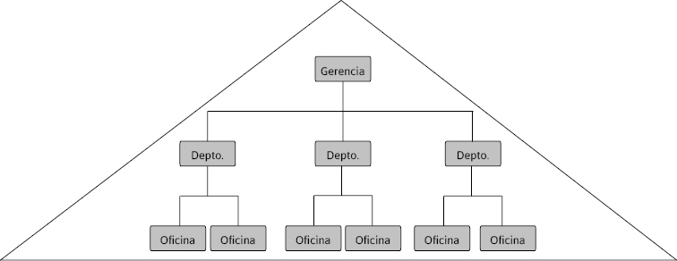
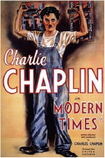

La organización científica del trabajo: el contexto histórico del surgimiento del taylorismo, el fordismo y los modelos organizacionales autogestionados
Diego Szlechter, Evangelina Caravaca, Carlos Meilán, Gabriela Tavella y Claudio Fardelli Corropolese
Benjamin Coriat (1994b) nos enseña que es muy importante leer al autor en su contexto, y realizar este ejercicio implica dos movimientos en paralelo: por un lado, la contextualización espacio-temporal: ¿en qué momento surge el autor?, ¿en qué lugar suceden los acontecimientos que analiza?, ¿a quiénes se está dirigiendo? Por otro lado, la contextualización histórica: ¿en qué contexto histórico se ubican las ideas del autor? Las ideas no tienen un carácter abstracto o universal, válidas para cualquier momento histórico. Es necesario situarlas en un determinado tiempo, lo que, a su vez, nos ayuda a comprenderlas. El contexto histórico del texto de Coriat es la época previa al surgimiento de las escuelas de pensamiento organizacional o escuelas de administración, en la que se empezó a poner en discusión las diferentes ideas sobre cómo gestionar las organizaciones. Coriat nos ubica en un momento histórico en el que la praxis domina el saber organizacional. ¿Qué significa esto? En los Estados Unidos de fines del siglo xix, la organización no era un objeto de estudio del mundo académico. Hombres de negocios, ingenieros y propietarios de grandes firmas pensaban “lo organizacional” a partir de su propia experiencia. Es en este contexto en el que surge un personaje tan famoso como Frederick Taylor, precursor de la escuela clásica.
¿Qué sucede en los Estados Unidos pretayloristas? Para tener un fresco, un panorama del acontecer en dicho país, podemos recurrir al filme Lincoln, dirigido por Steven Spielberg, de 2012. El tema central es, más allá de la vida de uno de los presidentes estadounidenses, la guerra civil, o guerra de secesión, que se desarrolló entre los años 1861 a 1865, librada entre el norte industrializado y el sur esclavista. También el filme Django sin cadenas, del director Quentin Tarantino, del mismo año que Lincoln, nos muestra de manera clara cómo se desarrollaba la vida en el sur esclavista de los Estados Unidos. En la película, unos pocos hacendados de grandes extensiones de tierra cultivaban principalmente algodón, gracias al trabajo esclavo de los negros provenientes de África. El algodón era exportado en su totalidad hacia Inglaterra, a muy bajo costo, debido a que la mano de obra no tenía costo alguno, y constituyó uno de los insumos que ayudó a Inglaterra a expandirse en todas sus colonias. Cuando se le acababa la materia prima barata, salía a conquistar nuevos territorios para disponer de mano de obra esclava en otros lugares. El algodón era muy funcional tanto a los esclavistas estadounidenses como a Inglaterra. Gracias a que los Estados Unidos constituyeron una colonia británica hasta fines del siglo xviii, los lazos entre las dos naciones siguieron siendo estrechos, especialmente en términos comerciales.
Por su parte, el norte, específicamente el noreste de los Estados Unidos, era una zona industrializada, carecía de plantaciones de algodón y uno de los elementos que fabricaba era armamento, como el famoso fusil Whitney o la pistola Colt. El ejército de Lincoln sale victorioso frente al ejército de los Estados Confederados, tal como se conocía al sur de los Estados Unidos. Las razones del triunfo del norte son varias, pero una de ellas, que nos atañe específicamente a nosotros para poder comprender el contexto del surgimiento del taylorismo, es la forma en que se fabricaban los rifles. Las batallas que libraba el norte contra el sur se daban en terrenos pantanosos o en lodazales, bajo climas extremos. Los rifles del ejército del sur se trababan frecuentemente y se convertían en inservibles porque se fabricaban de manera artesanal. En cambio, el ejército del norte tenía fusiles y rifles fabricados con piezas intercambiables, por lo que si una pieza se arruinaba, disponían de repuestos que podían reemplazar a las piezas averiadas. Esto era posible porque las piezas eran idénticas, algo muy novedoso para la época. Hasta ese momento, los fusiles se fabricaban de manera artesanal y cada uno constituía una pieza única. El norte industrializado empezó a darse cuenta que podían fabricar masivamente fusiles con piezas de recambio idénticas, inaugurando dos pilares de la industrialización de los Estados Unidos de fines del siglo xix: la masividad y la fabricación en serie. Esto es fundamental para comprender el contexto del surgimiento del taylorismo, al tiempo que constituye una de las razones por las que termina primando el norte de los Estados Unidos por sobre el sur, con lo que se inaugura la época de la hegemonía mundial de ese país.
En nuestra región, entre los años 1864 y 1870, se libró la guerra de la Triple Alianza, en la que lucharon, por un lado, la alianza entre Brasil, Uruguay y la Argentina, y por el otro, Paraguay. En dicha guerra, Paraguay pierde cerca del 80% de su población masculina, quedándose casi sin mano de obra activa, lo que perjudica fuertemente su economía que hasta ese momento era pujante, a tal punto, que, según algunos autores, fue Paraguay el primer país sudamericano en disponer de una red de ferrocarriles y de un telégrafo. Durante el gobierno de Solano López, Paraguay se propuso construir un país industrializado, lo que se volvió una amenaza para las potencias (especialmente Inglaterra) que pretendían monopolizar el intercambio de bienes manufacturados con Latinoamérica. Por diversas razones, en 1864 estalla la guerra y uno de los países más beneficiados en la contienda fue sin duda Inglaterra, debido a dos razones. Por un lado, las deudas que contrajeron con la banca inglesa los cuatros países que participaron de la guerra; y, por otro lado, la posibilidad de reemplazar –al menos en parte, debido a que Gran Bretaña se proveía del algodón de Egipto y de la India, ambos colonias suyas– el algodón del sur esclavista de los Estados Unidos –que había perdido la guerra de secesión– por el algodón paraguayo. El contexto en el que se va a desarrollar el capitalismo sudamericano es el de una posición subordinada por parte de Latinoamérica respecto de las necesidades de desarrollo del capitalismo avanzado europeo. El principal objetivo de Inglaterra era evitar el desarrollo de economías proteccionistas en Sudamérica.
Regresando a los Estados Unidos, una vez unificado el país, uno de sus objetivos era terminar de conquistar todo el territorio estadounidense, incluyendo el oeste. Para lograrlo, no alcanzaba con doblegar a los indígenas por medio de la fuerza sino que también había que poblarlo. Si, tal como decía Alberdi, gobernar es poblar, a partir de 1860 empieza a llegar al “Lejano Oeste” el ferrocarril transcontinental de los Estados Unidos, y junto con él llega también el telégrafo, lo que posibilita la comunicación a grandes distancias. ¿Por qué? Al lado de las vías del tren iban los cables del telégrafo. En forma paralela, se expande la producción de carbón que servía de energía para la industrialización. Todo esto coadyuva, contribuye, al surgimiento de la gran corporación estadounidense alrededor de 1880, cuyo primer ejemplo es el de la empresa de ferrocarriles. Los grandes capitales de esa época invertían en ferrocarriles. ¿Por qué? Porque era imprescindible para transportar las mercancías y venderlas en el vasto territorio estadounidense. Pero el problema surgió cuando se complejizó la gestión de este tipo de corporaciones, debido a las distancias siderales que recorrían. Era muy difícil que un solo dueño pudiese manejar todas las operaciones del ferrocarril. Alfred Chandler Jr., historiador de empresas estadounidense, escribió un libro muy conocido titulado La mano visible (1977). ¿Por qué se llama así? ¿Contra quién se peleaba? Contra la mano invisible de Adam Smith, que ordena los recursos en el mercado y genera automáticamente prosperidad a través del derrame. Según el autor escocés, hay que dejar a los ricos que sean más ricos, porque la riqueza va a derramar hacia las clases populares. Chandler, como contrapunto de Smith, sostiene que hay una mano visible que surge alrededor del año 1880 en las grandes empresas que ya no podían ser manejadas por una sola persona: los managers o gerentes.
A partir de ese momento, surge el problema de la propiedad versus el control de las empresas. Por un lado, los dueños de las firmas, y por otro, los encargados de gestionarlas y controlar su funcionamiento. Antes, esos dos roles estaban unificados en la misma persona, pero a partir de 1880 la complejidad de manejar empresas tan grandes obligó a los dueños a contratar directores asalariados, gerentes, managers, que percibían un ingreso por administrar las operaciones cotidianas de las compañías. Cada uno de los directivos contratados por las firmas se encargaba de una zona geográfica del ferrocarril o de una función, como la de finanzas o comercialización. ¿De dónde podían reclutar a estos directivos asalariados? De las Universidades. Es así como surgen las escuelas de negocios, que ofrecían cursos específicos para esta nueva estructura de asalariados. Los posgrados en negocios, los mba (Masters in Business Administration), como el de Harvard, cuya primera edición data de 1890, son fieles ejemplos de esto. Estos posgrados empiezan a formar cuadros de conducción de acuerdo a las necesidades de las grandes corporaciones.
Antes de adentrarnos en el texto de Coriat (1994b), necesitamos ver qué sucedía en nuestro país mientras se generaban las condiciones para el surgimiento del taylorismo en los Estados Unidos. El año 1852 constituye un hito histórico para la Argentina. En ese año se libra la batalla de Caseros, en las cercanías de lo que hoy es El Palomar, en la provincia de Buenos Aires. En dicha batalla lucharon los unitarios, al mando de Justo José de Urquiza, contra los federales, al mando de Juan Manuel de Rosas. Más allá de estas denominaciones, la verdadera lucha, la más profunda, de raíz ideológica, era la puja por dos modelos de país. Por un lado, el modelo rosista, proteccionista del mercado interno y de alguna manera industrialista, y por otro, el modelo liberal y libremercadista representado por Urquiza.
Karl Marx, en el libro El capital (2003), sostiene que la clave de la industrialización es la protección de la industria, que no existe otra vía. Lo que proponía el modelo económico rosista, que terminó perdiendo en la batalla de Caseros, era un modelo proteccionista, que buscaba –dentro del intercambio mundial de mercancías y en la división internacional del trabajo– que la Argentina no ocupara el papel de mero exportador de carnes, cueros y trigo, porque esa no era la manera de desarrollarse, sino que conducía a la concentración de la riqueza en muy pocas manos, junto con grandes masas de trabajadores pauperizados. Los países desarrollados protegían mucho su economía. ¿Qué pretendían las potencias mundiales de ese momento? Inglaterra pretendía venderle a la Argentina maquinaria agrícola a cambio de cueros y trigos. ¿Dónde se pagaban mejores salarios? ¿En el campo o en la fábrica en la que hacían la maquinaria agrícola? Evidentemente, en la fábrica de la maquinaria los salarios eran más altos. Es en ese contexto en el que se dirimía la batalla de Caseros: entre un modelo de desarrollo similar al de las grandes potencias y un modelo periférico proveedor de materias primas al mundo desarrollado. Esa disputa sigue presente. La derrota del rosismo, de ese pensamiento proteccionista, implica la victoria del pensamiento mitrista. Bartolomé Mitre fue, luego de la batalla de Caseros, presidente de la Argentina. En Caseros triunfaron las ideas liberales, según las que a la Argentina le toca jugar un papel subordinado en la división internacional del trabajo.
Una consecuencia del posicionamiento de nuestro país en la división internacional del trabajo se refleja en 1933, con el tratado Roca-Runciman. Por él, Julio Argentino Roca (hijo), ministro de Relaciones Exteriores de la Argentina, viaja a Canadá –ex colonia británica– a negociar con el ministro de relaciones exteriores inglés Walter Runciman, debido a que el Imperio británico había decidido dejar de comprar cueros a la Argentina, para pasar a comprárselos a Australia –otra excolonia–, lo que implicaba la bancarrota de la Argentina, ya que carecía de una economía diversificada. En el marco de la negociación, la Argentina tuvo que ofrecer cuero a un precio mucho menor al que ofrecía hasta ese momento y, a cambio de eso, todas las obras de infraestructura de Buenos Aires, las cloacas, los tranvías y los trenes, se los tenía que adjudicar a Inglaterra. Este tipo de claudicación de la soberanía se debió al carácter agroexportador de la industria nacional. Es producto de la derrota de un modelo proteccionista de la economía en 1852, en la localidad de Caseros.
Ese es el contexto a partir del que nuestro país es testigo del surgimiento del taylorismo en los Estados Unidos, que a su vez tendrá implicancias al momento de importar las ideas de Taylor a las fábricas locales. Si en los Estados Unidos la guerra civil implicó el triunfo del industrialismo, en nuestro país, la batalla de Caseros llevó a la victoria al modelo liberal. Estados Unidos se convirtió en potencia mundial, mientras la Argentina pasó a ocupar un lugar periférico en la división internacional del trabajo.
Domingo Faustino Sarmiento escribió el libro Facundo unos años antes de la batalla de Caseros. En ese texto se logra ilustrar un panorama de las ideas hegemónicas de esa época en nuestro país, las que estuvieron en disputa en aquella batalla. Obviamente, las ideas reflejadas en el Facundo comulgaban con las defendidas por Urquiza y Mitre en esa lucha:
¡Qué ilusión! Ese estado se levantará en despecho suyo aunque siegue en su retoño cada año porque la grandeza del Estado está en la pampa pastora, en las producciones tropicales del norte y en el gran sistema de ríos de navegación cuya aorta es el plata. Por otra parte, los españoles [en referencia a los inmigrantes españoles que vivían en la Argentina y que eran mayoría en relación con el resto de los inmigrantes de aquella época] no somos ni navegantes ni industriosos y Europa nos proveerá por largos siglos de sus artefactos a cambio de nuestras materias primas y ella y nosotros ganaremos con el cambio. Europa nos pondrá el remo en la mano y nos remolcará río arriba hasta que hayamos adquirido el gusto de la navegación (Sarmiento, 1999: 249-250).
La admiración de Sarmiento por los avances tecnológicos del mundo desarrollado lo llevó a adoptar una ideología “naturalista” en relación con el desarrollo económico. Según él, la geografía y el clima argentino nos condenaban a una posición subordinada en el escenario geopolítico mundial. La supervivencia de la Argentina dependía de que asumiera su papel de productor y exportador de materias primas, mientras que el mundo desarrollado nos proveería de los adelantos tecnológicos que nos ayudarían a sumarnos al concierto de las naciones “civilizadas”.
Benjamin Coriat describe el contexto histórico del surgimiento del taylorismo en los Estados Unidos, cuna de ese pensamiento organizacional. El esfuerzo por contextualizar el fenómeno, así como por prestar atención a la forma en que fue importado en la industria local, nos ayuda a comprender que las ideas no se trasladan de manera automática de un país a otro. Esto no quiere decir que no había interés de trasladarlo automáticamente, sino que el contexto diferente obliga al capitalismo a adaptarse al nivel de desarrollo de cada región. Cuando se trasladan los postulados tayloristas desde Estados Unidos a la Argentina, debemos tomar en cuenta que así como en la guerra civil estadounidense salieron victoriosas las ideas industrialistas, la batalla de Caseros en nuestro país signó nuestro destino económico como país agroexportador. Benjamin Coriat, economista del trabajo, de origen francés y contemporáneo, cuyos textos son leídos no solo por economistas sino también por sociólogos del trabajo y de las organizaciones, sostiene que, para poder entender el fenómeno del taylorismo es necesario analizar las condiciones históricas previas al surgimiento de este fenómeno, por ejemplo, las características de las relaciones de clase en el siglo xix.
Las clases sociales pueden dividirse de acuerdo a criterios simbólicos, como estatus o prestigio, o por criterios materiales, como el nivel de ingreso. Las clases sociales tienen componentes tanto materiales como simbólicos y su composición depende también del contexto histórico, ya que se definen en términos relacionales (es decir, una clase en relación con otra en un determinado momento histórico) y no absolutos. Otra de las formas de identificar a las clases sociales es a través de la posición de los actores en el ámbito laboral. De esta manera, la ubicación en la estructura jerárquica, en el seno de las organizaciones, forma parte del triángulo que define a las clases sociales en términos multidimensionales. En síntesis, hay tres componentes que conforman las clases sociales a partir de la Revolución Industrial: un componente simbólico, un componente material y un componente relativo a la posición jerárquica o a la autoridad dentro la esfera organizacional. Los primeros dos componentes se dirimen en el mercado (por fuera de la órbita organizacional), mientras que el tercero lo hace dentro de la organización. Los criterios simbólicos y materiales están fuertemente influidos por la herencia familiar, la acumulación de credenciales y títulos, así como por la acumulación de capital.
Coriat señala que, para poder comprender el fenómeno del taylorismo, es preciso comprender cómo eran las relaciones de clase en el siglo xix, en los Estados Unidos, antes del surgimiento de este fenómeno. A fines del siglo xix y principios del siglo xx, los empresarios buscaban obreros hábiles y disciplinados,
que supiesen hacer su trabajo y que obedecieran. El autor intentará explicar por qué
a los empresarios les costaba conseguir obreros que conocieran el oficio y
que acatasen las normas del capital. ¿Con qué se enfrentaban los empresarios estadounidenses en esa época? Con obreros de oficio, quienes conocían muy bien los secretos de fabricación de los diferentes productos que se ofrecían en el mercado. Esos obreros eran herederos de los secretos de los gremios europeos. Los gremios en Europa, también llamados guildas, eran como sindicatos pero de oficios, es decir, que quienes los conformaban manejaban exactamente el mismo oficio. En la actualidad, un mismo sindicato puede albergar diferentes oficios. En la época de las guildas, no aceptaban a obreros ajenos a la tarea que los nucleaba. Los criterios de inclusión en los gremios eran sumamente estrictos. Aquellos que no tenían oficio estaban condenados a trabajos temporarios, muy precarios y de baja calificación, por lo general en el campo.
Según Coriat, las figuras en el nacimiento de la industria en los Estados Unidos fueron los empresarios frente a los trabajadores de oficio. Los empresarios necesitaban de estos obreros, no les servía un obrero que no conociera los secretos de su trabajo. En Europa Occidental, lugar de procedencia de la mayoría de los trabajadores de los Estados Unidos, los empresarios sufrían las complicaciones de la industrialización precoz: el gremio y el aprendizaje. Los secretos del oficio se aprendían exclusivamente en los gremios. Ambos estaban intrínsecamente ligados. ¿Cómo se aprendían los oficios? No se lo hacía en las Universidades, sino que el aprendiz debía incorporar los conocimientos trabajando con el maestro artesano durante largos años. El oficio implicaba conocer todo el proceso de elaboración de un producto, no solo una parte, como va a proponer el taylorismo. ¿Qué se enseñaba en las Universidades? En ellas no había disciplinas tan estrictas como las actuales, sino que se inculcaban conocimientos generales vinculados, por un lado, a las humanidades (teología o estudios religiosos), y por otro, con el saber científico, como las matemáticas y la geometría. En líneas generales, la transmisión de estos conocimientos era de manera muy enciclopédica y quienes accedían a estas casas de estudio pertenecían, por lo general, a las clases altas.
Aún con la desaparición de los gremios, cuando el capital logra romper con esta forma tan secreta de transmisión de saberes, la manera en que los trabajadores conservan los secretos del gremio es por medio de la endotecnia. La transmisión de los saberes del oficio empieza a hacerse en el seno de la familia; el padre herrero le transmitía los secretos de la herrería solo a sus hijos. Con la endotecnia, la forma de administrar los saberes no era a través del gremio sino por las relaciones de parentesco. Era una forma primitiva de resistencia al capital, ya que con la desaparición de los gremios, más que un capricho, la endotecnia fue una cuestión de supervivencia y mantuvo los salarios altos, producto de la escasez de conocimientos difícilmente reemplazables para el capital.
En esa época, Gran Bretaña, el mayor imperio del momento, para expandirse en el resto de sus colonias y en el mundo –como lo mencionamos anteriormente– necesitaba del algodón barato que recibía del sur de los Estados Unidos para fabricar las telas y vestimentas que eran vendidas en todo el planeta. Asimismo, la lana para la producción de abrigos provenía de sus propios campos, pero con el crecimiento de sus exportaciones necesitaba grandes extensiones de tierra para la cría de ganado ovino. Es así como se produce el proceso de enclosure, cercamiento, por el que comenzaron a expulsar al campesinado de sus tierras, a fin de utilizarlas en la cría de ganado lanar por parte de los terratenientes. Esos campesinos expulsados de sus tierras migraron hacia las grandes urbes de la época: Lancashire, Liverpool, Manchester. En ellas, se convirtieron en trabajadores sin oficio.
Simultáneamente, en los Estados Unidos, el oficio no era condición para el desarrollo de la industria, sino que constituía un obstáculo para el desarrollo del capital. El capital no quería incorporar trabajadores de oficio, sino que pretendía apropiarse del oficio e incorporar trabajadores que no lo tuvieran. De acuerdo con la lógica empresarial, los conocimientos del oficio debían pasar al capitalista. Los conocimientos de los secretos del oficio generaban escasez de mano de obra, lo que redundaba en altos salarios. Por otro lado, cuando el empresario contrataba a un obrero de oficio, se le hacía difícil disciplinarlo, ya que la propiedad de los conocimientos acerca del proceso de producción estaba en manos obreras y los trabajadores se oponían a transmitir dicho conocimiento a los asalariados que carecían de él. A los ojos del capital, tanto la escasez de mano de obra como la indisciplina obrera eran obstáculos para el desarrollo de la industria.
Si la dependencia obrera del capitalista parece una “ley de la naturaleza”, en realidad es el resultado de un proceso histórico de violencias sistemáticas, para asegurar por medios económicos y legislativos la “liberación” de la fuerza de trabajo rural. Según las necesidades del capital, todas las fuerzas productivas tienen que tener “libertad” para ser contratadas; el capital necesita disponer de libertad para reclutar y para despedir trabajadores. Para lograrlo, el trabajador tiene que tener “libertad” de movimiento y para eso hay que “liberar” a los trabajadores del oficio. ¿Por qué? Porque los secretos del oficio están en muy pocas manos, mientras una gran masa de trabajadores sin oficio no puede ser contratada porque carece de los conocimientos necesarios del proceso productivo. Por eso, el capital precisa, por medios económicos y legislativos, traer a la mayor cantidad de trabajadores del campo, sin especialización, hacia las ciudades, para que empiecen a presionar a los trabajadores de oficio para que liberen sus secretos. Es así como comienza un proceso de sustracción del saber obrero. El oficio deja de ser aquello que el capital puede llegar a contratar a un alto costo y empieza a ser un obstáculo fundamental para el desarrollo industrial.
¿Qué conflictos había en los Estados Unidos alrededor del oficio? Algunos ejemplos que menciona Coriat son muy ilustrativos: los trabajadores de oficio de los Estados Unidos estaban agrupados en sindicatos de oficio y estos, a su vez, pertenecían a la afl (American Federation of Labor). Estos sindicatos funcionaban no solamente para proteger los intereses de los trabajadores en el espacio de trabajo, sino que funcionaban como agencias de contratación de personal. Cuando las empresas necesitaban contratar un nuevo trabajador de oficio, tenían que dirigirse al sindicato de ese oficio y este se encargaba de conseguirles un trabajador, al tiempo que fijaba la tarifa, es decir el salario que debía percibir. La firma no podía salir a contratar trabajadores en el mercado, ya que si lo hacía, el sindicato se ocupaba de amedrentar al obrero recién contratado para disuadirlo de actuar por fuera de él. En esa época, los sindicatos en Estados Unidos colaboraban con las empresas y contribuían a la persistencia de la pauperización de los inmigrantes carentes de oficio, quienes se morían de hambre, en parte, por causa de la política sindical de prohibir su contratación. Los sindicatos de oficio estaban compuestos por la aristocracia obrera, es decir por trabajadores altamente calificados que percibían altos salarios al tiempo que estaban protegidos por dichos sindicatos. Debido a las costosas tarifas que las compañías debían pagar a sus trabajadores, muchas empresas empezaron a quebrar. Los boicots de las que eran objeto por parte de los sindicatos, debido a los fracasos en la negociación con las empresas, obligaban a las firmas a pagar las tarifas dictadas por los sindicatos. La gravedad de las consecuencias de los boicots llevó al capital a tratar de deshacerse de este tipo de sindicatos, que les impedía contratar a muy bajo costo a los inmigrantes que venían sin ninguna especialización.
Según Coriat, para acumular a gran escala, para convertirse en una gran corporación, era imprescindible atacar al oficio. ¿Cómo se atacó al oficio? Con millones de inmigrantes. Los millones de inmigrantes que llegaron a los Estados Unidos van a ejercer una presión tal sobre el mercado de trabajo, que ayudará a reducir los salarios. Los inmigrantes sin oficio eran campesinos europeos que se habían trasladado a las ciudades europeas y de ahí emigraron a los Estados Unidos. Muchos de esos campesinos habían sufrido el enclosure, el cercamiento.
¿Cómo hicieron para destruir al gremio? El capital se las ingenió para destruir no al gremio, sino al oficio. Fue un proceso paulatino. Uno de los modos de luchar contra el oficio fue la inmigración, la oleada migratoria más grande de la Edad Moderna. Por otro lado, el autor menciona las prácticas pretayloristas de lucha contra el oficio. ¿Cuáles fueron las prácticas pretayloristas?
1) La instalación de máquinas: es una de las soluciones propuestas contra la resistencia del oficio. Aquí comienza la alianza entre el capital y la ciencia. ¿Dónde se desarrollaban las máquinas? Eran producidas a partir de tecnologías desarrolladas en las Universidades. A través de los conocimientos de las ciencias básicas, como la física y la química, el capital podía emular los secretos empíricos que tenía el oficio. ¿Cómo se desarrollaron los secretos del oficio? Se remontan a la Edad Media, o incluso antes, a través de la prueba y el error. Lo que diferencia esa prueba y error de los conocimientos científicos del capitalismo moderno es que estos últimos poseen la capacidad de predictibilidad que se logra a través de la experimentación. Lo que quiere decir que, con cierto nivel de probabilidad, se puede predecir qué va a suceder, por medio con un cálculo estadístico. Esto es precisamente lo que diferencia a la prueba y error de la llamada “ciencia moderna”. Max Weber lo retrata muy bien en su libro La ética protestante y el espíritu del capitalismo (2003), cuando compara a la medicina oriental tradicional, como la acupuntura, con la medicina occidental moderna.
¿Cuál es la diferencia entre ambas? Las dos aplican la medicina pero la diferencia es que la acupuntura tiene 3000 años de historia y es capaz de decir que, si se aplica una aguja en un lugar del cuerpo, uno se va a curar de una determinada dolencia. Sin embargo, la medicina oriental no será capaz de explicar el mecanismo según el cual una aguja aplicada a un nervio puede curar otra zona del cuerpo. Lo que puede decir es que hace 3000 años que lo practica y funciona. ¿Qué es el conocimiento científico occidental y moderno, según Max Weber? Nunca se va a poder llegar a curar una dolencia si no se entiende el proceso que lleva a calcular, con una cierta probabilidad, que si se interviene en un lugar del cuerpo, se va a curar otra parte. La ciencia moderna necesita conocer el proceso para poder predecir y solo se logra a través del conocimiento científico, estableciendo una hipótesis y probando su veracidad.
Volviendo al oficio, la idea es tratar de llegar a sus secretos a través del desarrollo de la máquina que reemplace a ese oficio. ¿Qué logra la máquina? Reducir los costos de fabricación, porque se contratan máquinas que duran muchos años y no a personas. Al reducir el costo de fabricación, se logra descalificar al obrero, porque algunas de las tareas que realizaba las puede hacer la máquina. La firma necesitará del obrero que controle a la máquina, descalificándolo, porque la tarea de mantenimiento o control de las máquinas es mucho más simple que manejar un oficio. El objetivo final del capitalismo es el robot, es decir, no tener empleados ni empleadas, no tener trabajadores ni trabajadoras.
En la película italiana de 1971, del director Elio Petri, La clase obrera va al paraíso, se muestra cuando una fábrica taylorista tiene que contratar a dos trabajadores: lo que hacen es llamar al obrero más habilidoso y pedirle si los puede capacitar. La capacitación dura un par horas y es interesante como el obrero habilidoso se dirige a los nuevos ingresantes diciéndoles: “Este trabajo lo puede realizar un mono”. Ese es el verdadero objetivo del capital: descalificar al obrero de tal manera que pueda ser reemplazable por un “mono”.
Otra cosa que genera la máquina es un aumento del ritmo de trabajo. ¿Por qué? El obrero se cansa, mientras que la máquina no genera resistencia alguna; mientras no se averíe, es posible aumentar el ritmo de trabajo. La máquina no es capaz de guardar los secretos del proceso de producción. El obrero trabajaba a un ritmo menor del que era capaz. El capital veía en esto la vagancia innata de los obreros, pero en realidad, si los trabajadores aumentaban el ritmo de producción, corrían el riesgo de accidentarse y morirse de hambre. Un accidente implicaba dejar de trabajar y en esa época no existía seguro por accidentes de trabajo, ni tampoco seguro por desempleo. El obrero, trabajando a un ritmo menor de lo que planificaba el capital, protegía su integridad física, pero esto era visto por los empresarios como holgazanería.
La máquina permite, además, luchar contra la organización obrera, porque logra desmovilizar a los trabajadores. ¿Por qué? En la máquina, los trabajadores tienen que estar atentos para controlarla y supervisarla, no pueden estar desplazándose para moverse, para compartir experiencias, para compartir malestares. Esas interacciones sociales pueden sembrar la conflictividad. En cambio, si se los mantiene fijos en sus puestos, la máquina se erige como una muy buena herramienta de desmovilización.
La instalación de las máquinas ofrece la posibilidad de luchar contra la insubordinación e indisciplina obrera. La máquina constituye una amenaza al obrero porque al extraerle parte de sus saberes, logra hacerlo reemplazable, cuestión que el fordismo va a desarrollar aún más con la incorporación de la cinta transportadora en la cadena de montaje. Aquellos empresarios que no habían incorporado maquinarias, estaban en inferioridad de condiciones porque su productividad era menor. Estas diferencias de productividad llevaron a la quiebra a miles de empresas.
La incorporación de la máquina en el proceso productivo conllevaba un deslumbramiento por la tecnología, fenómeno muy presente en una época en la que reinaba el pensamiento positivista, con la creencia en que la ciencia es la vía hacia el progreso y el bienestar general. El positivismo criticaba todo lo que era previo al conocimiento científico, inclusive la forma tradicional de trabajar. La máquina no solo hace al trabajador más productivo, sino que pasa a ser un instrumento de regulación y sometimiento de los trabajadores, una suerte de amenaza para ellos.
Dentro de las críticas hacia esta población, se encontraba la del nomadismo obrero. ¿Cómo manifestaban los obreros el rechazo a la fábrica? Rotando, cambiándose de trabajo permanentemente, porque el trabajo los extenuaba, los mataba, entonces el nomadismo obrero funcionaba como un rechazo a la fábrica, que era vista como una prisión atenuada. Pero no trabajar en la fábrica implicaba morir de hambre. El nomadismo obrero era visto por el capital como una cuestión de pereza y vagancia.
La figura argentina del nómada era el gaucho, que estaba muy mal visto por el capitalista argentino porque, al igual que en Europa y en los Estados Unidos, veía en ellos el símbolo del rechazo al trabajo. Así como en 1834, bajo la ley de los pobres inglesa, la pobreza era castigada y se prohibía a los vagabundos en las calles, en la Argentina, el Código Rural de 1823 también penaba la vagancia y estaba destinado especialmente a combatir al gaucho rebelde y “salvaje”, obligándolo a incorporarse al sistema capitalista de producción. De lo contrario, se convertían automáticamente en personajes peligrosos y si eran peligrosos, eran pasibles de ser condenados y llevados a prisión. Los “rebeldes” del sistema debían ser incorporados por la fuerza a la fábrica. El gaucho se escapaba de la institución del Estado, pero el Estado lo obligaba a asistir a la escuela, lo obligaba a alistarse en el ejército, hasta que, finalmente, al gaucho lo terminan domesticando, pero, básicamente, son eso: son figuras que buscan salirse del dominio, del control del Estado, todo el tiempo.
2) La utilización de niños: el capital logra establecer otra “ley de la naturaleza”. Como forma de lucha contra el oficio y la resistencia obrera, los empresarios empezaron a mostrar preferencias por la contratación de niños. La forma en que el capitalismo mostraba esta ley natural era presentar la contratación de niños como una necesidad técnica. ¿Por qué necesitaban niños? Porque consideraban que podían deslizarse fácilmente por debajo de los telares. Tal como mencionamos anteriormente, una de las formas de destruir el saber obrero era transformarlo en un mono, es decir, en un trabajador cuya única destreza fuera supervisar la máquina, y si esta se rompía –cosa que sucedía a menudo debido a su tecnología rudimentaria–, preferían contratar a un niño de ocho años, que es más pequeño, más ágil, más disciplinado y más económico, para que se deslizara por debajo de los telares y pudiera repararlos.
¿Qué es lo que se pretende disciplinar en el capitalismo pretaylorista? Los cuerpos. El niño se va a convertir en un “educador” del obrero, señalándole cuán disciplinado y “económico” tiene que ser. Con el desarrollo del Estado moderno, que va a asegurar la reproducción de la fuerza de trabajo, llega la ley de asistencia obligatoria a las escuelas. Si la contratación de niños en las fábricas pretayloristas continuaba indefinidamente, el capitalismo iba a necesitar de forma permanente flujos migratorios en cantidades cada vez mayores, porque estos niños no iban a llegar a la adultez debido a un desgaste físico precoz, muriendo “antes de tiempo”. El Estado moderno, como regulador de la economía, obligará a los empresarios a contratar obreros mayores de 12 años, edad en que terminaban la escuela primaria. El capital estará obligado a permitirles desarrollarse físicamente, mientras que la escuela los someterá paulatinamente a la disciplina necesaria para el trabajo fabril. La escuela los preparará para una salida exitosa al mercado laboral. La libertad de contratar niños como forma de lucha contra el oficio iba a acabar con el mercado de trabajo.
En nuestro país, en el año 1884 y bajo la presidencia de Julio Argentino Roca (padre), se promulgó la Ley Nº 1420 de educación primaria universal, obligatoria, laica y gratuita, que incorporaba las nuevas ideas que circulaban en el mundo industrializado. La masa de inmigrantes que estaba recibiendo el país, muchos de ellos analfabetos, necesitaba pasar por un sistema educativo que los “nacionalizara” y los preparara para incorporarse a un mercado laboral de una economía en crecimiento. De esta manera, la alfabetización ayudó al desarrollo del capitalismo argentino, pero también sentó las bases de la resistencia a él, porque una mayor tasa de alfabetización posibilitó la difusión de ideas socialistas y anarquistas, y la transmisión de experiencias de explotación por medio de folletos, panfletos y periódicos.
3) La tercera práctica pretaylorista de lucha contra el oficio fue la más sofisticada: la utilización del destajista. Ya sea dentro o fuera de la fábrica, el empresario podía librarse del ejercicio de la disciplina de trabajadores que poseían los secretos del oficio y que, gracias a ello, tenían gran capacidad de resistencia. Contratando a un trabajador de oficio como destajista, se le delegaba el control de una parte del proceso productivo y el control sobre los trabajadores que quedaban a su cargo. La firma le prestaba las máquinas y este se encargaba de contratar a sus obreros. La empresa le imponía una cuota de producción determinada. ¿Por qué hace esto el capital? Su objetivo era utilizar el oficio contra sí mismo. ¿Por qué? Porque entonces un obrero con conocimientos del oficio es contratado por el capital como destajista y va a contratar a trabajadores que también conocen los secretos del mismo oficio, pero ahora, como el jefe conoce los secretos del oficio, va a poder marcar el ritmo de producción. De esta manera, el ejercicio del poder será mucho más eficaz porque el capital lo delegará en un excompañero de trabajo. Cuando el poder no se muestra, cuando es invisible y quienes se encargan del control son los propios compañeros de trabajo, la eficacia del poder es mucho mayor.
Una frase de David Montgomery en el texto de Coriat tiene la capacidad de resumir al taylorismo: “El cerebro del patrón se encuentra bajo la gorra del obrero” (1994b: 23). ¿Qué significa? A partir de la emergencia del taylorismo, el obrero no necesita utilizar más su cerebro. El objetivo es que un “mono” pueda realizar el trabajo de un obrero, debido a su simpleza y mecanicidad. El cerebro puede ser usado, pero fuera de la fábrica. Dentro de ella, solo el dueño, el supervisor o el capataz lo utiliza. La contracara de esto era la necesidad de pasividad absoluta de los obreros. A diferencia de las prácticas pretayloristas, Taylor innova en su ataque al oficio mismo porque no pretende estimular el oficio ni quiere dirigirlo contra sí mismo como con el destajista. El interés de Taylor es directamente destruir el oficio. Es así como inventa el concepto de administración científica del trabajo u organización racional del trabajo. ¿Qué es la administración científica? Su objetivo es acabar con el oficio para acabar con el control obrero de los tiempos y los ritmos de producción. ¿Por qué Taylor quiere destruir al oficio? Porque necesita destruir la capacidad que tienen los obreros de administrar su trabajo, de regularlo, tanto en términos de intensidad como de manejo de los tiempos.
El propósito central de Taylor fue desmonopolizar el control obrero del proceso de trabajo, es decir, que los conocimientos del proceso de fabricación no estén monopolizados por el obrero, sino por el patrón o sus delegados. De esta manera, la relación de fuerzas se da alrededor del saber. Quien domine, y dicte los tiempos y modos de operar, se va a apropiar de los tiempos y modos de producción; el que conoce cómo producir los bienes, podrá saber a qué ritmo es posible hacerlo y podrá controlar con qué intensidad, en cuánto tiempo y con qué ímpetu se puede producir. El dominio del oficio permitía la protección contra accidentes de trabajo o disminuir la intensidad del trabajo cuando llegaba la fatiga. Taylor desea instalar la norma patronal allí donde hasta hace poco se encontraba el oficio.
A partir de 1815 se produce la migración más grande de la historia moderna. Millones de obreros europeos migran hacia los Estados Unidos. Según Coriat, la era de la industrialización y de la creación de las naciones también es la era del éxodo para los pueblos. ¿Por qué? Porque a comienzos de la industrialización europea, ya sea por la fuerza o por propia voluntad, muchos campesinos sin oficio se desplazaban a las urbes industrializadas como las inglesas Lancashire, Liverpool y Manchester. Para engrosar el “ejército industrial de reserva” y mantener a bajo costo la mano de obra debido a su abundancia, se habían dictado leyes que prohibían la emigración de estos trabajadores. Los Estados europeos, especialmente Inglaterra, necesitaban que los obreros que trabajaban en los telares pudieran ser fácilmente reemplazables por los pobres y hambrientos campesinos que estaban llegando a las ciudades. Para evitar las revueltas populares de estos migrantes internos, en Inglaterra tuvo que modificarse la ley, lo que dio comienzo a un desplazamiento masivo de obreros sin especialización ni contacto con el trabajo industrial hacia los Estados Unidos. Estos trabajadores iban a ser contratados por las empresas que se regían bajo el sistema taylorista. A pesar de carecer de oficio, podían ser empleados, ya que las tareas que debían realizar eran muy simples y repetitivas.
A partir de 1914, con el estallido de la Primera Guerra Mundial, en los Estados Unidos se produce un proceso de racionalización del trabajo. La movilización nacional para combatir las fuerzas enemigas le brindan legitimidad social al Estado para efectuar reclutamientos masivos no solamente para el conflicto bélico, sino también para las fábricas (especialmente para producir insumos para la guerra). La Gran Guerra es el punto culminante que posibilita la expansión masiva del fenómeno taylorista en las fábricas. La guerra instauró las condiciones óptimas para el despliegue de las ideas de Taylor en las fábricas.
1) El capital no pretende torturar los cuerpos, le basta con que estén sujetos a la producción de valor y bajo sus dictados. Si un equipo que trabaja de manera autónoma puede proporcionarlo, se recurrirá a él. Taylor apoyaba el proceso de descalificación del obrero, y de sus ideas es posible inferir que lo que buscaba era mejorar la productividad de la fábrica. Por ese motivo, si en algún momento se llegara a descubrir que el trabajo en grupo, o en equipos que administraran el trabajo de manera autónoma, generaba incrementos en la productividad, esto no contradeciría los postulados tayloristas. Taylor pretendía la disminución de la fatiga obrera, y para eso organizó la tarea de modo que el trabajador economizara movimientos corporales para poder aumentar el ritmo de producción con el mínimo de desgaste físico posible. Su objetivo era generar cuerpos más productivos. No se trataba simplemente de destruir el oficio, sino que el objetivo final de Taylor era la mejora de la productividad de cada obrero en el trabajo.
2) Taylor adhería a las ideas neoclásicas de Adam Smith referidas a la mano invisible del mercado. Por eso, sostenía que si aumenta significativamente la productividad del trabajo, necesariamente va aumentar el nivel de vida del pobre. ¿Por qué? Porque el capitalista va a tener la posibilidad de pagarle mejor (suponiendo que las mejoras en sus condiciones de vida las otorga el capitalista y no la lucha sindical). Desconoce la existencia de correlaciones de fuerza cambiantes en el tiempo, entre el trabajo y el capital, que pueden mejorar o empeorar el nivel de vida de las clases populares. Taylor depositaba en el capital toda posibilidad de progreso. Según él, una mayor productividad mejoraría el nivel de vida del pobre, transformando a su vez los objetos de lujo de una generación en los objetos de primera necesidad de la generación siguiente, porque los productos suntuarios se volverían de consumo masivo: todos podrían comprarlos. Esto no es otra cosa que la famosa “teoría del derrame”, que puede ser ilustrada como una copa –que representa el poder económico–, que cuando derrama su líquido, cae “naturalmente” hacia los sectores menos favorecidos. El derrame económico implicaría que, en algún momento, el obrero podría tener un estilo de vida parecido al del dueño de la fábrica.
De acuerdo con estas ideas, la producción masiva conduce automáticamente al consumo de masas. Si se produce en grandes cantidades, el consumo, inexorablemente, aumentará en la misma medida. La historia demuestra que, como sucedió en Europa, donde existían sindicatos con fuerte poder de negociación, la relativa igualdad social lograda en el marco de economías capitalistas se debió a la presencia de sindicatos muy fuertes que negociaban mejoras en las condiciones de trabajo, a la par del crecimiento de sus economías. En ese caso, la producción de masas fue acompañada por el consumo de masas. De lo contrario, el capitalismo no hubiese tomado la iniciativa de generar sociedades más igualitarias.
De todo lo expuesto, se advierte que existe un sistema de valores que está presente desde hace más de cien años en el capitalismo. Luego de una etapa de crecimiento económico, si el derrame no llega, se debe a fuerzas oscuras que lo impidieron. La idea del derrame también implica que cada uno tiene que hacer su esfuerzo personal para recibir los beneficios de ese derrame y, si esto no sucede a pesar del esfuerzo, se debe a que alguno lo habrá “merecido” más porque se esforzó más para conseguirlo. De acuerdo a estos postulados, cada uno puede crear su propio progreso y no hay necesidad que el Estado se ocupe de asegurar el progreso de sus habitantes, ya que eso distorsiona el modelo meritocrático en el que la superación es solo individual (obviamente que para los que quedan rezagados o improductivos, existe la caridad…). Las economías más desarrolladas del globo y las que más igualdad social alcanzaron tuvieron por detrás un Estado y una economía muy proteccionistas.
3) Todo dispositivo que permita economizar trabajo, terminará imponiéndose. El capitalismo demuestra que, incluso en la actualidad, toda forma de organizar el trabajo que permita ahorrar trabajadores o que estos trabajen de manera más intensa –y generar mejoras en la productividad y aumentos de la tasa de explotación–, como sucede con automatización, inexorablemente se impondrá. ¿Hasta qué punto es posible explotar al trabajador? Los trabajadores, incluso los de oficio, siempre fueron explotados. Pero la tasa de explotación de los que ostentaban los secretos del oficio era mucho menor que los trabajadores sin especialización. ¿Por qué? Por la rigidez del mercado del trabajo. ¿Quién rompe esa rigidez? Los inmigrantes. A partir de las olas migratorias más grandes de la Edad Moderna, se podrá contratar a gente sin oficio pagándoles un salario mucho menor. El último obstáculo a derribar era lo que Taylor llamaba “holganza obrera” y que en la práctica consistía en la posibilidad que tenían los trabajadores de manejar los tiempos y ritmos de producción. En efecto, Taylor logra disminuir esta “holganza” al eliminar los tiempos muertos o lo que él llamaba la “porosidad en el trabajo”. En el trabajo pretaylorista existían muchos tiempos muertos, porque cuando los trabajadores monopolizaban los secretos del oficio, podían descansar cuando querían sin tener la necesidad de intensificar su trabajo. En este sentido, Taylor –y Ford mucho más– logrará eliminar los baches, huecos, tiempos
muertos o “porosidad” en el trabajo a través del el estudio científico de tiempos y movimientos.
Taylor (1994) construye todo su modelo de administración científica basándose en dos pilares fundamentales: a) la existencia de una identidad de intereses entre el obrero y el patrón, y b) su concepción del trabajador como holgazán. A lo largo del primer capítulo del libro Principios de la administración científica, el autor se encargará de construir esta idea, y sobre todo, describirá muy elocuentemente la pereza y holganza del trabajador, y cómo esto afecta a sus propios intereses. Para el segundo capítulo, comenzará a esbozar las características del método científico que propondrá para lograr el máximo de eficiencia.
Taylor comienza con la descripción de la identificación de intereses entre el obrero y el patrón. Esto significa que, para el autor, existe un espacio donde ambos actores se trasforman en “aliados” de su propia prosperidad. Por esta razón declara el siguiente propósito de la administración: “El principal propósito de la administración debiera consistir en asegurar el máximo de prosperidad al empleador, unida al máximo de prosperidad para el empleado” (Taylor, 1994: 133).
El autor elige deliberadamente la palabra “debiera”, y esto supone “un deber ser” del administrador, una especie de declaración ética sobre la tarea que debe llevar adelante quien administra. ¿Pero cuáles son los fundamentos, más allá de la declaración de principios, que sustentan su afirmación? Taylor entiende que la mejora en la producción redundará en una mayor rentabilidad para la empresa, y a su vez esta generará una mayor posibilidad de mejora en los salarios. Todo su razonamiento gira sobre esta idea, y es por esta razón que esgrime la imperiosa necesidad de imprimir eficiencia a la producción. Esta cita del autor grafica la idea:
La mayor prosperidad solo puede existir como resultado de la mayor productividad posible de los hombres y de las máquinas del establecimiento, es decir, cuando cada hombre y cada máquina están produciendo la mayor producción posible; porque a menos que los hombres y las máquinas estén produciendo diariamente más trabajo que aquellos de los competidores, resulta evidente que no podrá pagarse a los obreros salarios más altos que los que ellos abonan (Taylor, 1994: 133).
Podríamos expresar que a este tipo de ideas, antes que equivocadas, se las debe entender como parte de un paradigma poco complejo, o simple, y que de alguna manera envolvía las ideas del momento. ¿Por qué decimos que el razonamiento de Taylor es simple? Porque esta forma de razonar sobre los intereses de los trabajadores y trabajadoras deja de lado las complejidades que atraviesa la conformación de los salarios y no explica en profundidad sus conductas. Esto significa que intentar analizar las motivaciones del personal en función de los intereses de la patronal es dejar de lado muchas variables e intereses que se ponen en juego en esta constitución.
Asimismo, y para completar algunas ideas de este paradigma, el pensamiento de Taylor es profundamente economicista, sobre todo en la concepción del hombre. Si bien para principios del siglo xx existían avances en psicología industrial, la que aportaba nuevas nociones sobre las conductas del trabajador, para finales del siglo xix y comienzos del xx, el paradigma reinante entendía al hombre como un ser económico. En efecto, las ideas de Taylor se encuentran envueltas dentro de este paradigma, en el que se observa la conducta humana solo movida por lo material. En el ámbito de la empresa esto podría representarse con el salario.
Entonces, si el trabajador es holgazán y se mueve por lo material, y, además, su prosperidad se encuentra ligada al nivel de productividad, ¿de qué manera el administrador puede cumplir con su propósito de alcanzar la mayor prosperidad posible para él y para el patrón? Podría decirse que la obra de Taylor se concentra en las técnicas que el administrador debe utilizar para llevar adelante esta función.
Si bien Taylor posee el afán de demostrar que el problema de la productividad se encuentra en el accionar del trabajador o el empleado, también encuentra en la elaboración del sistema administrativo elementos que conspiran con la tan ansiada productividad.
Es por esta razón que Taylor, si asumimos como verdadero el postulado que expresa que el máximo de prosperidad del trabajador se encuentra ligado a la productividad, se pregunta por qué motivo este realiza sus actividades llevando adelante, en forma deliberada, acciones que conducen a lo contrario. De alguna manera, el autor entiende que el trabajador, al desplegar sus actividades con holganza, lo está haciendo en contra de su propio bienestar. Taylor encuentra tres motivos que conducen a este estado: el sofisma, los sistemas deficientes de administración y los métodos empíricos.
El sofisma se refiere al argumento que esgrime que el aumento material en la producción traerá la disminución del trabajo. Taylor encuentra que este argumento es falso. Para sostener esta apreciación, describe el ejemplo de la producción de calzado que, a pesar de haber aumentado la productividad, no ha generado despidos debido al aumento en la demanda. Cabe realizar algún tipo de comentario que contextualice esta apreciación. Más allá de que él no da fundamentos mediante estadísticas, es de esperar que pudiera haber sido parcialmente cierto. Taylor realiza su actividad profesional a fines del siglo xix y su producción teórica a principios del siglo xx. Para esta época es muy probable que la demanda aumentara, y hasta fuese, como expresan los economistas, elástica. Esto se debe al ingreso incesante de nuevos consumidores a los diferentes mercados que se desarrollaban en ese incipiente mundo capitalista. Distinta sería la historia en la mitad del siglo xx, cuando la competencia y la búsqueda de nuevos mercados sería la constante.
En cuanto a los sistemas deficientes, el autor enfatiza que existe, en estos casos, una ignorancia de los patrones con respecto a lo que hacen sus obreros. Esto da lugar, nuevamente, a la holganza o a la simulación del trabajo. Con respecto a la holganza, enfatiza que existen dos tipos: la natural y la sistemática. La primera refiere a un instinto o tendencia natural; en cambio la segunda, expresa la holganza nacida de las relaciones en el trabajo. Existiría, en este último caso, una influencia de algunos trabajadores sobre otros.
En cuanto a los métodos empíricos, como elementos que limitan la producción, el autor resalta que deben ser sustituidos por métodos científicos. A esta necesidad nos dedicaremos en los siguientes apartados.
Antes de desarrollar los conceptos clave de la administración científica, el autor describe la forma en que se administraba en el momento en que él desplegaba su teoría y su práctica profesional. A esta administración ordinaria, basada fundamentalmente en métodos empíricos, la denominó de “iniciativa e incentivo”.
¿Cuáles son las características que posee este tipo de administración de iniciativa o incentivo para Taylor? La principal particularidad que asume este tipo de administración es que descansa en los conocimientos que poseen determinados trabajadores especializados. Para clarificar este concepto pasemos a la siguiente cita:
Los administradores reconocen francamente que los 500 o 1000 obreros que se hallan bajos sus órdenes, repartidos en veinte o treinta tareas distintas, poseen este conjunto de conocimientos tradicionales de los cuales una gran parte escapa a la dirección. No obstante, esa dirección comprende capataces y jefes que han sido, en la mayoría de los casos, obreros de primera clase en su oficio. Y sin embargo, estos capataces y jefes saben mejor que nadie que su propio conocimiento y habilidad se hallan muy por debajo del conocimiento y la destreza combinados de todos los obreros que se hallan bajo sus órdenes. Por lo tanto, los administradores más experimentados dejan en mano de sus obreros el problema de hacer el trabajo de la manera mejor y más económica. Reconocen que la tarea que tiene ante sí es la de inducir a cada obrero a que se use su conocimiento tradicional, su habilidad, su ingeniosidad y su buena voluntad; en una palabra en su “iniciativa” (Taylor, 1994: 143).
Precisamente es esta característica la que Taylor pretende desterrar del trabajo en la fábrica, ya que entiende que esa iniciativa es difícil de lograr. En este sentido, el autor expresa que es preciso pasar a un sistema de administración en el que la iniciativa se logre de manera uniforme en el tiempo y en la totalidad de los trabajadores. Este tipo de sistema, al que llama “administración científica”, necesita de la elaboración de un método. Pero este no puede ser cualquier método, debe contener los fundamentos científicos necesarios para poder generar la mayor productividad posible dentro de la fábrica.
Taylor determina que la elaboración de este método científico debe estar en manos de los administradores, ya que esta tarea no puede recaer sobre los trabajadores. En este sentido, y volviendo al principio, el propósito del administrador es el de desarrollar el método científico dentro de la fábrica, ya que este es el que llevará a la mayor prosperidad del trabajador y del patrón.
¿Pero, en qué consiste este método científico? Se trata de analizar, diseñar y comunicar los movimientos que el obrero debe realizar. Como primera medida, se deben estudiar los tiempos y movimientos para poder advertir en qué lugar los trabajadores estarían haciendo algún tipo de actividad inútil a partir de la holganza, o bien por desconocimiento. Este tipo de análisis ha dado lugar a la utilización del metrónomo. Aunque este sería, en esencia, una herramienta, lo importante es el aspecto conceptual que posee el estudio de los tiempos y movimientos del trabajador. En resumen, para que el sistema posea rasgos científicos deben reducirse al mínimo los “tiempos muertos” del trabajador, entendiéndolos como aquellos en los que el trabajador por alguna razón no está produciendo en horas de trabajo. Al método también se lo denomina “la única y mejor manera” (one best way), ya que pueden existir otros métodos, pero solo el científico garantiza la mayor producción al menor costo.
Por esta razón, el sistema “taylorista” establece una nueva división del trabajo que funda una primera relación de jerarquía entre los trabajadores que “piensan” y los que “ejecutan”. Los primeros son los encargados de desarrollar el método, y los segundos, de ejecutarlo. De todas formas, las tareas de concepción que deben realizar los trabajadores que “piensan” no se reducen a la elaboración del método. En este sentido, no solo deben estandarizar los procesos productivos, redactar leyes y fórmulas o establecer los lineamientos principales, sino que deben comunicar estos lineamientos y controlarlos.
Pensar una teoría de la organización en perspectiva latinoamericana implica un esfuerzo importante. Esbozar una teoría que trate de dar cuenta de nuestra realidad implica trascender la visión dominante en el mundo académico, en el que reina la tendencia a reproducir permanentemente modelos conceptuales que nacieron en lugares que nos son muy ajenos. Esto se ve reflejado en la profusión de programas que tratan la realidad propia de los países desarrollados. Sin tirar por la borda los desarrollos teóricos surgidos en otras latitudes, es necesario indagar en qué medida y de qué manera estos fueron incorporados a las discusiones que se dieron en nuestra región. Aquí radica la necesidad de historizar y contextualizar cada uno de los fenómenos en torno a los estudios organizacionales. Si bien es cierto que a la Argentina, desde hace un largo tiempo, le tocó jugar un papel subordinado en la división internacional del trabajo, por el que se convirtió en un país principalmente agroexportador –lo que a su vez trajo como consecuencia la incorporación de modelos de desarrollo del llamado “primer mundo”–, habría que ver con qué matices se incorporaron los esquemas de pensamiento, modelos de desarrollo y recetas organizativas de dichos países.
La temática de este apartado puede resumirse en el fordismo, analizado como paradigma económico y social. Si bien Coriat (1994b) lo plantea como paradigma estrictamente económico, consideramos que el componente social es también esencial para poder comprenderlo en toda su magnitud. Cuando Dorfman sostiene que en nuestro país al principio existió solo el fordismo fabril, lo que quiere decir es que solo se había incorporado la noria en los frigoríficos,
una de las pocas industrias pujantes que existían en ese momento. La noria era una
cadena sostenida en el techo de la planta, que giraba para marcar el ritmo del trabajo; es decir que no había estudio de tiempos y movimientos, sino que era la máquina la que iba marcando el ritmo de producción. Si se aceleraba la noria, había que faenar las reses más rápido. Incluso Ford, cuando pensó su modelo de fábrica, tuvo en mente el modelo de fabricación de los frigoríficos en los Estados Unidos. La noria facilitaba la faena de la res por etapas, especialmente debido a su peso.
Para comenzar a entender el fordismo, un elemento muy importante lo constituye el contexto de su expansión: la Primera Guerra Mundial, desarrollada de 1914 a 1918, en la que los Estados Unidos estuvieron involucrados. Para la difusión a escala nacional y global del paradigma económico y social fordista fue necesaria la racionalización forzada de poblaciones enteras, proceso que se logró a partir de esta guerra. Los conflictos bélicos generan un estado de excepción en el que queda suspendido el Estado de derecho, lo que permite a los gobiernos llevar a cabo determinadas políticas de racionalización que, en un momento de paz, no se podrían hacer. Una de estas políticas fue la expansión del modelo fordista en todas las fábricas. El filósofo francés Michel Foucault señala que la paz termina siendo una continuación de la guerra por otros medios. La paz sobreviene una vez retirados los cadáveres de la carnicería que produjo la Gran Guerra. La culminación de la guerra dio lugar a la guerra económica, una suerte de guerra dulcificada o continuación de la guerra por otros medios, en la que ya no se mata gente, sino que se compite –encarnizadamente– en el mercado. El antropólogo francés Lévi Strauss decía que los países que comercian entre sí no entran en guerra… pero están a punto de hacerlo.
El testimonio de Julio Neffa, referente de los estudios del trabajo en la Argentina, autor del libro El proceso de trabajo y la economía de tiempo (1990), nos puede ayudar a comprender la emergencia del fenómeno del fordismo en los Estados Unidos:
La producción masiva o la producción en masa es de alguna manera el desarrollo del sistema estadounidense de manufactura, pero con una ruptura que consistió en el mayor volumen de producción, una política agresiva de ventas, la política de salarios y la incorporación de una innovación organizacional y técnica, la cinta transportadora en la cadena de montaje (Neffa, 1990: 274).
Esta frase resume lo que en esencia es el fordismo, por eso nos detendremos en ella para explayarnos en sus implicancias.
En primer término, un mayor volumen implica un cambio en la escala de producción. Con el taylorismo no se había logrado un salto cualitativo en la escala si lo comparamos con lo que logra el fordismo, que produce en una verdadera escala masiva. Vale la pena referirnos a algunos extractos más del libro de Neffa:
El proyecto de fabricar las diferentes piezas y partes dentro de la empresa llevó consigo la adopción del american system of manufactures, la intercambiabilidad perfecta de las piezas era la condición para montar una producción en gran escala, las rudimentarias máquinas de propósitos universales múltiples fueron abandonadas progresivamente sustituyéndolas con máquinas y herramientas con propósitos especializados que produjeran con precisión piezas estandarizadas. […] La lógica de producción instaurada en esa empresa por Flanders y Wollering llevó progresivamente hacia la producción de masas y este objetivo estuvo presente en el lay out, en la manera que se disponen las máquinas cuando comenzaron a diseñarse los nuevos establecimientos de la empresa, al mismo tiempo el nuevo sistema obligó a programar mejor la producción y a reducir el stock de partes y piezas. Otra cuestión fundamental es que se hacían las previsiones de tal manera que siempre se dispusiera de piezas para asegurar la producción durante los próximos diez días (1990: 275).
Esto último es central en este paradigma de producción. Ford fue el primero en pensar un sistema que tendiera al “cero stock”, adoptado muchos años después por el toyotismo. ¿Qué significa eso? Acumular piezas para montar productos cuesta mucho dinero, especialmente en términos de su almacenamiento, ya que, mientras no sean usadas, constituyen capital muerto cuya inversión no produce ganancias. ¿Qué hizo Ford para evitar esto? Trasladó este costo a los proveedores; el costo de almacenamiento de los insumos y las piezas pudo trasladarlo hacia fuera de la empresa al trabajar con un stock mínimo. Si la fábrica trabaja de manera perpetua, se puede ir aprovisionando de insumos y piezas a medida que los vaya necesitando. El objetivo se centra no solamente en la destrucción de la “holganza sistemática” de la que hablaba Taylor, sino también en la destrucción de la holganza de los materiales, ya que estos también estarán en perpetuo movimiento, lo que genera un importante ahorro de dinero. En efecto, este sistema permite ahorrar recursos en el alquiler de depósitos, en la compra de terrenos para el almacenamiento, e incluso en la inversión que implica aprovisionarse de insumos solo para que ocupen lugar en los depósitos. El movimiento perpetuo de la fábrica facilitará el aprovisionamiento constante de los insumos para la producción.
Prosigue Neffa: “En 1912 y 1913 existían en dicha fábrica [Ford] un departa-
mento, que Taylor llamaría de tiempos y movimientos, denominado Departamento de Trabajo Estándar, pero su objetivo en materia de cronometraje no era medir el trabajo humano, sino la actividad de las máquinas” (1990: 283). ¿Cuál era el objeto del estudio de Taylor? El obrero. ¿Cuál era el objeto de estudio de Ford? La máquina. ¿Por qué? “La actividad humana se articulaba de manera independiente respecto de aquellas” (1990: 283). La máquina regulaba el ritmo de trabajo de los obreros. Para resolver los problemas que se le planteaban en cuanto a las calificaciones de la fuerza de trabajo, Ford procuraba que “todas las cosas dentro del taller estén en movimiento pero que todos los hombres permanezcan en sus puestos” (1990: 284). Todo en movimiento, menos las personas.
El fordismo pretende el movimiento perpetuo de la fábrica. La idea de Ford es que la fábrica no pare nunca, que produzca las 24 horas. Para eso, se necesitan máquinas que no se rompan. Las máquinas de propósitos universales de Taylor se averiaban frecuentemente debido a su falta de precisión y su tecnología rudimentaria. Su versatilidad iba en detrimento de su precisión. Es muy difícil hacer una máquina que realice muchas tareas y que lo haga con precisión en cada una de ellas. Las máquinas de propósitos especializados que surgieron después serán más robustas, no se averiarán tanto y permitirán un ahorro en el tiempo de mantenimiento.
La producción en serie genera la necesidad de un consumo de masas. Este tipo de producción se logra a través de la máquina especializada, cuya alta precisión permite disminuir defectos de fabricación y da paso a la producción masiva, lo que provoca el desafío de ubicar en el mercado los productos fabricados.
El modelo de Ford era la fábrica integral que elaboraba todos los insumos que se requerían para producir y vender sus autos. En ese sentido, Ford tenía una línea ferroviaria propia para aprovisionarse de los insumos, poseía plantaciones de árboles de caucho para los neumáticos, proveía de servicios financieros a través de su propia casa de créditos para la compra de sus autos, etcétera.
Por otra parte, la política agresiva de ventas, si bien necesita como condición la producción masiva, debe ser acompañada de estrategias de consumo forzoso o inducido que fuercen al consumidor a comprar el producto por medios pacíficos. ¿Cómo hacer para producir masivamente y vender la producción? A través del consumo de masas estimulado por el sector privado, es decir, por empresarios individuales. Aún el Estado no se involucrará para sostener la demanda. La agresividad será de carácter simbólico y se verá reflejada en, por ejemplo, campañas publicitarias desarrolladas por psicólogos, antropólogos y sociólogos que van a nutrir los contenidos de las estrategias de marketing a partir de sus conocimientos del comportamiento de los consumidores, tanto a nivel individual como colectivo. Las ciencias sociales van a acudir en ayuda del capital para permitir una mayor acumulación.
¿Qué tipo de decisiones tomó Ford para inducir a la población a un mayor consumo? Entre los métodos indirectos de inducción del consumo se encuentran el otorgamiento de créditos, las campañas publicitarias y la apertura de concesionarias de autos a lo largo del país. Por otro lado, se instalaron economatos, cuyo dueño era el mismo Ford. Los economatos eran almacenes de ramos generales a precios exorbitantes, que vendían desde leche hasta ropa. Parte del salario era abonado con vales que podían ser utilizados solo en esos economatos. De esta manera, Ford obligaba a gastar parte de esos altos salarios en sus propios comercios; eso es lo que Coriat denomina “consumo forzoso”. Mientras que la publicidad constituye una herramienta más sutil de inducción del consumo, los economatos implican una conducta más agresiva. En nuestro país, la película Quebracho (1974) rememora la misma etapa y cuenta la historia de la empresa La Forestal, en el norte de Santa Fe, en la que se pagaban los salarios en vales que podían ser usados solo en los economatos de la propia empresa, y cuando sus precios pasan a ser prohibitivos, desemboca en una revuelta de los trabajadores.
A las primeras dos variables, la mayor columna de producción y la política agresiva de ventas, se suma la tercera: la política de salarios altos. Hasta el momento del surgimiento del fordismo (es decir, previo a la Primera Guerra Mundial), todavía el Estado no había tenido una política intervencionista, de fuerte regulación de las economías, ni en los Estados Unidos ni en Europa. Por eso el fordismo, en sus comienzos, es un modelo de empresa individual que toma medidas de carácter social de espaldas al Estado, en una suerte de liberalismo explícito, en el que el Estado está totalmente corrido de la economía nacional. En ese contexto, las políticas de salarios “altos” surgen como iniciativas de los propios empresarios. Si el objetivo es aumentar el consumo, es necesario mejorar los ingresos y potenciar el mercado interno.
En 1913, en la ciudad de Detroit, donde estaba instalada la fábrica de Ford, el salario promedio de un obrero de la industria automotriz era de dos dólares y medio. Ford propuso duplicarlo. Como se mencionó anteriormente, el capital reacciona con concesiones parciales cuando se ve amenazado. ¿Qué sucedía en ese momento en la fábrica de Ford? El índice de rotación, que indica el porcentaje de obreros que tienen que ser reemplazados porque renuncian o porque son despedidos, en 1913, ascendía a 380%. En ese año, la totalidad de la población trabajadora de la planta de Ford cambió cuatro veces. Esto derivó en la implementación del five dollars day. ¿A qué se debía tanta rotación del personal? Una de enfermedades más difundidas entre los obreros de Ford era la forditis, síndrome caracterizado por fatiga crónica debido al extenuante ritmo de trabajo, lo que provocaba ausentismo y renuncias. Para evitar esta sangría de personal sin disminuir el ritmo de producción, Ford consideraba que un aumento significativo del salario iba a implicar que los obreros decidan permanecer en la fábrica.
¿Quién era merecedor de los cinco dólares al día? Los mayores de 21 años, solo los hombres casados, para que sus esposas se queden en el hogar ocupándose de las tareas domésticas, de acuerdo con el concepto de familia ideal de Ford. En este sentido, se advierte que el estilo de vida del trabajador lo está dirigiendo Ford, induciendo ciertos comportamientos no solo dentro, sino fuera de la fábrica. Otra de las condiciones para obtener el aumento salarial era poseer más de seis meses de antigüedad, lo que implicaba soportar por un largo tiempo las condiciones de trabajo de Ford. Por último, era pasible de percibir cinco dólares al día quien mantuviese una conducta “intachable” en el espacio de trabajo, por ejemplo, no llegar a trabajar ebrio. Las inconductas eran sancionadas y luego de una determinada cantidad de sanciones definidas por el Departamento de Sociología, le quitaban el beneficio y pasaba a ganar dos dólares y medio al día.
¿Qué efectos tuvo el five dollars day? Redujo el alcoholismo, el ausentismo, la rotación del personal, la cantidad total de horas trabajadas, aumentó los niveles de producción y productividad, se logró una mayor integración industrial, se redujo el analfabetismo debido a que Ford obligaba a los obreros inmigrantes a aprender habilidades de lectocomprensión en inglés, aumentó el número de casamientos, se incrementó el valor de las viviendas de los trabajadores, aumentaron los depósitos en cajas de ahorro (Ford fomentaba el ahorro). Hasta los años treinta, cuando sobreviene la crisis del 29 en los Estados Unidos, no hubo huelgas ni se crearon sindicatos en la empresa porque Ford no contrataba obreros que acrediten algún pasado sindical e impedía –si era necesario por la fuerza, a través de sus agentes del Departamento de Sociología, o quitando el beneficio de los cinco dólares– la creación de sindicatos.
Por último, la cinta transportadora en la cadena de montaje. ¿Para qué se implementa la cinta transportadora? ¿Qué es lo que hace? Trasporta el producto. ¿Hacia dónde? Hacia el puesto donde está inmóvil el obrero. Esto es lo más revolucionario del fordismo. Existen autores que sostienen que el sistema verdaderamente revolucionario no es el socialismo sino el capitalismo. Esta medida revolucionó la fábrica y la organización del trabajo. El obrero ya no es el que se mueve, sino la máquina, la cinta transportadora se mueve; primero, por medio de la fuerza de gravedad y luego, con fuerza motriz. El obrero estaba quieto en su puesto, lo que implicaba su desmovilización no solo en términos físicos, sino también en términos de la capacidad de compartir experiencias, luchas o resistencias. Si el capital les impide moverse en la planta, estos no pueden hablar y el ritmo de producción es tan frenético que, una vez terminada la jornada de trabajo, están tan cansados que solo quieren volver a su casa para recuperar fuerzas.
La cadena de montaje no solo logra inmovilizar a los trabajadores, sino que produce otro salto cualitativo más: la disminución drástica de la porosidad en el trabajo. A Ford le preocupaban mucho los “poros”, es decir los tiempos muertos en la jornada de trabajo que podían verse reflejados cuando un obrero tenía que desplazarse unos metros para tomar una herramienta o una pieza necesaria para la producción. Ford quería evitar estos desplazamientos, su obsesión era el movimiento perpetuo de la fábrica, no tenía que parar nunca, tenía que funcionar las 24 horas y los obreros, mientras se encontrasen en sus lugares de trabajo, no tenían que parar ni un segundo. Esto se puede ver ilustrado en forma de parodia en la película Tiempos modernos (1936), de Charles Chaplin, cuando traen una máquina que puede darle de comer al obrero mientras sigue trabajando.
La cadena de montaje implicaba que el corazón del producto que se iba a fabricar, por ejemplo, el chasis de un auto, a medida que se desplazaba por la cinta transportadora, recibía, de cada obrero en su puesto de trabajo, las diferentes piezas. ¿Qué se necesita para poder establecer una cadena de montaje en la cinta transportadora que funcione sin interrupciones? Para ir “montando” el auto, es imprescindible un salto cualitativo. La carrocería, el motor, los asientos, las ventanas, los neumáticos, necesitan ser fabricados en serie y deben ser idénticos. Hasta ese momento, las piezas no eran idénticas, porque el proceso de producción de un automóvil implicaba que lo fabricaban de a uno, de principio a fin. Cuando terminaban uno, empezaban con el segundo. Había veinte obreros rodeando el auto e iban montando las diferentes piezas, que a su vez eran únicas: el capó era solo para ese auto, ya que en otro quizás no encajaba muy bien, había que hacerle algunos retoques, lo que generaba pérdidas de tiempo.
Esto puede evocarnos la figura del artesano, que se tomaba su tiempo para fabricar el producto; la pieza final era de gran calidad, pero única. Por más que el artesano fabricase muchos productos iguales, no eran idénticos, o sea que si se rompía una parte resultaba muy difícil remplazarla por otra. Por eso Ford decidió fabricar máquinas especializadas, con lo que marcó otro salto cualitativo incluso respecto de Taylor, quien estudió tiempos y movimientos del cuerpo, pero no de la máquina, por eso la máquina taylorista era de propósitos universales, es decir que podía realizar muchas tareas. Al respecto, Coriat (1994b) decía que el trabajador taylorista comparado con el fordista era “de primera clase”. ¿En qué sentido? Comparado con el fordismo, el obrero taylorista era un artesano, un trabajador de oficio, porque no hacía una sola cosa repetitiva, sino que hacía
varias tareas, y si bien medían sus tiempos y sus movimientos, participaba de varias
fases de la producción. En ese sentido, el trabajo taylorista es menos repetitivo. Pero una máquina que podía hacer varias cosas era necesariamente más imprecisa. Entonces, Ford inventa la máquina de precisión: cada máquina va a hacer una sola tarea, una va a fabricar solo los capós y lo va a hacer de una manera precisa, lo que permitirá el control de calidad, que va a establecer un rango de medidas dentro del que se puede mover la fabricación de las piezas del auto.
¿Qué significa control de calidad? Hay un rango estadístico, por ejemplo, el ancho del capó debe ser de un metro y no puede extenderse un centímetro de más ni de menos. Dentro de ese rango todavía ese capó constituye una pieza intercambiable, pero más allá de ese rango ya no se puede usar para cualquier auto. Estadísticamente es imposible que todos los capós midan exactamente un metro, pero lo que logra Ford es hacer más precisa la máquina y cuando esta se especializa, tiene un propósito específico, con lo que logra eliminar mucha porosidad en el trabajo. El obrero no solo va a estar fijo en su puesto, sino que va a haber una cinta paralela que le va a alcanzar el capó, el trabajador va a montarlo y va a encajar perfectamente. El tiempo que logra ahorrarse cuando se producen millones de autos es mucho, con lo que es posible aumentar la productividad e incrementar de forma efectiva la jornada de trabajo.
¿Qué significa aumentar en términos efectivos la jornada de trabajo? Existen dos cuestiones fundamentales del proceso de trabajo que impone el fordismo: las nuevas normas de productividad y las nuevas normas de producción. ¿Qué diferencia hay entre producción y productividad? La producción se refiere a las cantidades efectivamente producidas, mientras que productividad da cuenta de la forma en que se lo hace. En este sentido, la productividad debe ser medida como la relación entre producción y los recursos empleados en ella. Las normas de productividad de Ford se refieren a las innovaciones que implementó el empresario para producir más con el menor costo posible. Cuando Taylor implementa como nueva norma de trabajo, el time and motion study (el estudio de tiempos y movimientos) constituyó una nueva norma de productividad superadora de lo que él denominaba la “administración ordinaria”. En el caso del fordismo, las nuevas normas de productividad se basaron en el estudio de las máquinas y no del trabajador, como lo hacía Taylor. Ford estudia el proceso de trabajo y descubre maneras novedosas de extorsión del plustrabajo. Con el taylorismo, el asalariado podía trabajar ocho
horas y fabricar diez autos, mientras que con Ford sigue trabajando
ocho horas, pero va a fabricar veinte. Esto es la prolongación efectiva de la jornada de trabajo, el aumento de la tasa de explotación y el aumento de la extracción del plustrabajo.
¿Qué es el plustrabajo? Las técnicas fordistas de extorsión del plustrabajo implican el intento de hacer rendir más las horas del trabajador para beneficio del capitalista al aumentar la productividad social del trabajo, o sea, al incrementar la productividad del trabajo a escala masiva. Según la tesis marxiana, luego de las horas trabajadas para cobrar su salario, el obrero sigue trabajando para el beneficio exclusivo del capitalista. El trabajador llega a ser mucho más productivo, porque en las ocho horas de trabajo produce mucho más, con lo que prolonga de manera efectiva la jornada de trabajo, es decir que no se prolonga de manera absoluta (trabajando, por ejemplo, doce horas en lugar de ocho), sino que se extiende la cantidad de horas de trabajo efectivo, sin tiempos muertos. ¿Cómo se hace? Sin que los asalariados logren identificarlo. ¿Cómo se hace para que no lo identifiquen? Se elimina la porosidad en el trabajo, es decir los tiempos muertos, al reducir al mínimo el tiempo libre dentro del espacio de trabajo. Con el método taylorista todavía persistían tiempos muertos, como el que se destinaba al mantenimiento de las máquinas. La máquina de propósitos universales implicaba numerosos tiempos muertos debido a que se averiaban de manera frecuente. Por su parte, la máquina de propósitos especializados, que realiza una sola actividad, se deteriora con menor frecuencia, con lo que se ahorra tiempo de trabajo. Incluso en la administración científica del trabajo, el obrero necesitaba desplazarse para buscar las piezas e insumos necesarios para el proceso productivo. Ford logra aumentar la plusvalía relativa (la productividad social del trabajo) cuando, sin aumentar la cantidad de horas trabajadas, con la máquina especializada y la cinta transportadora en la cadena de montaje que acerca el proceso productivo a los puestos de trabajo, inmoviliza al obrero: así incrementa la cantidad efectiva de tiempo de trabajo. El documental Ford T 100 años –disponible en línea– ilustra de manera muy clara las innovaciones en el proceso de trabajo que implementó Henry Ford.
Como consecuencia, se intensifica el trabajo: en la misma cantidad de tiempo, el trabajador va a generar más plusvalía, más renta para el capital, más ganancia para el empleador y, de esta manera, este se puede permitir pagar mejores salarios. Sin embargo, estos incrementos salariales podrían ser usados para comprar autos de cualquier marca (no necesariamente de Ford) o para comprar electrodomésticos. De esta manera, en realidad se le está “regalando” dinero a la competencia. Entonces, ¿qué hizo Ford? Como aún el Estado, en términos de sujeto que interviene en la economía para sostener la demanda y el consumo, no había nacido, lo que tiene que hacer Ford es una política agresiva de ventas.
Las nuevas normas de producción fordistas están vinculadas con la modificación de la escala de la producción. Las cantidades que se van a generar en una serie de productos estandarizados entrañará una mutación en la naturaleza de dichos productos. A partir de ahí, se va a fabricar casi sin depósitos al reducir la holganza de los materiales, como decía Ford. Por otro lado, se van a modificar las condiciones de formación de los trabajadores. La metáfora que utiliza Ford es la del río y sus afluentes, en la que los afluentes representan a la cadena de montaje. El río y sus afluentes van confluyendo en el automóvil terminado por efecto de la gravedad (luego, con la difusión de la energía eléctrica, la gravedad, que ayudaba al desplazamiento de la cinta transportadora, será reemplazada por la fuerza motriz). El fordismo subdivide el trabajo de ejecución mucho más que el taylorismo, y supera a Taylor en la reducción del tiempo de formación necesario para incorporar nuevos trabajadores.
A modo de síntesis, en cuanto al proceso productivo, Neffa (1990) señala algunas diferencias entre el modelo de Taylor y el de Ford. El fordismo consiste en una serie de innovaciones mecánicas, tecnológicas y organizacionales que se articulan para lograr la producción masiva en un flujo continuo. Dentro de estas innovaciones, se encuentra el diseño cuidadoso del producto, con el objeto de normalizarlo, y utiliza partes y piezas uniformes y estandarizadas que sean intercambiables. Por otro lado, Ford mejora progresivamente dicho diseño para lograr un mejor funcionamiento, pero sin cambiarlo sustancialmente. A su vez, construye o adapta máquinas y herramientas con propósitos especializados para producir partes y piezas estandarizadas absolutamente idénticas e intercambiables. En el mismo sentido, produce una progresiva integración de la producción al eliminar la subcontratación y los proveedores, al organizar secuencialmente la producción y el montaje de los subconjuntos, y al utilizar la cinta transportadora y la fuerza de la gravedad para reducir al mínimo los movimientos del esfuerzo humano.
Ahora bien, ¿por qué el fordismo constituye un paradigma económico y social? Si fuese solo un paradigma económico, el eje de nuestro análisis giraría alrededor de cuestiones como la productividad, la rentabilidad, las tecnologías utilizadas, la organización de la producción o el proceso del trabajo… ¿Entonces por qué le agregamos al paradigma económico la cuestión social? En primer lugar, porque incluimos la perspectiva del trabajador. En segundo lugar, porque incorporamos al análisis las implicancias del fordismo sobre la vida del trabajador. ¿Dónde transcurre la vida del asalariado? Dentro y fuera de la fábrica. Si estudiamos al fordismo como paradigma económico y social, observaremos las implicancias que tiene no solo sobre el tiempo de producción, sino también sobre el de reproducción, que en términos marxistas es el tiempo necesario para la reconstitución física de las energías de la fuerza del trabajo. En este sentido, hay un tiempo de producción y hay otro destinado a la reproducción.
El marxismo centra su mirada sobre el tiempo de producción, que, a su vez, determina la forma en que se organiza el tiempo de reproducción. En este esquema, el tiempo de reproducción sería un complemento del tiempo de producción, ya que solo sirve para reconstituirse físicamente, recobrar energías. Ford, en algún sentido, va a prestarle atención a esta perspectiva, aunque alejado de los postulados marxistas. Él entendía que necesitaba obreros que entren descansados a trabajar. Por eso, el tiempo fuera del trabajo debe estar destinado a tareas ajenas al universo laboral, como el cuidado de la familia y el consumo. Pero Ford no quería dejar que los obreros elijan libremente qué hacer en su tiempo libre. ¿Por qué? Una de las cosas que más detestaba eran los “san lunes” de Detroit. ¿Por qué
se lo llamaba “san lunes”? Porque, en efecto, era un día feriado, pero por elección de los obreros. ¿Por qué era feriado? Porque se emborrachaban los domingos, entonces los lunes no podían ir a trabajar. ¿Cómo hacía Ford para que no se emborrachasen? ¿Cómo los controlaba? Una de esas maneras era pagarles parte del sueldo en vales que podían ser utilizados exclusivamente en sus economatos y que sus bebidas alcohólicas fueran tan caras que los trabajadores no las pudieran comprar.
Pero la estrategia más importante que había adoptado fue la incorporación de un sector especializado que se llamaba “Departamento de Sociología”, y que unos años después pasó a denominarse “Departamento de Servicios”. Este departamento se encargaba de visitar las viviendas de los trabajadores para ayudarlos a incorporarse a esta nueva vida acorde a los nuevos tiempos industriales. Las visitas eran sorpresivas. En ellas, tomaban nota de cuestiones como la marca de autos que compraban, que debía ser Ford. Esta es una de las bases del liberalismo: los trabajadores de Ford tenían libertad de comprar el auto que quisieran, siempre y cuando fuera Ford y de color negro. La libertad que ofrece el paradigma liberal siempre es de carácter formal. Más adelante, cuando aumentó el nivel de vida de los obreros, comenzó a surgir la cuestión de la distinción. Ellos van a pretender comprar automóviles de colores y modelos diferentes.
El fordismo no es solamente un sistema de producción, sino más bien un sistema socioeconómico, concomitante con los sistemas de valores imperantes en aquella época. Estos sistemas de valores estaban constituidos fundamentalmente a partir de la religión protestante, muy extendida en los Estados Unidos, especialmente debido a las primeras olas migratorias provenientes del norte de Europa. Sus valores están muy bien descriptos y analizados en el texto La ética protestante y el espíritu del capitalismo, de Max Weber. Según el pensador alemán, el protestantismo fue funcional al desarrollo del capitalismo moderno, puesto que convalidaba el despliegue de ciertas pautas de comportamiento acordes con las necesidades de desarrollo que tenían países como los Estados Unidos (especialmente el norte industrializado, que es quien termina ganando en la guerra civil). En comunión con estos mismos postulados, en el texto de Neffa se citan las siguientes palabras de Ford3 que ilustran su concepción del trabajo humano:
Yo no pienso que sea posible interrumpir el trabajo, hay que pensar en el día y soñar durante la noche, es cómodo no trabajar sino durante las horas de labor, tomar el puesto de trabajo en la mañana y dejarlo por la tarde sin tener que pensar más hasta el día siguiente, esto puede marchar si uno tiene el carácter de contentarse toda la vida con recibir órdenes, ser un empleado, pero jamás ser un director o un jefe de industria. Un trabajador manual no debe trabajar más de un cierto número limitado de horas porque de lo contrario se gastará. Si quiere ser toda la vida un trabajador manual es necesario que cuando suene la sirena él cese de pensar en su tarea, pero si tiene la intención de avanzar, de llegar a ser alguien, la sirena le indicará por el contrario que ha llegado el momento de ponerse a repasar en su espíritu el trabajo de la jornada para descubrir cómo podría hacerlo mejor (1990: 281).
Es llamativo cómo Ford naturaliza la división de clases en la sociedad. De acuerdo a su testimonio, algunos sirven solamente para cumplir órdenes y otros “nacieron” para darlas. En su concepción del mundo, este se divide en dos tipos de personas.
Las ideas de Ford tenían aceptación social no porque él las hubiese “inventado”, sino que existía un “espíritu de época” compartido por muchos, como Frederick Taylor o Henri Fayol. Una de las citas de Ford que menciona Neffa ilustra su oposición a todo comportamiento burocrático:
Si un oficial tiene algo que decirle al inspector general es menester que su mensaje pase a través de su capataz, del capataz al jefe de sección y de todos los inspectores hasta que llegue al inspector general. Es probable que en ese momento lo que se quería decir ya no tenga sino un interés histórico (1990: 280).
Este pensamiento se opone a uno de los catorce principios de Fayol: el encadenamiento escalar, que para Ford consistía en un comportamiento burocrático que generaba retrasos en el trabajo. ¿Por qué? Porque para llegar al jefe uno tenía que pasar por todos los niveles intermedios. Para Fayol era una manera de establecer jerarquías claras, mientras que para Ford consistía en un exceso de burocracia. Sin embargo, lo que compartían era la concepción individualista del trabajo humano, que reflejaba la cosmovisión dominante de la época. Al respecto, Ford sostenía:
Según mi sentimiento, una empresa industrial consiste en el agrupamiento de hombres que se ha formado para trabajar y no para intercambiar correspondencia. No es necesario que en una sección cualquiera de la empresa se sepa lo que pasa en la otra, no es útil tener reuniones para establecer relaciones cordiales entre las personas y los servicios, no es necesario que los hombres se amen los unos a los otros para trabajar en conjunto. Los excesos de camaradería pueden incluso acarrear graves inconvenientes y por ejemplo pueden arrastrar a un hombre a cubrir la falta de otro y esto es malo para los dos (1990: 280).
¿Qué visión del trabajo y del trabajador se desprenden de esta frase? ¿Qué puede causar la camaradería? Porosidad, pérdida de tiempo de trabajo: si la gente entabla amistades, deja de trabajar y esa relación puede derivar en que cubra las faltas de aquellos a los que guarda afecto. Por eso Ford es partidario del control de pares, que los propios compañeros de trabajo sean al mismo tiempo “espías” de sus colegas. Cuando hay amistades en el espacio de trabajo, la productividad se ve mermada. No hay nada más eficaz que uno controle a su compañero de trabajo bajo el temor de que, por culpa del otro, lo terminen castigando a uno. Ford procuraba la desmovilización obrera en la fábrica.
En este sentido, el trabajo en líneas también constituye un elemento central en el fordismo, porque permite ordenar el proceso de trabajo no solo con el objeto de desmovilizar a los obreros, sino también para que puedan ser vigilados panópticamente. El mero hecho de que los capataces estén circulando por pasarelas, en lo alto de la planta de Ford, permitirá un nuevo tipo de vigilancia de carácter panóptico, por la que el trabajador puede ser vigilado sin que necesariamente se dé cuenta de ello.
El aumento de la productividad no se debe solo a las técnicas de extorsión del plustrabajo, sino que parte del incremento es producto de este nuevo tipo de vigilancia. Ford despliega la vigilancia panóptica en lugar del despotismo de la máquina. Si la estrategia obrera había sido ocupar el espacio, la respuesta del fordismo fue la producción en línea. Con la parcelación del trabajo y el trabajo en líneas, Ford logra una “revolución productiva”.
Si el conflicto es inherente a la relación entre capital y trabajo, a pesar de que el liberalismo pretenda mostrarlo como producto de un contrato firmado entre partes que eligieron libremente formar parte de él, se debe a la existencia de una asimetría de poder que subyace en esta relación. Michael Burawoy, el sociólogo estadounidense que escribió el libro El consentimiento a la manufactura (1989) y que trabajó como obrero para desarrollar su tesis doctoral, observó que los obreros se manejaban con cierto margen de negociación con sus supervisores y, en el marco de estos pequeños espacios de libertad, lograban negociar el ritmo de producción. Ellos sabían qué capacidad tenía el capital para la extorsión de su plustrabajo, pero poseían márgenes de negociación por los que lograban evitar llevar el ritmo de trabajo a todo su potencial y dejaban espacio para el tiempo libre en el seno del propio tiempo de trabajo. Salvo en casos de esclavitud, la relación asimétrica de poder permite cierta discrecionalidad, incluso para la parte más débil. En otro texto del mismo autor, se analizan los términos de lo que llama la “reciprocidad asimétrica”. En la relación laboral existe reciprocidad, pero esta es asimétrica y genera conductas de resistencia; los trabajadores pueden llegar a alinearse con los objetivos de la firma, pero de manera parcial, permitiéndose espacios de libertad.
En esta línea, Coriat (1994b), en el capítulo 3 de su libro, hace mención a la noción de “la cadena como violencia calculada”. Esta frase tiene dos conceptos centrales: la violencia y el cálculo. El capital advierte que el ejercicio de la violencia física es poco eficaz porque genera resistencia y, al final, el trabajador se va a rebelar, mientras el capital pretende obreros dóciles. En este sentido, es pertinente el concepto de violencia simbólica o dulcificada de Pierre Bourdieu (1998), en el que el ejercicio de la violencia se convierte en legítimo porque se produce de manera sutil, al punto que logra el consentimiento voluntario del trabajador. La violencia calculada implica que su uso está mediado por un dispositivo tecnológico: la cadena. La que ejerce la violencia es la cadena de montaje. El ritmo de producción es manejado por la cadena y no por el supervisor taylorista con el cronómetro en la mano ni con el látigo. Como consecuencia, Ford adopta la incorporación de la fuerza de trabajo, sus cadencias – ritmos– y movimientos, a las máquinas y la cinta transportadora, con lo que logra dividir y simplificar social y técnicamente el trabajo de ejecución y promover, a su vez, la especialización e incorporación de las calificaciones a la máquina.
Por último, y retomando lo mencionado anteriormente, Ford logra incrementar los salarios al pagar según el tiempo de trabajo. Esto permite facilitar el reclutamiento de la mano de obra más adecuada, con lo que, además, se logra reducir la rotación y el ausentismo al compensar monetariamente la intensificación del trabajo y frenar, así, la acción sindical.
A modo de conclusión, se puede ver que el fordismo es más sofisticado que el taylorismo, ya que logra modificar las actitudes y los comportamientos de los trabajadores al disciplinarlos y al actuar sobre sus normas de consumo y sobre su modo de vida.
El desarrollo del capitalismo puede analizarse a partir de dos maneras diferentes: por un lado, como la búsqueda de la armonía entre el trabajo y el capital (postura que tiene como premisa la benevolencia del capital, que va haciendo concesiones para mejorar la vida de los trabajadores); y por otro, a partir de la protesta, que toma las concesiones que va haciendo el capital como producto de las reivindicaciones de la clase trabajadora. Esta segunda postura resulta de la premisa que postula que la realidad social está basada en una correlación de fuerzas que pugnan por sus intereses. De esta manera, el Estado de bienestar europeo de la posguerra puede ser analizado como consecuencia de las concesiones que tuvo que hacer el capital a un movimiento obrero muy organizado, para la reconstrucción del continente. El politólogo estadounidense Adam Przeworski y John Sprague (1988) escribieron un artículo científico titulado “Paper stones”, piedras de papel, en alusión a la transformación del rol de los sindicatos europeos de la posguerra, que pasaron de las piedras al papel, es decir, de la acción directa –arrojando piedras, saboteando el proceso productivo– al papel, en alusión a la mesa de negociación y a los convenios colectivos de trabajo.
El capital, a fin de perpetuarse, busca de forma permanente estrategias que sirvan a su propósito. De esta manera, si en determinados momentos la desmovilización del obrero en el taller no implica mejoras en la productividad, se recurrirá a intervenir sobre aspectos que no eran tenidos en cuenta hasta entonces, por ejemplo, los afectos. Ford sostenía que las relaciones de amistad debían dejarse para el tiempo libre. Más adelante, con la escuela de relaciones humanas –analizada en el capítulo 4–, el capital se dará cuenta que las interacciones sociales dentro de la fábrica son importantes para la mejora de la productividad. Con el tiempo, el capital logrará desarrollar la suficiente flexibilidad para incorporar nuevos esquemas de organización del trabajo. Si descubre que la autonomía obrera genera mayores índices de productividad, apelará a ella. El objetivo no va a ser la creación de un entorno de trabajo agradable, sino que ese entorno será un medio para la acumulación de capital.
Vamos a dar un ejemplo tan ilustrativo como actual: el de la empresa Google. En su sede, en el exclusivo barrio de Puerto Madero en la ciudad de Buenos Aires, Google se parece a un parque de diversiones en el que pueden verse juegos de salón, videojuegos, mesas de ping pong o salas de relajación. La primera impresión de un visitante desprevenido es que en ese lugar no se hace nada que no sea jugar. Nada remite al trabajo. La firma sabe que si la percepción del personal es que en ese espacio van a divertirse y no a trabajar, puede implicar que trabajen más de ocho horas al día y que su productividad sea más alta que el promedio. Gracias a una pequeña inversión en entretenimiento, las ganancias de Google son fabulosas. No es raro ir a Google de noche y encontrarse con empleados y empleadas trabajando y jugando al tenis de mesa.
Esta violencia dulcificada o simbólica es parte constitutiva del desarrollo del capitalismo, en general, y del liberalismo, en particular. Según la tesis de Marx, para el desarrollo del capitalismo es condición sine qua non la existencia de un trabajador “libre”. ¿Libre de qué? Libre para ser contratado, para elegir dónde trabajar. Este tipo de trabajador es condición necesaria para el despliegue del capitalismo industrial, así como para la extracción de la plusvalía –la ganancia que el capital extrae del trabajo una vez descontado su salario– y para la valorización del capital. En este esquema, el trabajador es propietario de su capacidad de trabajo y el contrato salarial es entre personas formalmente iguales: uno contrata y el otro es contratado. De todas formas, lo relevante de esta concepción se encuentra en el carácter formal de “dos partes iguales”.
Esta es, precisamente, la precondición para dulcificar el conflicto, y para que el conflicto inherente a la relación capital-trabajo pueda ser sostenido y legitimado, el asalariado debe rubricar el contrato de trabajo y aceptar las condiciones que se desprenden de él. En este contexto, la coerción física no es necesaria para hacerlo cumplir.
Otra de las condiciones para el desarrollo del capitalismo industrial reside en el proceso de acumulación de capital. Marx sostiene que hay límites físicos y sociales para implementar solo la plusvalía absoluta. ¿Qué significa esto? Existen limitaciones para que el capital obligue al trabajador a trabajar 24 horas al día. Si esto llegara a suceder –algo que sería deseable para el capital– generaría tanto rechazo que pondría en jaque al propio capitalismo. La plusvalía absoluta implica, por ejemplo, extender en términos absolutos la jornada de trabajo con la ampliación del número de días laborales; pero no se puede obligar a trabajar los siete días a la semana sin generar ningún conflicto, no es posible intensificar el esfuerzo hasta que la gente muera extenuada en el espacio de trabajo. Por más deseable que sea, el capital encuentra límites físicos y sociales para llevarla a cabo. Por ese motivo, el capital apela a la plusvalía relativa.
¿Cuáles son los medios para la valoración del capital dentro del paradigma fordista? Por un lado, la disminución del tiempo de trabajo socialmente necesario para producir mercancías que sirvan para la reproducción de la fuerza de trabajo. ¿Qué quiere decir “necesarias para la reproducción de la fuerza del trabajo”? Los obreros, en su tiempo de no trabajo, no consumen las mercancías que se ofrecen en el mercado. Fuera del horario de trabajo, el trabajador necesita recobrar fuerzas y para eso necesita consumir bienes, como los alimentos.
Otro de los medios de valorización del capital se dio a través de la descalificación. El capitalismo industrial fue concomitante con la descalificación de los trabajadores, cuando produjo una división de clases dentro de la fábrica, en la que cada vez más saberes fueron trasladados del trabajo de ejecución al trabajo de concepción. En este proceso, el trabajo de concepción va a ser cada vez más calificado, mientras que el de ejecución va a sufrir la descalificación creciente. Una de las maneras de lograrlo fue incorporar la máquina de propósitos especializados, ya que bastaba contratar inmigrantes sin oficio para manejarlas, sin necesidad de capacitación, lo que produjo a su vez un nuevo proceso de división del trabajo y su desvalorización.
Por último, una forma de valorización del capital fue controlar el espacio de reproducción, es decir, el tiempo fuera de trabajo, el que fue vigilado de manera presencial por el Departamento de Sociología de Ford, dirigido por un pastor protestante. Henry Ford creía que la familia tenía un efecto directo en la producción, por eso le dedicó tanto esfuerzo a la aculturación de los inmigrantes recién arribados a los Estados Unidos, trasmitiéndoles la cultura hegemónica wasp4 estadounidense, representada, principalmente, por los exponentes de las primera gran oleada migratoria del siglo xix de origen alemán e inglés.
En Coriat, se cita una frase de John Maynard Keynes, quien señala:
No puedo permanecer insensible a lo que creo que es la justicia y el sentido común, pero la lucha de clases me hallará del lado de la burguesía ilustrada […]. En el terreno económico, esto equivale a buscar una nueva política y unos nuevos instrumentos capaces de controlar y adaptar el juego de las fuerzas económicas, a fin de que no se opongan abiertamente a las modernas ideas de justicia y de estabilidad sociales (1994b: 87).
Hasta aquí hemos visto al fordismo en el contexto de un Estado que no intervenía en la economía. Ford se comportaba como si él mismo estuviese a la cabeza de un pequeño Estado dentro de la fábrica, entendiéndolo como un Estado de bienestar en el que él definía quién era beneficiario de sus iniciativas y quién no. El aumento de salario a cinco dólares por día implicaba un intento de disciplinamiento de los trabajadores para reducir la conflictividad social. Contemporáneo de Ford, el economista inglés Keynes se da cuenta que el capital necesita establecer una suerte de contrato social para que los trabajadores no se le opongan abiertamente. Keynes reconoce que el capital debe negociar con la clase trabajadora porque, de lo contrario, va a terminar fagocitándose a sí mismo, porque la competencia dejará a muchos capitalistas en la ruina. Es en este sentido que se puede comprender la ley de educación obligatoria, que obligó a los empresarios a sacar a los niños de los talleres para dejarlos asistir a la escuela. ¿Qué pasó con los niños en las prácticas pretayloristas de lucha contra el oficio? El desgaste precoz de muchos de ellos como producto de su incorporación temprana al mundo del trabajo implicó que se iba a perder una generación completa de trabajadores. Los Estados Unidos no podían seguir estimulando la inmigración masiva por mucho tiempo más para reemplazar a los niños que ya no servían al capital. ¿Cómo intervino el Estado? Lo hizo en ayuda de la patronal. Para evitar que los capitalistas se canibalicen entre sí, decidió que los niños de hasta doce años deberían asistir a la escuela, la que los prepararía para ser buenos trabajadores.
Keynes propone un pacto social para la supervivencia y la reproducción del capitalismo, a fin de que sea sostenible en el tiempo. Si bien reconoce que en una eventual revolución estaría del lado de la burguesía ilustrada, él tiene por objetivo que esa revolución no llegue nunca. La burguesía ilustrada es aquella que deja de ser brutal, que se propone iluminar al mundo a través de un pacto. Como fiel representante de esa burguesía, propone una nueva política para controlar y adaptar el juego de las fuerzas económicas “para que no se opongan abiertamente a las modernas ideas de justicia y estabilidad social” (Coriat, 1994b: 87). Keynes reconoce que es necesario canalizar el conflicto por medio de la negociación, para evitar que la relación entre el capital y el trabajo se transforme en lo que Marx llama “antagonismo”, cuyo estallido llevaría a la lucha de clases y la revolución. El economista inglés reconoce el conflicto, pero prefiere evitar que se transforme en algo irreparable, sin capacidad de retorno, por eso pretende eludir la oposición abierta, prefiere una oposición más velada, más sutil y más solapada. En este marco, trata de conciliar al capitalismo con la demanda de justicia y estabilidad social que provenía de los movimientos sociales, del movimiento obrero, de los sindicatos. Keynes consideraba que la conciliación era posible. Es así como se arriba a lo que Coriat denomina “el Estado-plan”.
Tal como señalamos anteriormente, entre 1914 y 1918 transcurrió la Primera Guerra Mundial, que ayudó a producir el proceso de racionalización forzada por parte del Estado. Una de las consecuencias fue la incorporación masiva de mujeres al mercado de trabajo, porque los hombres habían sido reclutados para la contienda bélica y eran las mujeres quienes trabajaban en las fábricas de municiones. Esta guerra ayudó a universalizar las ideas de Taylor y de Ford. La culminación de la guerra da lugar al paso de la carnicería a la racionalización, de la guerra cuerpo a cuerpo a la guerra económica. Este nuevo contexto de posguerra en los Estados Unidos es denominado por Coriat como “los años locos”. En ese país, el período que va desde la primera posguerra mundial hasta el estallido de la crisis de 1929 es conocido con los años locos, en alusión a la liberación de la forma de vida protestante, que implicaba un estilo muy austero y guiado por normas de conducta sumamente rígidas.
El fin de la guerra implicó la emergencia de lo que Coriat llama “gratuidad del comportamiento humano”, un fenómeno social caracterizado por el derroche, el despilfarro y la ostentación, muy bien ilustrado en la película de 2013 El Gran Gatsby, protagonizada por Leonardo Di Caprio y adaptada de la novela homónima, de 1925, de Scott Fitzgerald. La contracara de la “gratuidad del comportamiento” es, precisamente, la economía del tiempo que proponían Taylor y Ford. Esto puede explicarse de manera inversa: la disciplina en la fábrica tenía como contracara la liberación del comportamiento fuera de ella. La férrea disciplina fabril implicaba que el trabajador necesitaba liberarse de esas cadenas psíquicas emborrachándose, despilfarrando dinero, consumiendo. El comportamiento rígido que reinaba en la fábrica tuvo como origen el triunfo del norte industrializado, urbano y protestante durante la guerra civil desatada en el siglo xix. Esto significó el triunfo de la economía del tiempo a escala nacional y, con la hegemonía de los Estados Unidos a partir de su triunfante participación en la guerra mundial, se proyectó a escala global.
La reacción al modo de vida protestante se caracterizó por el derroche del tiempo y su uso improductivo por fuera de la fábrica. Un buen ejemplo local de este
derroche del tiempo y del dinero como reacción a los imperativos del capital se da en la procesión de la virgen de Urkupiña, ceremonia practicada por los in-
migrantes bolivianos en la ciudad de Buenos Aires. El dinero que gastan estos inmigrantes para vestir a la virgen y a sí mismos no tiene ninguna proporción con sus niveles de ingresos. La mirada moral burguesa descalificaría esta costumbre por oponerse a los principios del ahorro como base de la fortuna. Sin embargo, este mismo fenómeno puede analizarse desde otra óptica: como una manera de enfrentarse con la disciplina del mercado de trabajo de los inmigrantes bolivianos. La disciplina del mercado de trabajo genera la necesidad de salirse de ese molde tan férreo, tan disciplinado, y la manera de resolver esta tensión es “malgastando” el tiempo, haciendo un uso de él de una manera muy diferente, vistiendo a una Virgen para un procesión sin ninguna finalidad productiva. La explotación que sufren los inmigrantes tanto dentro como fuera de la fábrica, tiene como correlato un derroche totalmente improductivo.
Con la crisis del 29 en los Estados Unidos, se logra conciliar el fordismo fabril con el keynesianismo estatal, al llevar el modelo de Ford a nivel estatal. Con el fordismo fabril, los trabajadores van a morir de “forditis”, la enfermedad cuyo síntoma principal era la fatiga crónica que producía esta forma de organización de la producción. Por otro lado, los cinco dólares al día terminan en 1929. A partir de ahí, será necesario que la estabilidad del mercado la genere el Estado. Una sola empresa no puede estabilizar el mercado. Es a partir de la crisis del 29 que nace el Estado moderno estadounidense. Dice Coriat: “A la producción de masas, el tipo de Estado que le corresponde”. Si es necesaria la producción de masas va a ser necesario un Estado que le corresponda a ese modelo. Keynes propone un Estado propicio para la producción de masas.
¿Cómo surge la crisis del 29? Si bien la crisis tuvo también orígenes financieros, haremos hincapié en los de carácter productivo. Según Coriat, en ese año todavía existían diferencias de productividad para mercancías de valores de uso comparables. Estas diferencias en la productividad se manifestaban en casos como fábricas de automóviles, que producían con un determinado nivel de productividad, mientras otras lo hacían con niveles mucho más bajos. ¿Por qué? Porque algunos habían implementado las normas de productividad fordistas y otros no. En una planta, un auto era fabricado en ocho horas y en la otra, en cuarenta y cinco, porque algunos habían incorporado la cadena de montaje y otros se manejaban de manera artesanal. Por lo tanto, las fábricas poco productivas no podían subsistir porque Ford podía vender el auto mucho más barato. Esto llevó a la ruina a muchas “unidades débiles”, obligándolas a hacer reajustes de manera periódica, mientras sus trabajadores quedaban en la calle.
La producción en serie crea el consumo de masas. Se produce a gran escala y por medios forzados de consumo se crea el consumo de masas. Según Coriat, hay un retraso entre la producción y el consumo, y una sola fábrica como Ford no podía forzar a toda una población a consumir. La crisis genera un desfasaje entre la producción y el consumo. El autor llama a esto “la crisis constitutiva del proceso de acumulación del capital” y si nadie acude en ayuda del proceso de acumulación del capital, las crisis van a ser recurrentes. Era preciso que una entidad más grande que la fábrica asegure el proceso de acumulación del capital, y que fuerce a equiparar producción de masas con el consumo de masas. Es necesaria una política que estimule el consumo y que combata las tendencias al ahorro. Es ahí cuando el Estado interviene, estableciendo una política de estímulo al consumo junto con una política de inversión pública que mantenga un cierto nivel de demanda agregada. El Estado tendrá un rol contracíclico, y estimulará el consumo en el momento de una crisis.
En el modelo de producción de masas, si los consumidores no validan esta producción por falta de dinero o de confianza en que se saldrá de la crisis, el stock de productos no podrá ser vendido. En ese momento el Estado se encargará de sostener la demanda. La inversión pública tiene que servir para mantener el proceso de acumulación de capital y eso es política contracíclica: cuando sobreviene una crisis es cuando más gasto público tiene que haber. Se suele decir que Keynes sugería, de ser necesario, que el Estado excave pozos, que los mande a tapar y que
lo vuelva a excavar con el solo fin de mantener cierto nivel de consumo y que los consumidores sigan validando este proceso de acumulación de capital.
¿Por qué un Estado puede elegir reducir su gasto público en momentos de crisis? Por motivos ideológicos. Cuando el Estado no interviene para mantener ciertos niveles de consumo, los excedentes que fabrican los empresarios pueden ser vendidos en el exterior. Los sectores que ganan son solo aquellos muy competitivos a nivel internacional y que pueden optar por vender al mercado interno o al externo. Si los consumidores locales no pueden comprar los productos, los exportan.
Keynes sostiene que la ley de la oferta y la demanda de trabajo clásica no funciona. Nunca habrá un punto de equilibrio en el mercado de trabajo en el que no haya desempleados. ¿Por qué? Porque del otro lado del capital existen reivindicaciones obreras y salvo que los obreros se comporten como ovejas dóciles, estas reivindicaciones van a poner un freno al intento del capital de pagar salarios de hambre. Los sindicatos van a luchar por aumentar su participación en el proceso de acumulación del capital. Keynes reconocía esto y por eso proponía que los empresarios negocien con la ayuda del Estado. En este sentido, era consciente de que nunca se podría lograr el equilibrio de la oferta y la demanda de trabajo, porque las negociaciones colectivas de trabajo iban a impedir que esto suceda.
Él veía necesaria una nueva política de gestión de la fuerza de trabajo. Es así como sobreviene el “Estado-plan” para regular la anomia y el mercado, porque de lo contrario el capitalismo no podría sobrevivir. Procura una sociedad estable, sin demasiados conflictos, y para eso es necesario negociar. Con ese fin, ante todo se hará necesario actualizar la legislación de fábricas, de Marx, de 1860, en la que el Estado acudía en ayuda de la gran industria para sanearla y asegurar su perdurabilidad y expansión.
Era preciso renovar esa legislación de fábricas, que era demasiado brutal y generaba muchos conflictos. Coriat habla de regular la relación de explotación. Si bien esta es constitutiva del capitalismo, urge administrarla para que no sea tan brutal, hay que dulcificarla. ¿Cómo se lo hace? Por ejemplo, con el salario indirecto, que implica la posibilidad de reconstitución de la fuerza de trabajo, asegurando en el tiempo mano de obra barata para la gran industria. ¿Cómo se asegura? Con un seguro de desempleo, que mantendrá a un nivel de subsistencia a los obreros hasta encontrar un nuevo trabajo. Es así como se regula la relación de explotación. De igual manera, se establecerá un seguro de accidentes laborales. La acusación de Taylor en torno a la holganza sistemática de los obreros se debía a que estos trabajaban a un ritmo menor para protegerse contra accidentes laborales, que implicaba, en el caso de sufrirlos, literalmente, morirse de hambre. El seguro por accidentes de trabajo le brinda legitimidad al capital para exigir una intensificación en el ritmo de trabajo. Es así como se van a regular las normas de explotación.
Ya no estará vigente la ley de los pobres, como en la Inglaterra del siglo xix, que castigaba el vagabundeo, al igual que en la Argentina, en la misma época. El salario indirecto constituirá un medio de control de la fuerza de trabajo para mantenerla en reserva. En lugar de castigar a la pobreza, el capital se asegura que los pobres se mantengan en reserva para poder ser, eventualmente, recontratados. El new deal o nuevo pacto, diseñado por el presidente Franklin Roosevelt, es la versión estadounidense del keynesianismo. El new deal constituye una nueva relación entre capital y trabajo, que conlleva contratos debidamente negociados, es decir convenios colectivos de trabajo en los que se le otorga al movimiento obrero el derecho de negociar de manera colectiva; los líderes sindicales van a poder negociar en nombre de los obreros y los mayores salarios tendrán como contrapartida una mayor productividad.
De aquí es posible inferir del new deal dos lecturas diferentes: desde la mirada positivista, el capitalismo trae progreso y evoluciona a través de métodos más amables y sofisticados. Desde la lectura crítica, las protestas y reivindicaciones obreras obligan al capital a realizar concesiones. Es así como se empieza a implementar un nuevo modo de control social sobre la población, que logra concitar la adhesión de los sindicatos ante los imperativos de reestructuración, de aumento de la competitividad y de modernización empresaria. Los sindicatos van a adherir porque están reunidos en la mesa de negociación. De acuerdo con Coriat, entre la policía –que implica la represión de la protesta social por parte del Estado– y el welfare –el Estado de bienestar– se abre un nuevo terreno de legitimación. La policía, a cambio de bienestar. Hay un nuevo terreno de legitimación debido a la existencia de una negociación tripartita entre el Estado, el empresariado y los sindicatos, en la que todos conceden algo. La parte más beneficiada va a ser el capital, porque el sistema capitalista no se va a poner en discusión, sino cómo hacerlo perdurable. La policía, es decir el monopolio del uso de la fuerza, garantizará la paz social…y pondrá límites a las reivindicaciones obreras.
José Quiroz Trejo (2010) intenta dar cuenta de las particularidades de la incorporación de los modelos tayloristas y fordistas en México, en general, y en la industria automotriz mexicana, en particular. Haremos hincapié en los aportes de Quiroz Trejo que no están presentes en los textos de Coriat (1994b) respecto al fenómeno del fordismo.
Ante todo, ¿cuál es el objetivo del texto de Quiroz Trejo? Hay dos objetivos centrales:
1) La contextualización de estos fenómenos: lo que trata de hacer el autor es contextualizar el modelo fordista y taylorista en México, país que posee una extensa frontera común con los Estados Unidos, pero en el que, sin embargo, el fordismo y el taylorismo revistieron muchas particularidades al momento de su traslado desde los Estados Unidos, es decir desde un país económicamente desarrollado a otro en vías de desarrollo.
2) La validez actual del fordismo y el taylorismo en Latinoamérica. ¿En qué medida perviven o subsisten en el tiempo estos dos sistemas de organización del trabajo? Por otro lado, ¿en qué medida uno viene a romper con el otro? Esto va a ser puesto en cuestión por parte de Quiroz Trejo. El autor encuentra que el fordismo se va a montar sobre el taylorismo; el taylorismo no desaparece una vez surgido el fordismo, sino que persiste e incluso el posfordismo (que lo veremos más adelante) no implica que el fordismo haya desaparecido. El autor comparte la idea de la complementariedad teórica de Ibarra Colado (1991). La complementariedad supone que no hay ruptura entre los sistemas, sino que estos se van complementando, uno no anula al anterior. Sin embargo, es necesario identificar cuánto de esta pervivencia de los modelos organizacionales fordistas y tayloristas llegan a países como la Argentina y México. La tarea que se propone Quiroz Trejo es cruzar la contextualización con la pervivencia de estos modelos; si hay complementariedad teórica en los Estados Unidos, ¿cómo se da en nuestras latitudes?
Quiroz Trejo cita un texto clásico de 1966 titulado Trabajo y autoridad en la industria, de Reinhard Bendix, en el que se sostiene que el ejercicio de la autoridad en el proceso de trabajo está sustentado por determinadas ideologías gerenciales que le brindan legitimidad. ¿Qué quiere decir el autor? Las innovaciones en la organización del trabajo y en la producción siempre están acompañadas por sistemas de valores. ¿Qué nos diría Marx al respecto? La división del trabajo es lo que determina la ideología imperante, entonces la ideología de los propietarios del capital estará determinada por las relaciones de producción y los trabajadores tendrán su sistema de valores, sus creencias, su ideología, determinadas y condicionadas por el lugar que les toca ocupar en el sistema de producción, en el marco de un proceso de descalificación permanente cuya contracara es la transferencia de los saberes y calificaciones vinculados al proceso de trabajo hacia los propietarios del capital o las máquinas, propiedad del capitalista.
Por su parte, Weber tendría una postura distinta a la de Marx, y reemplaza el determinismo de la división del trabajo sobre la ideología imperante en un momento histórico, por la noción de legitimidad. En su texto La ética protestante y el espíritu del capitalismo, Weber refiere que hay ciertas creencias y sistemas de valores imperantes en una determinada época que constituyeron un terreno fértil para el desarrollo del capitalismo, no es que una determine la otra, sino que el capitalismo encontró formas de legitimarse en ciertas creencias y postulados religiosos de la época. El capitalismo y la religión se vinculan, pero de esto no es posible extraer cuál de ellos determina al otro.
Desde la antropología, el autor clásico Lévi Strauss propone que las relaciones de producción siempre van acompañadas de relaciones de significado. ¿Qué quiere decir? Uno no puede analizar la producción de objetos a lo largo de la historia sin tener en cuenta el significado que las personas le dan a dicha producción; un caso concreto que menciona el autor es el de las creencias religiosas vinculadas a la naturaleza, por ejemplo la agricultura. En rigor, los ciclos agrícolas acompañaron el desarrollo de los sistemas de valores de las religiones. La festividad de la pascua, conmemorada tanto por el cristianismo como por el judaísmo –que festeja la pascua judía–: ambas tienen el mismo origen. ¿Qué pasa en la época de pascua en el hemisferio norte, donde nacieron estas dos religiones? Es el comienzo de la primavera, de la fertilidad de la tierra. En efecto, las dos fiestas provienen de una fiesta pagana dedicada a la diosa meso-oriental Astarté, diosa de la fertilidad. Mucho tiempo después, el cristianismo y el judaísmo empezaron a festejar el comienzo de la primavera pero evocando otra cosa, en el caso del judaísmo, la salida de la esclavitud de Egipto, brindándole un significado religioso a algo que tiene mucho que ver con las relaciones de producción: para subsistir se requería de la productividad de la tierra y para esto Dios tenía que proveer la lluvia, a fin de tener una buena cosecha. Para darle legitimidad a la necesidad de trabajar la tierra y que esta labor rinda sus frutos, fue necesario incluir un sistema de valores vinculado con estas relaciones de producción en la naturaleza.
Volviendo a Quiroz Trejo, cuando el autor se refiere a Bendix, al analizar el ejercicio de la autoridad en el proceso de producción –que a su vez está sustentado por determinadas ideologías gerenciales–, señala que es necesario un sistema de valores que le brinde legitimidad a las modificaciones en el sistema de producción. Por esto es muy importante entender en qué creían Taylor, Ford y los empresarios capitalistas de su época. ¿Cuáles son los aportes de Taylor en términos de ideología gerencial? ¿Qué creencias de Taylor están implícitas en los principios de la administración científica? Taylor no era un ingeniero al que lo único que le interesaba eran los números y la reducción del gasto energético físico para mejorar la productividad, sino que había algo más, algo vinculado a su cosmovisión, su sistema de pensamiento. Ford y Taylor creían que el hombre era “vago” por naturaleza y esta creencia estará presente a la hora de proponer modificaciones en la organización del trabajo. La creencia es una forma de ver y comprender el mundo, y encierra una perspectiva orientada al bien común.
La fe calvinista nutrió las ideas de Ford y Taylor. ¿Cuál era la orientación al bien común calvinista? Calvino, de origen francés, fue uno de los fundadores de la Reforma protestante en Europa. ¿Cuál era la apelación al bien común calvinista que retoman Ford y Taylor? La Reforma protestante es concomitante con un proceso de deificación del individuo; la propuesta del bien común del catolicismo está muy bien referenciada en la máxima “bienaventurados los pobres porque de ellos es el Reino de los cielos”. En este marco, los pobres van a recibir su recompensa cuando se mueran. Por el contrario, el protestantismo diría “bienaventurados los ricos, porque Dios los está premiando en esta vida, no en el mundo venidero”. Este credo es muy funcional al capitalismo. Si bien, como dijimos, no significa que una cosa determine a la otra, hubo un proceso histórico en el que fueron modificándose los sistemas de pensamiento y empezó a formar parte del sentido común la idea de que, con esfuerzo y trabajo duro, es posible ahorrar y enriquecerse. Este enriquecimiento no es otra cosa que una señal de que Dios nos está recompensando en esta vida. ¿Dónde radica la apelación al bien común? En que cada uno es artífice de su propio destino, todos podemos ser exitosos, lo único que hay que hacer es esforzarse por serlo. El Dios que está en el cielo se termina encarnando en el individuo. Es, en este sentido, que se produce la deificación del individuo.
Ford decía que si uno pretende ser una persona exitosa, debe trabajar durante el día y pensar cómo mejorar en el trabajo al terminar la jornada laboral, porque de lo contrario deberá resignarse a ser un trabajador subalterno toda tu vida. Como si todo dependiese de la voluntad, sin condicionamientos sociales que dificulten el éxito. La ideología presente en Taylor y en Ford implica decirles a todos los trabajadores que tienen la posibilidad de enriquecerse; lo que hay que hacer es esforzarse y trabajar duro para ello. Esta es una forma de apelación al bien común, es decir una utopía, que nunca llega, pero después de todo constituye un sistema de valores en los que Taylor y Ford creían y que subyace a todas las modificaciones que implementaron en la fábrica. No se trata de un engaño de Ford y Taylor, sino de una ideología, un sistema de creencias, con fuertes vinculaciones con el liberalismo y su fe en el derrame de la riqueza desde las elites económicas hacia la base de la pirámide social.
Existe un ideario del progreso en todos los sistemas de creencias, algunos son más individualistas, mientras que otros son más colectivistas. Cuando el liberalismo, tributario del ideario individualista, declara apoyar la movilidad social, una de las cosas que propone es “rescatar”, dentro de los pobres, a los más brillantes, para ayudarlos a progresar a pesar de su condición social sin decir nada de las políticas económicas que llevaron a esa gente a caer en situaciones de pobreza. Esta es también la idea de sociedad que proponen Ford y Taylor, propia de un darwinismo social, que replica la teoría de Darwin de la supervivencia del más apto, pero en las relaciones sociales, en las que los que llegan son los más aptos, mientras que aquellos que fracasan se debe a que no se esforzaron lo suficiente.
¿Cómo se logra la movilidad y el ascenso social? De las ideas de Taylor y Ford es posible desprender que ellos pretendían rescatar a los más brillantes entre los pobres, aquellos que poseen “talentos naturales”, para ayudarlos a ascender socialmente, porque las condiciones sociales de las que parten no les van a permitir desarrollar esos talentos, como si todo dependiese de los genes. La vida tiene más la forma de una promesa que de un programa. Tenemos genes, tenemos adn, pero eso no condiciona todo, ya que todos tenemos genes y adn, y todos tenemos alguna habilidad innata que está distribuida aleatoriamente en todas las clases sociales, pero el programa no determina todo, la promesa es lo que uno puede hacer con eso y ahí juegan condicionantes socioeconómicos que van a permitir o no lograrlo.
Actualmente, está muy en boga contar historias de empresarios argentinos que se hicieron millonarios y que, supuestamente, no tienen un origen aristocrático. Más allá de que existan, son historias marginales. En general se trata de empresarios que tuvieron la suerte de estar en etapas económicas particulares de la historia del desarrollo de la burguesía nacional, en las que algunos hicieron de su inteligencia su suerte con la ayuda de un contexto económico favorable. A modo de ejemplo, Eduardo Costantini es hoy uno de los grandes inversores de la Argentina, creador del barrio Nordelta, entre otras cosas. El liberalismo siempre evoca este tipo de figuras, como si uno fuese a cualquier barrio marginado y abundasen los Costantini en potencia… ¿Qué pretenden transmitir con esto? Que todo depende de uno, de cómo uno construye su historia y de qué manera hace valer su esfuerzo.
Hoy se habla mucho de tratar que todos los pobres desarrollen habilidades emprendedoras, de forma que puedan salir, individualmente, de su situación de pobreza. Lo único que deben hacer es desarrollar esa capacidad emprendedora. Muchas políticas se basaron en este tipo de ideas y se han cometido muchos desastres porque convirtieron en emprendedores a gente que vivía en barrios muy precarios, y que se endeudaron sin poder pagar sus deudas. Esto de ninguna manera quiere decir que hay un genio maligno por detrás, sino que hay una creencia basada en que todos tenemos alguna habilidad y lo que hay que hacer es desarrollarla para tener éxito.
¿Cuáles son los aportes de Taylor en términos de ideología gerencial? Es posible dividirlos en cuatro: el aspecto identitario, la tecnología, el consumo y, por último, el oficio. En cuanto a los aspectos identitarios, Quiroz Trejo señala que el taylorismo refleja el imaginario religioso de la época, en un determinado contexto técnico, económico, social y cultural tributario del protestantismo. Un texto paradigmático de Smiles titulado El evangelio de trabajo y esperanza propone “usar el pensamiento para desarrollar el carácter y así sobrevivir en un medio donde solo los más aptos triunfaban” (citado por Quiroz Trejo, 2010: 76). Aquí es posible identificar una referencia al darwinismo social en el que Taylor creía. A mediados del siglo xix se produce –según Weber– una secularización de las ideas religiosas, que significa retomar las mismas ideas, el mismo sistema de valores presente en cualquier religión, despojarlo de su contenido religioso, de los rituales, y llevarlo a la vida cotidiana, con lo que podrá ser adoptado por cualquier persona sin necesidad de que profese esa religión. Se secularizan esas ideas, salen de la Iglesia, salen de la doctrina eclesiástica y pasan a formar parte de la vida cotidiana. Muchas costumbres que tenemos actualmente provienen de ese proceso de secularización. En cierto sentido, el protestantismo va a ayudar a “matar” a Dios (en sentido figurado) porque si antes la fuente de autoridad manaba de Dios, a partir de ahora va a estar basada en sistemas de normas. El proceso de secularización de las ideas religiosas está vinculado al proceso de racionalización de la vida moderna.
Tal como mencionamos, el protestantismo ayudó (de manera figurada) a matar a Dios, porque trasladó la capacidad de lograr la bienaventuranza, la felicidad, hacia el interior del individuo. La recompensa que antes podía brindar Dios en el Reino de los cielos, ahora el individuo debe procurarla solo. Puede tener éxito o no, eso sí que depende de Dios, pero ya su figura está más mediada, ya que todo depende mucho más del hombre que de Dios. El protestantismo propone seguir creyendo en Dios, pero en realidad hay que creer más en el hombre, por eso, sin quererlo, termina ayudando a “matar” a Dios y el hombre se termina convirtiendo en uno. Es muy conocida una frase de Nietzsche que dice “Dios ha muerto”. ¿Qué significa esta frase? Que el hombre ha matado a Dios.
Se produce un traslado de este tipo de ideas al espacio de la producción, transformada en la ideología gerencial de Taylor. Él tenía ciertas creencias y procuró trasladarlas a la organización del trabajo. Una de las cosas que propuso fue cómo utilizar las cualidades mentales para llegar a la cima. Detrás de esa propuesta hay una idea, un ideal. Muchos años después, Gino Germani, el primer sociólogo de la Argentina, describe el proceso de modernización de la sociedad local basado en el principio del progreso individual, es decir que la modernización está ligada al desempeño individual y a las posibilidades que otorga un país para lograr el éxito de manera individual. La modernización permitiría ascender socialmente por medio del esfuerzo, bajo criterios meritocráticos.
En términos de tecnología, Quiroz Trejo menciona algo que está ausente en la mayoría de los textos vinculados a los estudios organizacionales, que son los avances tecnológicos que acompañaron el desarrollo del taylorismo. Hacia fines del siglo xix y principios del siglo xx, la siderurgia –la industria del acero– empezó a adquirir una creciente importancia, porque el acero pudo ser mucho más maleable que otros materiales al tiempo que se descubrieron nuevas propiedades, lo que lo vincula a la cuestión del consumo, ya que el acero permitió producir bienes de capital complejos y artículos de consumo duraderos que revolucionaron la industria de los Estados Unidos. Las tecnologías duras siempre van a acompañadas de tecnologías sociales: así, la capacidad de maleabilidad del acero, que permitía fabricar productos más duraderos, fue acompañada por el surgimiento del consumo de masas. A su vez, el consumo de masas se desarrolló gracias a esta nueva tecnología, uno con otro están imbricados, es decir que los sistemas sociales se vinculan con los sistemas técnicos, con la tecnología.
La última cuestión está vinculada al oficio. Eran los obreros calificados los que llevaban adelante la producción del acero, y, también, los que obstaculizaban la acumulación del capital: el oficio era un obstáculo y era necesario extraer los saberes que traía incorporados. Quiroz Trejo cita un texto de Carnegie, empresario del siglo xix, contemporáneo a Taylor, que ilustra de manera clara la forma en que se atacaba el oficio: “Como la vasta mayoría de nuestros empleados no están sindicalizados, la firma ha decidido que la minoría de los calificados debe dar lugar a la mayoría, estos puestos serán por lo tanto no sindicalizados después del presente contrato” (Quiroz Trejo, 2010: 76). Para desarrollar el consumo de masas se va a necesitar también atacar el oficio, al contratar obreros no sindicalizados; esto forma también parte de la ideología gerencial de Taylor. Lo que proponía Carnegie era represión directa, pero eso podía generar resistencia abierta, por eso Taylor propone matizar el ejercicio de la violencia de acuerdo a sus propias creencias, ya que el protestantismo no proponía violencia; el darwinismo social parece muy violento, pero los métodos que utiliza no lo son.
¿Qué propone Taylor? Como lo veíamos anteriormente, la racionalidad científica busca legitimidad en el ejercicio del poder diciéndole a los trabajadores que en realidad buscaba que se fatigasen menos. Taylor quería esto pero nunca lo logró. Su idea de estudiar los tiempos y movimientos tenía como propósito disminuir la fatiga del trabajador, esa era su forma de encontrar legitimidad en sus propuestas, no era brutal como Carnegie, él quería encontrar eficacia en sus métodos. Por eso, Quiroz Trejo señala que la ideología y las creencias juegan un papel importante en el ejercicio del poder. Taylor brindaba conferencias gratuitas, y no solo para hacerse conocido y ganar más dinero en otros ámbitos. Todo lo contrario, él creía en eso, formaba parte de su sistema de creencias, se comportaba como un pastor en la fábrica. De todos modos, Pierre Bourdieu habló de lo interesado de los actos desinteresados, es decir el interés dentro del desinterés. Taylor brindaba conferencias gratuitas, pero tenía un interés particular dentro del desinteresado acto de dar una conferencia gratuita. Para el caso de las ideologías gerenciales de Ford, Quiroz Trejo realiza el mismo ejercicio que con Taylor. No creemos necesario explayarnos en él, dado que hay muchos elementos redundantes.
Cuando Quiroz Trejo da cuenta de la aplicación de los métodos fordistas y tayloristas en México, es posible extrapolar su análisis al caso de la Argentina. El autor sostiene que dicha aplicación depende de varias cuestiones, como la escala de producción. En este sentido, ¿en qué medida la escala de producción de la Argentina es similar a la de los Estados Unidos? Cuando Dorfman (1995) compara la fuerza motriz agregada de toda la industria argentina de la década del ochenta del siglo pasado, observa que es la misma que la que poseían los Estados Unidos ochenta años antes, pero la Argentina tiene cinco veces más obreros. Esto implica que aquí arriba el fordismo fabril, pero no la producción masiva y el consumo de masas fordista. Esto no se debe a una debilidad de nuestra economía sino a una diferencia del contexto. En nuestro país, la escala de producción es otra, así como el grado de desarrollo capitalista del país también es diferente.
Otra de las cosas de las que depende la manera que se incorporaron los principios tayloristas y fordistas en países subdesarrollados es el grado de conocimiento del proceso productivo y el nivel de organización de la clase obrera. La manera que llegan el fordismo y el taylorismo a la Argentina también depende de la protesta obrera, de su grado de movilización y de la correlación de fuerzas entre el capital y el trabajo. ¿Por qué el Estado de bienestar europeo fue mucho más fuerte que el estadounidense? ¿Por qué el movimiento obrero europeo obtuvo muchos más beneficios sociales que el movimiento obrero estadounidense? Porque el movimiento obrero europeo fue mucho más fuerte y pudo negociar con el capital en mejores condiciones.
Quiroz Trejo critica a los que ven en la historia de las ideologías gerenciales una perspectiva lineal, evolucionista, teleológica. ¿Qué significa teleológica? Que lleva un destino marcado, que necesariamente en el futuro una cosa va a llevar a la otra. Pero según el autor esto no es así. No es que las ideologías gerenciales evolucionan y mejoran a lo largo del tiempo. ¿Por qué no? Porque su desarrollo depende de la forma en que se traslada a otros países, de la resistencia obrera que encuentra, de las condiciones sociales y económicas de los trabajadores y trabajadoras. Según la visión de Taylor y Ford, toda modificación en la organización del trabajo es consecuencia lógica de un proceso lineal, en el que una idea supera a la anterior, al romper paradigmáticamente con su antecesora. En realidad, Quiroz Trejo va a sostener que lo que existe es complementariedad teórica entre los modelos, no es que uno supere al otro dentro de un proceso lineal, en el que el taylorismo se va a ver superado por el fordismo y al fordismo le pasará lo mismo con el posfordismo. Cada uno de estos se va a mostrar mucho más benévolo con la clase trabajadora que su antecesor.
Según Quiroz Trejo, la realidad indica que en el desarrollo de las distintas ideologías gerenciales hay rupturas, continuidades e incluso retrocesos. Aún en el taylorismo y en el fordismo hay relaciones de clase contradictorias, conflictivas y antagónicas, como lo ilustra el ejemplo que trae el autor cuando dice que “en la década del 60 y 70, el ausentismo, el sabotaje y la rotación demuestran el rechazo social del taylorismo” (Quiroz Trejo, 2010: 84). El rechazo social del taylorismo todavía persistía en las décadas del sesenta y setenta. En Francia, en mayo de 1968, una de las reivindicaciones de la clase obrera fue contra el llamado “trabajo bruto” taylorista o el “trabajo en migajas”, como le decían allá. No es que el fordismo vino a desterrar al taylorismo; eso depende del sector de la industria, ya que en algunas todavía persistía el taylorismo. Por eso, existen continuidades así como retrocesos, pero de ninguna manera rompimientos paradigmáticos; uno no rompe con el otro sino que se complementan, se montan entre sí. Hay fordismo, pero se mantiene el taylorismo, luego sobreviene el posfordismo, pero coexiste con el fordismo, y esto va a depender de los sectores afectados por los nuevos modelos que vayan surgiendo, y también va a depender del nivel de desarrollo de cada industria, así como de las reivindicaciones obreras. Todo esto va a condicionar cuánto va a poder avanzar el capital sobre los trabajadores. No hay rompimientos paradigmáticos, hay complementariedad teórica entre todas las ideologías gerenciales.
¿Cuál es la conclusión de Quiroz Trejo? Ni el taylorismo ni el fordismo han muerto, solo se reciclan, se combinan con otras formas de organización y gestión de la producción y eso es lo fundamental; el taylorismo y el fordismo no han desaparecido sino que se combinan y a veces se subsumen, es decir que dentro del posfordismo vamos a ver características fordistas e incluso en una misma fábrica podemos encontrar algún sector posfordista y otro taylorista o fordista, dependiendo del momento del proceso productivo en que nos encontremos y del sector al que nos estemos refiriendo.
Para comprender el fenómeno del taylorismo desde una mirada local, Mirta Lobato (2002) aporta una visión de la organización racional del trabajo (ort) en la Argentina. Su trabajo se centra en la pregunta acerca de quiénes, cuándo y cómo tomaron la organización, la racionalidad y la eficiencia en la organización del trabajo, como símbolo de la modernidad en la Argentina. Para responderla, la autora analizó determinadas publicaciones de intelectuales y de políticos argentinos, literatura de escritores marginales y prensa de diferentes campos profesionales. Lobato afirma que centrarse en la prensa permite captar el entusiasmo que despertaban los nuevos principios de la racionalización del trabajo en nuestro país, en el período que transcurre entre la Primera y la Segunda Guerra Mundial (1919-1939). “El entusiasmo que se despertó en varias naciones –tanto en América como en Europa– por un sistema de producción basado en la planificación, organización y control se fue convirtiendo poco a poco en la expresión cultural del mundo moderno en la entreguerra” (Lobato, 2002: 23).
En términos generales, el contexto en la Argentina estaba signado por una elite que concentraba la tenencia de la tierra y propiciaba determinadas políticas económicas. Hasta principios del siglo xx, el país se había incorporado a la economía mundial con un modelo agroexportador. Este tipo de incorporación proponía la exportación de materias primas y la importación de bienes industrializados. A partir de 1900, ya se habían introducido los buques con cámaras congeladoras y, en este contexto, las exportaciones de carne aumentaron considerablemente. Por otro lado, hasta la Primera Guerra Mundial (1914-1918) el capital de origen británico había sido predominante (por ejemplo, con los empréstitos oficiales y los ferrocarriles), pero luego de la Primera Guerra comenzó la hegemonía de los Estados Unidos, en reemplazo de la británica. En este contexto, las únicas grandes unidades productivas eran las ligadas al sector exportador, como los frigoríficos (ver Rock, 2001) y los Estados Unidos comenzaron a ser vistos como el país modelo para consolidar la producción industrial. “La imagen de EEUU era la de sus inventores, industriales, ingenieros y su sistema de organización de la producción” (Lobato, 2002: 1).
Lobato utiliza dos conceptos para analizar la difusión y los sentimientos que generaba la ort: yanquismo y americanismo. El primero remite a los sentimientos de admiración o aversión que generaban, en diferentes actores, las nuevas formas de organizar el trabajo. El segundo refiere a la suma del taylorismo y el fordismo como modelo de organización de la producción. En el caso de los intelectuales y políticos del siglo xx, la autora destaca que algunos se sintieron deslumbrados por el americanismo, mientras que otros expresaron desconfianza. En este sentido, sobresale Domingo Faustino Sarmiento (1811-1888) que comparaba a la Argentina con los Estados Unidos porque ambas eran naciones jóvenes, que habían sido colonia y luego lograron la independencia. Sarmiento valoraba la influencia del país del norte en muchos aspectos, como el educativo. En relación con la situación de la industria decía: “Norteamérica invade hoy al mundo, no ya con productos e inventos, sino con ingenieros, artífices y maquinistas que van a enseñar las artes de producir mucho a poca costa, osarlo todo y realizar maravillas” (Lobato, 2001: 2). Para Sarmiento el progreso era posible en una nación joven (como la Argentina y los Estados Unidos), como era posible la transformación de la sociedad mediante el progreso industrial.
Por otro lado, Miguel Cané (1851-1905) –miembro de la Generación del Ochenta– expresaba cierta desconfianza hacia el americanismo. Esta generación fue la clase dirigente que acompañó el proceso de modernización de la Argentina. En ella se destacaron personalidades como Paul Groussac, Eduardo Wilde, Carlos Pellegrini, Luis Sáenz Peña y Joaquín V. González. Todos ellos compartían la idea del progreso en el campo social, junto a la fe en los avances del capitalismo industrial. Los hombres de esta generación se caracterizaron por heredar y compartir muchos de los pensamientos y aspiraciones de la Generación del 37, como la idea de que solo la clase letrada es la poseedora del derecho a conducir el país y su adhesión al pensamiento liberal. El grupo dirigente del ochenta adhería al liberalismo económico, pero practicaba un claro conservadurismo político, reservándose el manejo de los mecanismos del poder al considerarse los únicos aptos para detentarlo.
Volviendo a Miguel Cané, a principios del siglo xx, planteaba su temor al culto a la técnica, al utilitarismo. En este sentido él señalaba que el yanquismo se basaba en el “utilitarismo y en el comercio con las ideas ajenas, que esconde detrás del mecanismo, de la técnica y de la máquina la falta de distinción y tacto propio del advenedizo” (Lobato, 2002: 3).
Por otro lado, Juan Bautista Justo (1865-1928), fundador del Partido Socialista en la Argentina, también expresó desconfianza al americanismo, pero su preocupación residía en cómo compatibilizar el desarrollo científico y tecnológico con el sistema político democrático. Para Justo, la ciencia y la tecnología tenían que estar al servicio de la clase obrera y planteaba que en los Estados Unidos –con el desarrollo industrial–, no se había logrado eliminar la desocupación ni la explotación, ni las diferencias entre ricos y pobres.
Otros actores que analizó Lobato fueron los escritores marginales que se focalizaron en la fábrica y, especialmente, en los frigoríficos de capital estadounidense que sintetizaban las imágenes de racionalidad y eficiencia en la organización del trabajo.
En el contexto de entreguerra, las fábricas fueron tanto la imagen del futuro y del progreso como el escenario de la explotación de los trabajadores. Por ese motivo, los escritores se centran en la vida proletaria y la explotación, y hacen foco en el trabajo como aspecto central.
Ismael Moreno, en su obra El Matadero (1921), representa a la fábrica como un monstruo que devora a los obreros y los lanza fatigados a una vida que no alcanza a recuperar lo perdido. La destrucción de este monstruo, para el autor, solo llegará cuando los hombres y las mujeres dejen de ser un inconsciente brazo de acero y comiencen a pedir mejores salarios y menos horas de trabajo.
Por su parte, Luis Horacio Velázquez en Pobres habrá siempre (1944)5 refiere la vida de los trabajadores que se trasladan de una ciudad a otra para trabajar. La obra relata la vida urbana y el trabajo fabril bajo el dominio de las máquinas en la década del treinta del siglo xx.6 En esta obra (y en la película que la representa en el cine) Taylor (y sus preceptos) son centrales en el relato. Por ejemplo, se destaca la crueldad del trabajo fabril y las duras condiciones de trabajo a las que estaban sometidos los trabajadores, las que son descriptas como “el invierno infinito”.
Por otro lado, Raúl Larra –autor vinculado con el Partido Comunista– en su obra Sin tregua (1959) relacionó los lugares de trabajo con la lucha contra la explotación. Caracterizaba a la fábrica como una organización inhumana y por ello afirmaba que la lucha debía ser “sin tregua” para derrotar al capital imperialista. En este sentido, y fiel a su filiación política, destacaba que la clase obrera era la portadora de la capacidad de transformar a la sociedad.
Lobato afirma que los frigoríficos fueron tomados como el símbolo del trabajo industrial y que las fábricas eran interpretadas bajo las imágenes de la racionalidad productiva, de la dominación del capital y de la explotación, pero también de las resistencias que oponían los trabajadores. En este sentido, los frigoríficos de capital estadounidense eran los que encarnaban el orden, la centralización y el control que, luego de la Primera Guerra, perseguían los países que querían seguir los pasos de la potencia del norte.
Por último, entre los agentes difusores de la ort, la autora trabaja con publicaciones de diferentes sectores profesionales como la Revista Argentina de Ciencias Políticas, el Boletín del Museo Social Argentino y la revista La Ingeniería.
Las dos primeras señalaban que la adopción de la ort debía producir un aumento de salarios y, como consecuencia, una mejora en las condiciones de vida debido a que el énfasis estaba puesto en la resolución de los conflictos laborales. Así, para estas publicaciones y los profesionales que representaban, la ort no se contradecía con el progreso social sino que, por el contrario, colaboraba con él.
El rol que ocuparon los ingenieros y las ideas que difundían a través de la revista de su campo disciplinar, La Ingeniería, es sumamente interesante debido a que se presentaban como los “apóstoles del nuevo evangelio”. Los ingenieros se veían a sí mismos como hombres de ciencia y, además, tenían la intención de sensibilizar a la sociedad sobre los problemas de la vida industrial y del trabajo. Así, durante el período de entreguerra, fueron quienes plantearon los temas relacionados con la organización del trabajo industrial, la racionalización, el sistema de incentivos salariales y la productividad.
Paulatinamente, se comenzó a difundir la idea de que la industria, el trabajo y la técnica se entrecruzaban para construir una gran nación. En este punto, los ingenieros podían intervenir porque estudiaban los mejores procedimientos para el desarrollo de las actividades industriales y porque estaban preparados para planificar y organizar el trabajo en las fábricas. De este modo, hallaron en la industria un nuevo campo para su actuación profesional, al que también consideraban un esfuerzo de su trabajo (Lobato, 2002: 12).
Así vemos como algunas de las ideas básicas del taylorismo, como la escisión entre la concepción del trabajo y su ejecución, y la sustitución del empirismo por un método científico y racional, fueron tomadas por los ingenieros que, a su vez, consideraban que eran ellos quienes debían llevar adelante este proceso en la Argentina. Sin embargo, para que los ingenieros industriales pudieran tener más protagonismo, había que desplazar a los trabajadores y a los jefes del taller formados empíricamente. Este proceso es similar al que narra Coriat (1994b) para la industria de los Estados Unidos, a principios del siglo xx.
La Universidad de Buenos Aires y la Universidad Nacional de La Plata fueron los focos de formación de los ingenieros, en este contexto. Así, el Estado sostuvo la formación de estos “recursos humanos” que articulaban la producción científica con la producción en la industria. Los ingenieros asumieron en la industria la función de dirección por sus capacidades y conocimientos adquiridos institucionalmente en la Universidad, mientras que los trabajadores ejecutaban el trabajo que se les ordenaba.
De esta manera, con la incursión de los ingenieros y su intención de llevar adelante los preceptos de la ort, se produjo una tensión entre los saberes adquiridos institucionalmente y los saberes prácticos y técnicos de sectores que no accedían a la Universidad. “Los obreros eran los brazos y el ingeniero el cerebro. Ellos estaban por sobre los inventores y los poetas. Eran los poseedores de la imaginación científica que por ser práctica permite ‘ver todas las dificultades y aspectos de un problema, y encontrar el camino para resolverlo’ ” (Lobato, 2002: 15).
El proceso de instalación del taylorismo en la Argentina que señala Lobato y el rol que tuvieron los ingenieros en él remite más a la divulgación y difusión de esos principios que a las técnicas asociadas con la ort. Esta divulgación por parte de los ingenieros del nuevo evangelio taylorista los colocaba, además, como mediadores entre el capital y el trabajo. No eran los dueños de las fábricas, pero sí eran los que pensaban y planificaban el trabajo que ejecutarían los trabajadores.
La perspectiva de Mirta Lobato es sumamente interesante porque, a través de un trabajo historiográfico, reconstruye el punto de vista de diferentes agentes difusores de las ideas asociadas al taylorismo en la Argentina. Así, la utilización de diferentes fuentes (como las revistas o las producciones literarias) enriquece el análisis que parte de la investigación empírica. Cuando llega el taylorismo a nuestro país, lo único que llega es el estándar; si bien los ingenieros y otros actores del mundo organizacional participaban de lo que se denominaba la “sociedad taylorista internacional”, no es lo mismo difundir el discurso taylorista que implementarlo en la fábrica.
Sin embargo, existe otra mirada posible sobre el mismo fenómeno. Adolfo Dorfman (1995) plantea que en los frigoríficos argentinos existieron muchos más elementos fordistas que tayloristas. En este sentido, señala que en este tipo de establecimientos el obrero no hacía más que ejecutar movimientos mecánicos al compás de una cinta transportadora que marcaba el ritmo de trabajo. Cada trabajador/a estaba en su lugar a la espera de realizar las tareas simples y lo que se encontraba en movimiento era la materia prima. Así, Dorfman afirma que en los frigoríficos de la Argentina, los elementos tayloristas que se implementaron fueron menos significativos que los fordistas, con lo que marca un contrapunto con la mirada de Lobato. Para este autor, lo que llega a la industria local es el fordismo fabril sin sus componentes sociales. Luego, paulatinamente, se va a ir incorporando el resto de los dispositivos organizativos tanto de Taylor como de Ford.
Después de analizar las principales características del modelo taylorista y fordista llegamos a un texto que no se enfoca en el mundo del trabajo. No hay trabajadores, ni talleres ni fábricas de autos en el centro de la escena. Entonces, ¿para qué nos sirve? ¿Y por qué nos ayuda a pensar el taylorismo y, en particular, las formas en que se organiza el mundo trabajo en este modelo?
Adelantándonos un poco diremos que el texto del sociólogo Erving Goffman nos sirve para pensar el proceso de disciplinamiento que ocurre en el interior del mundo del trabajo y, en particular, en el modelo taylorista de organización. Nos habla de un caso particular (los hospitales psiquiátricos), pero nos ayuda a pensar una tendencia del capitalismo en el siglo xx: el disciplinamiento y el encierro como dos grandes procesos que atraviesan el mundo del trabajo.
A través de su texto nos ocuparemos del concepto de “institución total” (sus principales características, tipos y efectos) y veremos cómo este tipo de institución opera como un sistema de dominación. Iremos viendo cómo algunas de las principales características que asumen las instituciones totales resuenan con los principios más básicos del modelo taylorista.
Pero antes de meternos de lleno en el texto queremos responder dos preguntas que nos ayudarán a orientarnos:
1) ¿Quién es el autor?
Como punto de partida diremos que Erving Goffman fue un sociólogo de origen canadiense que desarrolló su carrera académica en los Estados Unidos. Vivió entre 1922 y 1982, y en esos años llegó a publicar no menos de diez libros trascendentes para la disciplina. De allí que es considerado uno de los sociólogos más influyentes del siglo xx, y dejó una huella importante en las ciencias sociales.
Se lo considera el padre de un enfoque teórico-metodológico llamado interaccionismo simbólico. Esta mirada particular que desarrolló la disciplina sociológica a mediados de los cuarenta buscaba, a grandes rasgos, estudiar la influencia de los significados y los símbolos en la acción y la interacción humana. Podríamos decir que Goffman aportó (y mucho) a desarrollar una mirada analítica sobre la vida cotidiana, que busca comprender a la sociedad a través de la comunicación. Pero no solo eso: es central en esta mirada analizar el sentido de la acción social desde la perspectiva de los participantes.
2) ¿Cómo lo hizo?
En esta oportunidad, nos toca leer uno de sus textos más reconocidos. Publicado originalmente en 1961, Internados: ensayos sobre la situación social de los enfermos mentales es una obra que goza del estatus de “referencia” tanto para sociólogos, antropólogos y, debido al objeto que analiza, también para psicólogos. El libro se compone de cuatro ensayos que se nutren de fuentes sociológicas distintas y se refiere a las instituciones totales en general, con un pormenorizado análisis de un tipo específico: los hospitales psiquiátricos.
Así que, decidido a comprender cómo funcionaba el mundo de los pacientes psiquiátricos, Goffman desarrolló entre 1955 y 1956 un exhaustivo trabajo de campo en el Hospital St. Elizabeth, en el distrito de Washington, Estados Unidos. Y en este trabajo de campo compartió una infinidad de actividades, charlas y rutinas con los pacientes del hospital, pero también con otro actor clave de la organización: el personal.
Entonces, para comprender la cotidianidad dentro de un hospital psiquiátrico, las formas de intercambio y de comunicación, Goffman participó activamente en dicha organización y llevó un minucioso registro de su vida interna. Al reflexionar sobre los pormenores del trabajo de campo realizado, sostiene:
Me inicié en el rol de asistente del director de gimnasia, si me apuraban, confesaba ser en realidad un estudiante de las actividades recreativas y la vida de la comunidad. De este modo podía pasar todo el día con los pacientes evitando todo contacto social con el personal y prescindiendo de llevar una llave conmigo. No dormía en las salas y la dirección del hospital estaba enterada de mis fines. Creía entonces y sigo creyendo, que cualquier grupo de personas […] forma una vida propia que, mirada de cerca, se hace razonable y normal; y que un buen modo de aprender algo sobre cualquiera de esos mundos consiste en someterse personalmente, en compañía de sus miembros, a la rutina diaria de las menudas contingencias a la que ellos mismos están sujetos (Goffman, 2001: 9).
Es preciso señalar una observación sobre la dimensión ética en la realización de este trabajo. La investigación que da sustento a este texto, hoy considerado un clásico, no supone engaño alguno: es decir que Goffman no se hizo pasar por otro (ni interno ni personal) y las autoridades de la organización estaban al tanto de su objetivo de investigación.
Ahora bien, luego de haber presentado al autor y describir cómo logró llevar adelante su trabajo vamos a adentrarnos en los ejes centrales, para luego pensar los vínculos de este análisis particular con el modelo taylorista de organización.
Entonces, ¿qué es una institución total? Goffman describe a lo largo de su texto características, tipologías y efectos que producen las instituciones totales (en adelante it) sobre los internos. Y afortunadamente para el lector, brinda una definición precisa al comienzo de la introducción cuando postula:
Una institución total puede definirse como un lugar de residencia o trabajo, donde un gran número de individuos en igual situación, aislados de la sociedad por un periodo apreciable de tiempo, comparten en su encierro una rutina diaria, administrada formalmente (Goffman, 1961: 13).
Esta sucinta definición nos brinda los elementos claves para pensar en las dinámicas específicas que toman lugar en una it: por un lado, resalta que debe estar compuesta por un gran número de individuos (de hecho el hospital donde realizó la investigación tenía cerca de siete mil pacientes). Pero un número considerable de individuos no hacen a una it: para que hablemos de it, estos individuos deben estar aislados de la sociedad (con muros que pueden ser de material, pero también pueden ser simbólicos) por un tiempo considerable y cuyas vidas se encuentren dentro de una rutina y burocratizadas. Diremos entonces que una it supone, necesariamente, una dimensión burocrática (atenderemos en profundidad a la dimensión burocrática de la organización en el capítulo 3).
Pero además, el aislamiento del resto de la sociedad –que supone necesariamente cualquier it– provoca que esta absorba parte del tiempo, energía e interés de sus miembros proporcionándoles un mundo propio: esta tendencia totalizadora será uno de los ejes clave para comprender cómo funcionan. Así, los límites del mundo serán los límites de la it: las reglas, las prohibiciones, las formas posibles de ser y estar serán delimitadas por la propia organización. Será una cotidianidad permeada por los límites impuestos a la interacción social con el exterior.
Si bien el autor se encarga de estudiar un tipo específico de it (un hospital psiquiátrico), el texto brinda una tipología precisa para pensar en las diversas formas que pueden adoptar y en los diferentes actores sociales que pueden habitarlas. Entre ellas es posible encontrar las siguientes:
1) Las que cuidan a aquellas personas que no pueden cuidarse a sí mismas y que resultan inofensivas para el resto de la comunidad: como los hogares para ancianos y para ciegos.
2) Las que cuidan a las personas que resultan ser una amenaza involuntaria para la comunidad y que, además, no pueden cuidarse a sí mismas: como leprosarios y, claro, los hospitales psiquiátricos.
3) Las que protegen a la comunidad de quienes serían un peligro para ella: la cárcel representa, sin lugar a dudas, a este tipo de it.
4) Las que se organizan para lograr una mejora del desempeño laboral: los cuarteles y las escuelas de internados.
5) Y, finalmente, aquellas que ofician como refugios del mundo en la formación y práctica religiosa: los conventos, monasterios, en particular, aquellos denominados “de clausura”.
Esta tipología, además de ayudarnos a comprender las distintas formas que puede adoptar una it (y los distintos actores sociales que pueden habitar en ella), nos brinda un argumento central: con estos ejemplos salta a la vista que las it no son estrictamente un invento del capitalismo y menos de la modernidad: hay numerosos registros que dan cuenta que en la antigüedad había leprosarios, hospicios y obviamente, monasterios. ¿Qué sería entonces lo novedoso con respecto a este tipo particular de organización y el mundo moderno?
Creemos que lo que resulta novedoso radica en que en la modernidad la tendencia de disciplinamiento y encierro propia de las it se extiende a diversas esferas de la vida social, y el mundo del trabajo es claramente una de ellas.
En esta línea, es posible pensar los nuevos usos del tiempo y el movimiento del trabajador –que supuso el triunfo de la mirada de Taylor– como parte de un disciplinamiento mayor que atraviesa a la sociedad en su conjunto. Así, al calor de la modernidad, la fábrica, el taller, el hospital, la escuela fueron, paulatinamente, rutinizados, disciplinados y burocratizados.
En un mismo sentido, el texto del filósofo francés Gilles Deleuze llamado Post-scriptum sobre las sociedades de control (publicado originalmente en 1990) resulta útil para comprender la tendencia al disciplinamiento y al encierro como un proceso que atraviesa a distintas organizaciones del mundo moderno:
Foucault situó las sociedades disciplinarias en los siglos xviii y xix; estas sociedades alcanzan su apogeo a principios del xx, y proceden a la organización de los grandes espacios de encierro. El individuo no deja de pasar de un espacio cerrado a otro, cada uno con sus leyes: primero la familia, después la escuela (“acá ya no estás en tu casa”), después el cuartel (“acá ya no estás en la escuela”), después la fábrica, de tanto en tanto el hospital, y eventualmente la prisión, que es el lugar de encierro por excelencia. Foucault analizó muy bien el proyecto ideal de los lugares de encierro, particularmente visible en la fábrica: concentrar, repartir en el espacio, ordenar en el tiempo, componer en el espacio-tiempo una fuerza productiva cuyo efecto debe ser superior a la suma de las fuerzas elementales (Deleuze, 1991: 1).
Con este fragmento resulta fácil advertir una coincidencia con los contenidos que hemos visto hasta ahora: las sociedades disciplinarias que menciona Deleuze (quien retoma en su argumento la obra del filósofo Michel Foucault) coinciden con un proceso social fundamental para el mundo del trabajo: nos referimos a la Revolución Industrial. Pero no solo eso, sino que, además, enfatiza una marcada tendencia a la organización de grandes espacios de encierro como un producto central de este proceso social.
Retomando alguno de los ejes claves que brinda el texto de Goffman para pensar las it, no debemos perder de vista que estas suponen una ruptura de las barreras que separan los tres ámbitos de la vida: dormir, jugar y trabajar. Esto en tanto y en cuanto todas las actividades que se desarrollan en el marco de una it son estrictamente programadas y se realizan bajo una autoridad única y en el mismo lugar.
Otro eje clave, que no queremos dejar de mencionar, se refiere la dimensión burocrática que supone toda it. Sobre este aspecto, el autor menciona:
El hecho clave de las instituciones totales consiste en el manejo de muchas necesidades humanas mediante la organización burocrática de conglomerados humanos, indivisibles –sea o no un medio necesario o efectivo de organización social– en las circunstancias dadas [...] En las instituciones totales hay una escisión básica entre un gran grupo manejado que adecuadamente se llama de internos, y un pequeño grupo personal supervisor. Los internos viven dentro de la institución y tienen limitados contactos con el mundo, más allá de sus cuatro paredes; el personal cumple generalmente una jornada de ocho horas y está socialmente integrado con el mundo exterior (Goffman, 2001: 21).
Esta escisión básica entre internos y personal compone una parte sustancial de este tipo de organización, lo que conforma estereotipos antagónicos. En términos generales, el personal de la it tiende a sentirse superior a los internos y justo, con respecto a la aplicación de las reglas. Por el contrario, los internos suelen percibir su situación en condiciones de inferioridad frente a los primeros. Conforman así dos mundos sociales y culturales distintos con escasa penetración mutua.
Y arribamos entonces a una pregunta central: ¿qué efectos producen las it en los sujetos que las habitan? ¿Y de qué manera los transforman?
En primer lugar, es posible asumir que las it crean y sostienen un tipo particular de tensión entre el mundo habitual (el afuera) y el institucional (el adentro). Y, esta tensión persistente es utilizada como una suerte de palanca estratégica para el manejo de los internos.
Al ingresar, el interno llega con una concepción de sí mismo que ciertas disposiciones sociales, de su mundo habitual y cotidiano, tornaron posibles (como un determinado lugar en la escala social, una historia barrial o una trayectoria laboral). Pero el ingreso a una it supone un despojo de esta historia previa y de todo aquello que lo torna singular. Justamente, cuando el autor se refiere a las “profanaciones del yo” hace alusión a un conjunto de disposiciones, degradaciones y humillaciones que supone el ingreso. Y, en el marco de esta economía de profanaciones, las barreras que las it levantan entre el interior y el exterior marcan la primera profanación.
La tensión permanente entre el adentro y el afuera resulta clave para la vida social de toda it y, en particular, entre el personal y el interno.
En un mismo sentido, la homogeneización de los estilos de vida (es usual que usen todos idénticas ropas, coman lo mismo, en los mismos horarios) supone necesariamente una pérdida de la autonomía que se traduciría en un atropello a la identidad del interno. De esta forma, este debe acostumbrarse (no sin lógica resistencia) a una dependencia absoluta de la organización en la que desarrolla todas las actividades de su vida. Y esto claramente repercute y transforma su subjetividad.
Finalmente, como ya hemos mencionado, creemos oportuno relacionar la mirada específica que despliega Goffman sobre las it con un proceso social mayor que las incluye en una tendencia extendida al encierro y al disciplinamiento de la sociedad.
Es en este sentido que creemos que las tendencias tayloristas aportadas a la organización del trabajo cobran un significado estratégico: estas se encuentran embebidas en un proceso social macro en el que el encierro, la disciplina, el control del tiempo y del movimiento tienen un correlato mayor que los suscribe y delimita.
Es posible ver que el autor nos habla de una época (en el caso de Taylor, de la segunda Revolución Industrial) pero al mismo tiempo, la época nos habla (y delimita) del autor. Taylor, hijo de su tiempo y contexto, supo aplicar en el mundo del taller una tendencia social que será clave en el capitalismo del siglo xx: a través de un disciplinamiento del cuerpo (pero también del alma del trabajador) concretó, en el interior del taller, una tendencia social dominante en su época. Sus aportes lograron disciplinar el cuerpo y dominar los saberes del oficio para así controlar la producción y la ganancia.
En una misma línea de indagación (aunque con una mirada teórica diferente a la planteada por Deleuze), los criminólogos italianos Melossi y Pavarani (2010) se preguntan por el origen del sistema penitenciario.
Su libro Cárcel y fábrica: los orígenes del sistema penitenciario (siglos xvi y xix), publicado originalmente en 1980, se hace eco de la estrecha relación entre el surgimiento de la cárcel y la consagración del capitalismo como un modelo de control social. Entonces, sostienen que cárcel y fábrica compartirían un origen al ser ambas productos del capitalismo, pero que además se necesitan mutuamente en cuanto ambas disciplinan, controlan, disponen y clasifican a los trabajadores.
Ante la necesidad de mano de obra, la cárcel oficiará, en los inicios del capitalismo, como una suerte de “fábrica de trabajadores”: transformará sujetos que eran considerados peligrosos, vagos y, cuando no, criminales en posibles trabajadores de las incipientes fábricas modernas.
Disciplinar y trabajar: he aquí la cuestión.
Como vimos hasta aquí, los desarrollos de Taylor y Ford se centran en una dimensión particular de las organizaciones industriales: la producción. Sin embargo, aparecerá en escena un nuevo autor que buscará ampliar el estudio de las organizaciones hacia otros ámbitos. Se trata de Henri Fayol. La obra de Fayol complementa el trabajo de Taylor y las técnicas desarrolladas por Ford en sus talleres, en la medida que sus diseños están pensados para un ámbito mayor que el de la fábrica o el taller. Como expresa Diego Adrián Arévalo:
La caja de herramientas fayoliana brindaba los elementos necesarios para establecer una exitosa racionalización, a través de un proceso de normalización de los cuerpos sociales, que no estaba centrado, solamente, en el taller y los procesos productivos, como lo hicieran los métodos de Frederick Taylor y Henry Ford, sino también en todos sus servicios y funciones, y en todos los niveles jerárquicos: obreros, supervisores, capataces, jefes de sección, jefes de servicio y gerentes de la cúpula (2011: 153).
En este sentido, el aporte que realiza Fayol consiste en extender los estudios de Taylor, ya que su análisis se desenvuelve sobre la totalidad del cuerpo social de la empresa. Como expresa Arévalo, el objetivo es la normalización total de las actividades en la organización, en la medida que las prescribe y las señala como un elemento fundamental para el cumplimiento de los objetivos.
Henri Fayol nació en Constantinopla, actual Turquía, el 29 de julio de 1841, y murió en París, Francia, el 19 de noviembre de 1925. A los 19 años se recibió de ingeniero en minas y en 1888 fue nombrado director de las instalaciones de Commentry-Fourchambault, una importante compañía minera y metalúrgica francesa, empresa en la que desarrolló toda su carrera profesional. Además de esto, se destacó en el desarrollo y prédica de la administración con base “científica”. En 1883 recibió el premio Delesse, otorgado por la Sociedad de Ciencias de Francia. La disciplina administrativa desarrollada por Fayol, más tarde, recibió el nombre de Administración Clásica, la que estudiaremos en este apartado.
Fayol complejiza la estructura jerárquica que desarrolló Taylor, quien establecía dos tipos de jerarquía: la concepción y la ejecución. En este sentido, existían los que “pensaban” las estrategias y quienes las ejecutaban. Por su parte, Fayol establece una estructura con más grados intermedios. Es decir, entre los que están en la cúspide de la pirámide, los que solamente “piensan”, y los que se encuentran en la base, los que solamente “ejecutan”, existen espacios intermedios, lo que conforma una estructura más grande. A medida que se desciende de la pirámide, se abandonan las tareas de concepción y se adoptan más tareas de ejecución. De esta forma, aparecen los mandos medios, es decir, los gerentes, entre otros tantos agentes intermedios.
La herramienta que mejor describe este tipo de estructura es el organigrama. Este instrumento encaja perfectamente con la estructura piramidal pensada por Fayol. En efecto, tanto el organigrama como la pirámide describen una trayectoria en la que, a medida que se asciende, el número de miembros se reduce. Asimismo, la estructura jerárquica establece niveles. En el superior, se encuentra el dueño o bien un grupo de dueños que puede estar representado por el directorio de una compañía. En los niveles intermedios, aparecen más agentes: gerentes, directores, capataces, etcétera. Por último, en los niveles más bajos, está la mayor cantidad de trabajadores. A través de esta estructura, se desarrolla un modelo de comunicación basado en la verticalidad: desde “arriba” se emiten órdenes y desde “abajo” se emiten reportes o informes.

Fuente: elaboración propia con base en Franklin (2004). Organización de empresas.
En su libro Administración industrial y general, Henri Fayol describe sus principales ideas sobre la administración. Su enfoque es el de un gerente que se preocupa por lograr la eficiencia en la organización a través del diseño de una estructura adecuada. Fayol concibe a la organización de arriba hacia abajo y del todo a sus partes. ¿Cómo están compuestas estas herramientas “fayolianas” para el cumplimiento de los objetivos? Como veremos a continuación, expuso que las operaciones industriales y comerciales deben dividirse en seis grupos a los que denominó funciones básicas de la organización; describió con precisión las tareas esenciales que debe realizar quién administra o gobierna una empresa y estableció catorce principios que deben regir en la administración.
En primera instancia, para Fayol, administrar es prever, organizar, dirigir, controlar y coordinar. De alguna manera, estas acciones concatenadas son las que posibilitan la gestión de la organización. En este sentido, la teoría desarrollada por Fayol es, según su definición, un “programa de acción”:
El programa de acción es a la vez resultado que desea obtener, la línea de conducta a seguir, las etapas a franquear, los medios a emplear; es una especie de cuadro del porvenir, en el cual los acontecimientos próximos se hallan previstos con cierta previsión (Fayol, 1993: 47).
De alguna manera, a partir de la primera acción, la previsión, se encadenan las siguientes, al desplegarse un horizonte de acción.
Por otra parte, desde esta perspectiva, Fayol argumenta que la empresa debe estar dividida en seis funciones esenciales: las funciones técnicas, comerciales, financieras, contables, de seguridad y administrativas. La división de estas funciones posee un objetivo definido: abarcar todos los asuntos de la empresa con mayor precisión. Como se ha expresado anteriormente, esta idea extiende el análisis de la organización más allá de las fronteras del taller, y así logra que la división del trabajo, como componente esencial de la eficiencia corporativa, abarque a toda la organización.
Ahora bien, dado que estas seis funciones deben realizarse en forma coordinada, es necesario prescribir algún tipo de conducta que pueda asegurarla. Para llevar adelante este cometido, el gobierno de la organización tiene la responsabilidad de administrar, es decir, prever, organizar, dirigir, controlar y coordinar, como ya se ha expresado. Esta responsabilidad de gobierno colabora con la coordinación de las funciones esenciales.
Pero, además, Arévalo expresa lo siguiente:
Los elementos administrativos que componen a la administración son la planificación, la organización, el mando, la coordinación y el control. Estos elementos tanto en su estructuración, como en su funcionamiento, deben cumplir los principios administrativos que aseguran la buena forma y funcionamiento del cuerpo social, como lo son la división del trabajo, la autoridad, la disciplina, la unidad de mando, la unidad de dirección, la subordinación de los intereses particulares al interés general, la remuneración, la centralización, la jerarquía, el orden, la equidad, la estabilidad del personal, la iniciativa y la unión del personal (2011: 148, destacado en el original).
En esta última cita aparece un concepto fundamental en la obra de Fayol: se trata de los “principios administrativos” descriptos que se desarrollarán a continuación.
1) División del trabajo: Adam Smith (1794), al explicar las riquezas de las naciones, le atribuía especial interés a la división del trabajo. El economista británico entendía que esta división generaba que el trabajador redujera los tiempos muertos, desarrollara destrezas específicas y facilitara la utilización de la maquinaria.
En algún sentido, tanto Taylor como Fayol adhieren a esta idea y, sobre todo, entienden que la división del trabajo genera riqueza a las organizaciones que la ponen en práctica en comparación con aquellas que no lo utilizan. De todas formas, Fayol no solo le atribuye importancia a esta división en las tareas de ejecución dentro de la fábrica. En efecto, la división en funciones esenciales, anteriormente expresadas, también se inscribe dentro de esta idea de división del trabajo. En síntesis, la división del trabajo genera obreros más especializados y hábiles, pero, también, mandos medios y gerentes con cualidades similares.
2) Autoridad y responsabilidad: el concepto de autoridad lo emparenta fuertemente con el de responsabilidad, al expresar que “el juzgamiento exige alto valor moral, imparcialidad y firmeza. Si no se cumplen todas estas condiciones es de temer que el sentimiento de la responsabilidad desaparezca” (Fayol, 1993: 25).
Fayol describe la autoridad como la posibilidad de “hacerse obedecer”. Por otra parte, este ejercicio de autoridad conlleva la adquisición de una responsabilidad por parte de quien “obedece”. Es por esta razón que esta responsabilidad debe estar vinculada con algún tipo de sanción que recaiga sobre quien no cumpla con esa orden ¿Pero de qué manera debe actuar quien posee la autoridad? Como se ha expresado en la cita, a través del ejercicio de altos valores morales, imparcialidad y firmeza.
3) Disciplina: la disciplina implica, fundamentalmente, la capacidad de obedecer los convenios establecidos entre la empresa y sus agentes. Para llevar adelante convenios eficientes se debe tener buenos jefes, convenios claros y sanciones juiciosas y aplicables.
4) Unidad de mando: se trata simplemente de diseñar una estructura organizacional en la que cada agente solo reciba órdenes de un solo jefe. Fayol afirma que los hombres no soportan la dualidad de mando, esto genera irritación y, con el correr del tiempo, aversión.
5) Unidad de dirección: este principio hace referencia a que cada conjunto de trabajadores debe poseer, además de un solo jefe, un grupo diferenciado de acciones y objetivos. Si bien no son lo mismo, la unidad de dirección necesita de la unidad de mando.
6) Subordinación del interés particular al interés general: los intereses de una persona o un grupo de personas no se deben superponer con los de la empresa. Fayol propone que, para llevar adelante este propósito, se debe tener firmeza y el buen ejemplo de los jefes, convenios equitativos y una atenta vigilancia.
7) Remuneración del personal: Fayol afirma que el salario es el precio obtenido, por parte del trabajador, por los servicios prestados a la empresa. En este sentido, el autor adhiere a los conceptos de la economía clásica en los que el salario forma parte de un factor de producción cuya tasa de remuneración queda, casi exclusivamente, determinada por el mercado de trabajo. Es por esta razón que, dentro de este principio, solo se dedica a explicar el modo de retribución, ya que el nivel de remuneración (o la tasa de remuneración) se determina por otros factores.
En este sentido, describe tres formas de remuneración: por jornal, en la que el salario tiene en cuenta los días trabajados; por tarea, en la que se establece un salario por la actividad realizada; y por pieza, la que se vincula directamente con el nivel de productividad del trabajador.
Por otra parte, y con el afán de obtener el interés del trabajador sobre la actividad de la empresa, se le puede añadir, a los métodos antes mencionados, una prima o una participación en los beneficios. Para estimular esta actitud, las primas corresponden a un pago extraordinario por un desempeño extraordinario del trabajador. En el caso de la participación en los beneficios por parte de los trabajadores, si bien el autor no lo descarta como método, entiende que su utilización presenta algunas dificultades, sobre todo en el cálculo que se tiene que realizar para determinar esa participación.
Por último, Fayol describe un elemento que complementa la remuneración. Se trata de la remuneración en especies, en la generación de instituciones de bienestar o en la satisfacción honorífica. Esto significa la adición al salario de otros elementos tan importantes como la calefacción, el alumbrado, la habitación y los víveres. Dichas formas de remuneración implican establecer una acción de la empresa por fuera del taller, es decir, continuarla en la vida cotidiana del trabajador. En este punto, el autor explica que esta “intromisión” debe realizarse con medida y prudencia.
8) Centralización: Fayol asegura que este principio puede agilizar los procesos. Puesto que la centralización no es otra cosa que la toma decisiones en pocas manos, si el “jefe” posee las habilidades para llevar adelante determinadas acciones, la centralización seguramente será virtuosa en la medida que logra resolver los problemas en menos tiempo. La contracara es la desmotivación que esto genera, al convertir a sus subordinados en meros agentes de ejecución. Es por esta razón que se debe combinar la centralización con la descentralización. En efecto, el “contraprincipio” de la centralización es la descentralización, que no es otra cosa que la toma de decisiones en muchas manos. Se desprende de esto que la descentralización generará motivación en los subordinados, pero carecerá de agilidad.
9) Jerarquía: está constituida por una “vía jerárquica” en la que se hallan los jefes en forma ascendente. Esto establece determinados grados de jerarquía, por el que cada agente deberá, según corresponda, obedecer el mando del grado superior y dictaminar órdenes a los grados inferiores. Fayol entiende que esto puede generar algún tipo de torpeza en la actividad cotidiana, en la que, en ocasiones, los agentes se ven tentados a resolver los problemas por ellos mismos, sin peticionar a las autoridades de grados superiores. Es por esta razón que se debe diseñar una estructura jerárquica lo suficientemente inteligente para poder sortear estas dificultades.
10) Orden: Fayol distingue el orden material del orden social. El primero está vinculado directamente con lo productivo, mientras que el segundo se refiere al orden que debe poseer el cuerpo social. Sobre este punto, el orden social, nos referiremos más adelante.
En cuanto al orden material, el autor pone el foco en la limpieza, en la disposición de las maquinarias y la gente, y en todo aquello que tenga algún tipo de relación sobre lo productivo, ya sea porque puede impedir la productividad, o bien porque le es funcional.
11) Equidad: Fayol expresa que la equidad es el resultado de la combinación de la benevolencia y la justicia. En este sentido, se debe juzgar a los agentes con equidad, pero mostrando algún tipo de indulgencia, de ser necesario, sobre determinadas actitudes que no colaboren con el orden social o material.
12) Estabilidad del personal: este principio colabora con el orden social y genera seguridad en los agentes. Fayol pone el acento en el aprendizaje de los trabajadores, ya que, en un contexto de inestabilidad, no podrán incorporar acabadamente los conocimientos sobre una tarea específica y, por lo tanto, no podrán rendir de la mejor manera.
13) Iniciativa: se debe inculcar en los agentes que tomen los problemas en sus propias manos y puedan resolverlos. Esto genera satisfacción en los trabajadores, ya que la posibilidad de concebir y ejecutar una acción supone cierto grado de libertad.
14) Espíritu colaborativo: la armonía y la unión entre las personas constituyen grandes fortalezas para la organización. Para ello, Fayol recomienda cumplir el principio de unidad de mando y evitar dos “peligros”: una mala interpretación del dicho “dividir para reinar” y el abuso de las comunicaciones escritas.
En resumen, estos catorce principios, sumados a las seis funciones esenciales y a la acción de administrar, que refiere a prever, organizar, dirigir, controlar y coordinar, constituyen el herramental básico que se debe poseer para conducir la empresa a buen puerto.
Desde la perspectiva desarrollada por Diego Adrián Arévalo (2011), el objetivo de Fayol fue el de idear un conocimiento administrativo que lograra normalizar determinadas conductas dentro de las organizaciones. Al introducir el concepto de “normalización”, se refiere a la creación de normas que rijan las acciones de los agentes. En este sentido, los principios desarrollados por Fayol constituyen el principal elemento “normalizador” que poseen las herramientas administrativas.
Por otra parte, Arévalo hace hincapié sobre la noción de “cuerpo social” que aparece en la obra de Fayol. En tal sentido, Fayol, en la medida que prescribe conductas y normaliza, desarrolla un dispositivo tendiente a lograr un orden social, a través de la generación de “anticuerpos” que actúen sobre el cuerpo social para que este no se “enferme”. En palabras de Arévalo:
Fayol encontraba en la experiencia de lo que él consideraba lo administrativo, un campo práctico y doctrinario, de carácter patológico. Acorde a esto, plantea que el objetivo de la función administrativa es el preservar la salud y el buen funcionamiento del cuerpo social; por lo tanto, esta ejerce una especie de función médica. Se hace cargo de conjurar las malas constituciones, las deformaciones, los procesos de enfermedad en los órganos y células, es decir, intenta alejar lo patológico, reducir y curar sus efectos, por medio del establecimiento de un proceso correctivo de la salud del cuerpo social, a través de su normalización.
Sostenía Fayol que las patologías en los cuerpos organizados se producían, principalmente, porque no se había desarrollado una adecuada estructura teórica para guiar la acción práctica y, por lo tanto, el desorden del campo de las ideas producía como consecuencia un desorden en el campo de lo real. De este modo, este poder médico no solo se debe ocupar de los cuerpos sociales, sino también de curar al campo epistémico, que también se encuentra enfermo, y que es causa de la dificultad para desarrollar en las empresas una capacidad administrativa sólida. Como consecuencia, asume la tarea fundamental de resguardar la salud y la buena operatoria del cuerpo teórico (2011: 152).
Para Fayol, la administración pertenece al campo de las ciencias sociales y, en este sentido, se acerca a las ideas vinculadas con el positivismo. De esta manera, creía que los fenómenos sociales persiguen algún tipo de leyes naturales y la tarea del administrador es descifrar esas leyes para comprender el fenómeno. Desde esta óptica, la organización, como cuerpo social, posee estas leyes, tan naturales como las leyes de la física o la química. Por otra parte, Fayol utiliza el método experimental proveniente de las ciencias biológicas para encontrar dichas leyes. En efecto, a través del método experimental, que se diferencia del método empírico en la medida que logra realizar una aproximación analítica, es la manera más efectiva para encontrar estas leyes tan importantes para discernir las problemáticas instaladas en el cuerpo social. Así, la sociología positivista, que emparenta las ciencias sociales con las naturales y el método experimental, constituye el basamento metodológico de Fayol. En palabras de Arévalo:
Fayol afirmó que, en el desarrollo de su doctrina administrativa, para la producción de conocimiento científico, había aplicado el mismo método utilizado para el estudio de los hechos de orden material. Gracias a su experiencia exitosa, en diversas tareas gerenciales de una gran empresa, quedó muy convencido de la excelencia del método experimental para abordar el estudio de los problemas sociales. Esta aplicación del “método”, sostenía Fayol, es al principio inconsciente, puesto que, al comienzo de sus pesquisas, este está enhebrado en el interior de una práctica lúcida y guiada conceptualmente, pero que todavía no es capaz de realizar el proceso reflexivo de pensarse a sí misma, en sus contenidos. Posteriormente, luego de una acumulación de experiencias y conocimientos, se habilitó a sí mismo, para ejercer una reflexión metodológica epistemológica, que le permitió establecer un homomorfismo entre lo metodológico epistemológico, que habita en su doctrina, y las propuestas tanto de Augusto Comte, el fundador del positivismo, como de Claude Bernard, el padre de la medicina experimental. Denominó a su doctrina, administración positiva, puesto que se basa íntegramente en la observación y en la experiencia (2011: 157).
En resumen, Fayol, a través del método experimental y la concepción positivista de las ciencias sociales, en las que el autor inscribe la disciplina administrativa, desarrolla una doctrina capaz de normalizar las conductas, previniendo la conformación de “patologías” que no permitan alcanzar los objetivos prefijados por la organización. En este sentido, un buen administrador debe desplegar todas las herramientas que le posibilite su disciplina para que el cuerpo social no enferme, así como un buen médico aplica su método para curar a sus pacientes.
Fayol no fue el único autor clásico que prescribió principios administrativos. Harrington Emerson forjó, en 1912, los “doce principios de la eficiencia”, como expresa Ernesto Gantman refiriéndose a este autor:
El primero de los principios, “ideales claramente definidos”, señala por primera vez la noción de que una organización debe contar con objetivos que sirvan de guía a su comportamiento. Algunas de sus opiniones, de notable originalidad en su época, pueden ser consideradas como vigentes aún hoy y pocos académicos de la administración estarían en desacuerdo con las mismas. Resulta extremadamente interesante su opinión respecto a la importancia de la identificación de “ideales organizacionales”, acerca de lo cual escribió que: “Si cada gerente pudiese formular sus propios ideales, promulgados a través de la planta, colgarlos en todas partes, e inocular a cada oficial y cada empleado con ellos. Las organizaciones industriales podrían obtener el mismo grado de excelencia individual y de conjunto que una liga de base-ball”. El resto de los principios no tiene tanta trascendencia: algunos se ocupan de las relaciones entre managers y empleados (“disciplina”, “sentido común”, etc.) y otros (“operaciones estandarizadas”, “registros confiables, inmediatos, adecuados y permanentes”, “condiciones estandarizadas”, etc.) remiten a las recomendaciones que podemos encontrar en otros seguidores de Taylor (1994: 40).
Por su parte, Hamilton Church y Leon Pratt Alford señalaron algunas críticas, tanto sobre los principios descriptos por Fayol, como los enunciados por Emerson (Gantman, 1994: 71). Simultáneamente, expone sus propios principios: el uso sistemático de la experiencia, el control económico del esfuerzo y la promoción de la efectividad personal. Señala, a diferencia de Fayol, que el papel que desempeñará en el futuro el gerente o director de la organización será preponderante. Fayol destaca el papel del sistema, mientras que Church y Alford descansan en las habilidades de la persona que desempeña el puesto.
Los aportes de Taylor y Fayol sirvieron de base para que surgiera una nueva corriente en el pensamiento organizacional: la escuela neoclásica. Si bien esta corriente rescata las ideas de los clásicos, ha realizado una adaptación de ellas y ha elaborado nuevas teorías administrativas. Los aportes de los autores neoclásicos se ubican, fundamentalmente, en la década del cuarenta y cincuenta. Sin embargo, han logrado trascender a su época. Además de haber desarrollado sus teorías y de haber perfeccionado las técnicas de producción y lograr, en consecuencia, mayor eficiencia en las prácticas fabriles, también desarrollaron ideas sobre la organización de manera integral. De estas corrientes nacen, principalmente, las nociones relacionadas con el planeamiento y el control (Narváez, 1998: 107).
Esta escuela tiene la característica de desarrollar técnicas administrativas tendientes a evitar errores al utilizar la información proveniente del pasado (Mûnch Galindo, 2007: 90). Los clásicos, de alguna manera, se vieron en la obligación de realizar esfuerzos argumentativos para demostrar las bondades de sus técnicas tanto para patrones, dueños o trabajadores. En efecto, Taylor desarrolla la idea de la identidad de objetivos entre obrero y patrón, en la que expresa que una mayor eficiencia redundará en mayores beneficios para ambos. Por otra parte, Fayol, al prescribir determinadas acciones y principios con el objetivo de mantener al cuerpo social “sano”, también está haciendo un esfuerzo en este sentido. Es decir, para los autores clásicos era de vital importancia argumentar acerca de las bondades del sistema.
En el caso de los neoclásicos, este tipo de argumentaciones desaparecen, o bien se expresan muy marginalmente. Esto se debe a los diferentes momentos en que cada teoría se desarrolló. Los clásicos, de alguna manera, estaban introduciendo desarrollos novedosos que cambiarían la forma de gestionar para siempre. En este sentido, esta novedad debía estar acompañada por un discurso que predicara beneficios que fueran más allá de la eficiencia. Con los neoclásicos, el contexto cambia: estas ideas se desarrollaron en una época en la que ya se había legitimado la eficiencia organizacional. Es decir, no necesitaban argumentar de la forma en que lo hacían los clásicos, simplemente bastaba con demostrar que se trataba de técnicas eficientes, sin preguntarse para quién.
Las teorías de la administración neoclásica han desarrollado sus ideas dentro de un marco de administración general en el que se desplegaron principios de dirección, se estudiaron temas relacionados con el personal, se desarrollaron métodos para presupuestar, sistemas de costos y formas remunerativas. También desarrollaron tipologías de organizaciones a través de herramientas como el organigrama y los manuales de funciones. Si bien poseían una concepción demasiado formalista, cercana al estructuralismo, no descartaban las teorías motivacionales y las provenientes de la escuela de relaciones humanas, en la medida que las pudieran convertir en técnicas de gestión del personal (Narváez, 1998: 108).
Con respecto a los nuevos desafíos a los que se enfrentan los autores denominados “neoclásicos”, los resume Ospina Garcés de la siguiente forma:
Los neoclásicos asumen este reto redimiendo las teorías clásicas, actualizándolas y adaptándolas a la nueva dimensión de los problemas administrativos y al tamaño de las organizaciones, imprimiéndoles nuevas dimensiones de acuerdo con las contingencias de la época en que florecieron (1940). Enfatizan en la práctica de la administración mediante el logro de objetivos concretos y palpables (administración por objetivos), sin despojarse de los aspectos teóricos de esta ciencia. Buscaron desarrollar sus conceptos de forma práctica y aplicable, con miras a la acción ejecutiva. Para estos autores la administración consiste básicamente en coordinar actividades grupales mediante un proceso de planeación, organización, dirección y control de los esfuerzos de grupos de personas hacia objetivos comunes. El buen administrador es aquel que facilita alcanzar a un grupo sus objetivos con el mínimo desgaste de recursos, cualquiera que sea la empresa y las actividades que involucra tales como: establecimiento de planes y directrices, selección de personal, coordinación y control de operaciones y evaluación de resultados para el logro de objetivos, que son realmente comunes. Dado el surgimiento de una sociedad de organizaciones (fenómeno estudiado por los estructuralistas) que interactúan entre sí y son interdependientes, es manifiesto que ninguna de ellas puede existir por sí sola, tiene que convivir y trabajar con otras y poseer una dimensión administrativa común caracterizada por tres aspectos principales: los objetivos, la administración y el desempeño individual de las personas (2004: 215).
Entre los exponentes neoclásicos más importantes, podemos destacar a Peter Drucker, cuyo aporte más destacado tiene que ver con la instalación de determinados conceptos relacionados con la gerencia. Aunque desde los autores clásicos de la administración siempre estuvo implícito el concepto de “gerente”, son los autores neoclásicos los que le otorgan una verdadera entidad a este puesto dentro de la organización. Drucker, específicamente, le dedica un libro para desarrollar estas ideas: La gerencia de empresas (1979). En esta obra, el autor detalla las actividades y responsabilidades del gerente. Así como Taylor expresa que los dueños de las empresas deben desarrollar un tipo de administración científica diferenciada de la administración ordinaria, o Fayol desarrolla las herramientas destinadas a una “sana” administración, Drucker describe características que debe tener un gerente para alcanzar los objetivos organizacionales.
Cabe aclarar la diferencia de contexto entre Drucker y los clásicos. Para fines de la década de los cincuenta, momento en que se edita la obra mencionada, la realidad organizacional era muy distinta a la de principios del siglo xx. A partir de la década del treinta, luego de la crisis del 29, las organizaciones, merced a la aparición del Estado plan, comenzaron a demandar un mayor profesionalismo a medida que se complejizaban los problemas administrativos. Esta necesidad, provocada por el “gigantismo” que adoptaban las organizaciones, generó un protagonismo en un sujeto que ya existía, pero que ahora toma gran relevancia: el gerente. La importancia de este sujeto dentro de la organización también trajo consigo ciertos inconvenientes a los que se denominó “los problemas de agencia”. Dentro de este conflicto, los gerentes, debido a su importancia, comienzan a adquirir un poder que “rivaliza” con el de los dueños. Es en este contexto en el que Drucker destina gran parte de su desarrollo teórico al análisis de las características que debe tener un gerente.
Para este autor, la gerencia posee una concepción productivista, dado que constituye el órgano encargado de delinear las estrategias de conversión de los recursos en productos o servicios. Pero, ¿cuál o cuáles serán las nuevas herramientas que este gerente posee para alcanzar estos objetivos? Para explicar esto, Drucker desarrolla el concepto de administración por resultados, también denominado administración por objetivos.
La administración por objetivos se basa en la fijación de determinadas metas para cada área de la organización. Estas metas deben estar orientadas a los objetivos generales de la organización y deben erigirse como una jerarquía de objetivos emparentada con la estructura de la organización. En efecto, cada área debe establecer sus objetivos en función de su nivel en la pirámide organizacional y de sus responsabilidades.
Otro de los autores neoclásicos, Ernest Dale, que se ha desempeñado como asesor en temas de liderazgo y organización, afirma que la administración, lejos de ser una ciencia exacta, se basa en la experiencia empírica. Dentro de este encuadre, la experiencia adquirida en la práctica constituye el basamento de una adecuada gestión. A diferencia de Taylor, que plantea una única y mejor manera de hacer las cosas, Dale afirma que esta debe basarse en lo aprendido a través del tiempo. Por esta razón, le atribuye una gran importancia a la utilización del sentido común a la hora de gestionar y tomar decisiones.
Por su parte, Lawrence Appley le otorga gran importancia a la planeación y al control. La planeación abarca todo el campo de decisión sobre lo que se espera que realice el personal. El control requiere el empleo de diversos medios que impulsen a las personas de la organización a trabajar conforme a un plan.
Otros autores importantes relacionados con la teoría neoclásica son Herbert Simon y Henry Mintzberg. Si bien estos autores, en ocasiones, no son considerados neoclásicos, esto se debe, fundamentalmente, a que sus teorías han sido de tanta relevancia que se los coloca como parte de una escuela diferente. Las teorías desarrolladas por estos autores pueden encontrarse dentro de lo que se conoce como “teoría estructuralista”, “teoría de la decisión”, o “teoría de la organización”. Sin embargo, y pese a haber establecido conceptos verdaderamente disruptivos, sus ideas se construyen sobre los “hombros” de los clásicos. La búsqueda de la eficiencia y el basamento profundamente instrumental de la administración persisten dentro de estas ideas.
Simon hace hincapié en la toma de decisiones como un elemento fundamental a la hora de administrar o gestionar las organizaciones. Para desentrañar la forma en que se toman las decisiones, este autor analiza a los individuos responsables de tomarlas. Este autor afirma que los individuos poseen una racionalidad limitada (Estrada, 2006). Esto se debe a que esta racionalidad es la de un individuo que posee una representación limitada de la realidad. De esta forma, la toma de decisiones se aplica a partir de la visión acotada de la realidad que posee el sujeto que las toma. Así, la toma de decisiones que se define como la elección de una alternativa para alcanzar un objetivo determinado, a través de un proceso consciente y racional, posee limitaciones en términos de eficiencia. Es decir, si entendemos la eficiencia en la toma de decisiones como la elección de la mejor alternativa, esta queda relativizada dentro de esta óptica. De todas formas, desde un análisis descriptivo de la toma de decisiones, un decisor siempre toma la mejor alternativa al tener en cuenta la información que posee dentro de su racionalidad limitada. Desde un análisis prescriptivo, siempre se puede mejorar la toma de decisiones si se desarrollan determinadas técnicas que permitan ampliar la capacidad del “decisor”.
Dentro de los niveles jerárquicos de la organización, en la cúspide de la pirámide, se deben tomar las decisiones de tipo estratégicas que conduzcan la organización en el largo plazo. En este sentido, estos objetivos constituyen el marco en el que se toman el resto de las decisiones. Es decir, objetivos y decisiones funcionan en un continuo en el que las decisiones se toman en relación con metas prefijadas. Sin embargo, no todos los objetivos son solamente objetivos. Por un lado, son objetivos en sí mismos y, por el otro, se constituyen en medios para alcanzar otros objetivos. Esto se debe a que forman una jerarquía que se despliega dentro de una cadena de medios y fines, en la que la concreción de determinados objetivos se convierte en un fin para alcanzar otro objetivo superior dentro de la cadena.
Por su parte, a Henry Mintzberg, antes que neoclásico, se lo debe considerar como estructuralista al entender que su obra estuvo fundamentalmente abocada a explicar en detalle los diferentes tipos de estructuras que pueden establecerse en una organización. De todas formas, el aspecto estructural, si bien no ha sido el tema central de los clásicos, ha estado presente en la literatura neoclásica. El planeamiento, la toma de decisiones y los objetivos, tan presentes en los neoclásicos, se explican dentro de una estructura jerárquica que establece diferentes niveles. Es por esta razón que los estudios estructurales que realiza Mintzberg se convierten en elementos que complementan los conceptos desarrollados por los neoclásicos.
Mintzberg afirma que las organizaciones pueden explicarse estructuralmente a través de cinco partes: cumbre estratégica, tecnoestructura, línea media, staff de apoyo y núcleo operativo. La cumbre estratégica posee como responsabilidad establecer los planes de la organización a largo plazo. La tecnoestructura constituye la parte de la organización que se ocupa de la estructura, esto significa que es la que diseña los puestos de trabajo, las tareas que cada área debe desarrollar y todas aquellas tareas más estandarizadas. La línea media es la que se ubica entre la cumbre y el núcleo a fin de realizar un tipo de comunicación horizontal. El staff de apoyo es el que realiza actividades de apoyo a toda la organización, por ejemplo, el departamento de legales con la asistencia que puede brindar desde lo jurídico. Por último, el núcleo operativo está compuesto por los trabajadores que realizan los procesos operativos y la transformación de los insumos.
Dependiendo de la tipología organizacional, cada una de las partes puede obtener mayor o menor poder dentro de la organización. Mintzberg propone cinco tipologías organizacionales en las que se desenvuelven las diferentes partes: la estructura simple, la organización divisional, la adhocracia, la burocracia maquinal y la burocracia profesional. Cada una de estas configuraciones establece determinadas características dentro de la estructura.
Teniendo en cuenta que la estructura es el “pegamento” que une las partes de la organización, Mintzberg establece cinco métodos de coordinación. Cuando las organizaciones son pequeñas, con pocos integrantes, el mecanismo de coordinación es el ajuste mutuo, caracterizado por la comunicación informal. A medida que la organización comienza a crecer, se complejiza y debe acceder a métodos de coordinación más sofisticados. En una primera etapa de crecimiento, la organización comienza a establecer el mecanismo de observación directa. En esta etapa, cobra importancia la línea media, que es la encargada de observar al núcleo operativo.
Cuando los trabajos continúan aumentando en complejidad, es necesaria la aplicación de normas. Ellas podrán ir de la normalización del trabajo a la normalización de habilidades, pasando previamente por la normalización de resultados. La normalización consiste en construir determinadas normas de trabajo que deberán ser adoptadas. En esta etapa, la observación directa pierde importancia conjuntamente con la línea media. La normalización contribuye a que la tecnoestructura cobre relevancia dentro de la organización. De todas formas, el staff de apoyo, dependiendo del tipo de normalización, puede cobrar relevancia también.
Sin embargo, si la complejidad del trabajo continúa creciendo, se puede llegar a un punto en que la coordinación más conveniente puede volver a ser la adaptación mutua con una comunicación entre operarios de tipo informal. Esto ocurre en las organizaciones altamente profesionalizadas, en las que los objetivos organizacionales dependen, sobre todo, del conocimiento encerrado en los agentes.
Hasta el momento, nuestro recorrido sobre los desarrollos teóricos se centró, principalmente, en aspectos propios de ciertos tipos de organizaciones: las industrias y el Estado. Sin embargo, la Revolución Industrial y las consecuencias negativas que ella generó a partir de la acelerada industrialización y urbanización, el traslado de grandes masas de la población del campo a las ciudades y el desempleo y la pobreza de grandes sectores de la población, dio origen a corrientes de pensamiento alternativas y propuestas organizacionales basadas en la ayuda mutua y solidaria, y en la autogestión democrática. De esta forma, a inicios del siglo xix, se crearon emprendimientos cooperativos, mutuales y asociativos de gestión colectiva del trabajo.
Cabe destacar que las organizaciones de ayuda mutua y solidaria son una de las formas de trabajo asociado más antiguas del mundo, al punto que es posible encontrar organizaciones semejantes en el Antiguo Egipto, en el Imperio romano, o en la Edad Media con la aparición de las guildas (cercanas a los gremios) y cofradías para responder a las necesidades prácticas de asistencia, de ayuda mutua y de caridad. También es posible encontrar prácticas y formas asociativas y comunitarias en la América precolombina, dado, por ejemplo, que la cultura azteca tenía formas de organización social y agraria que se caracterizaban por una dinámica asociativista, ya que las familias se unían para la construcción y conservación de sus sistemas de riego, para combatir las plagas, para celebrar sus fiestas religiosas y para realizar sus obras de defensa.
Para nuestro análisis, resulta necesario resaltar que, como respuesta a la pobreza que provocó el éxodo de campesinos y pequeños productores hacia el trabajo en las primeras fábricas del capitalismo industrial, las primeras cooperativas surgieron alrededor de 1820, en Inglaterra y en Francia (ver De Sousa Santos, 2012). Según Pablo Guerra (2013), es en ese contexto histórico europeo en el que surge el denominado socialismo utópico, cuyos autores más reconocidos fueron Robert Owen, Charles Fourier, Pierre-Joseph Proudhon y Philippe Buchez. Los socialistas utópicos, inmersos en ese contexto de industrialismo creciente, pobreza y desempleo, se caracterizaron por su oposición al individualismo, por priorizar la cuestión social de las tareas y, en muchos casos, por promover el asociativismo cooperativista.
A partir del impulso y las ideas de estos pensadores, los propios trabajadores buscarían organizarse para intentar mejorar las condiciones en las que estaban viviendo. Ya en esos primeros años del proceso de industrialización, Charles Fourier (1772-1837) sostenía la idea de que todo trabajador debería realizar más de una tarea para evitar la rutina del trabajo. Proponía, además, la constitución de “falansterios”, pequeñas comunidades basadas en la poliactividad productiva (agricultura, vivienda y talleres) con trabajo comunitario y un sistema matemático para repartir los beneficios en función del mérito de cada trabajador. También promovió la creación de las Bolsas Comunales, iniciativa predecesora de las cooperativas de consumo.
El principal exponente de la doctrina cooperativa fue Robert Owen (1771-1856), considerado como el “padre del cooperativismo”, ya que fueron sus ideas las que dieron inicio al movimiento. Este autor sostenía que era necesario crear comunidades de trabajo en las que se disolviera la propiedad privada y proponía un cambio completo del orden social y económico existente a partir del cooperativismo, al sustituir la competencia por la cooperación, y en el que el proceso industrializador constituiría el fundamento de ese orden cuyo centro sería el ser humano.
Según José Luís Monzón Campos (2003), hacia fines del siglo xviii, en Escocia, aparecen las primeras sociedades de producción de trabajadores textiles. No es de extrañar que los tejedores fueran los primeros en fundar cooperativas, dado que fue de las primeras industrias nacientes al calor de la Revolución Industrial y sus trabajadores fueron los primeros en sufrir los abusos del capitalismo. Asimismo, el autor señala que, a partir de estas ideas, en 1827 surge en Inglaterra la primera cooperativa de consumo; en 1830, William King promueve la creación de alrededor de trescientas asociaciones; y, en 1832, en Francia, se crea la primera cooperativa de producción. En esos años, las cooperativas fueron de especial interés por parte de intelectuales anticapitalistas que promoverían su constitución de manera directa. Las cooperativas inglesas se coordinaban a través de los “congresos cooperativos”. En esos encuentros se elaboraban directrices para la unificación de criterios de acción que permitieran implantar un nuevo orden social, pero a través de una postura negativa, aunque pacífica, de continuar la producción bajo el sistema capitalista
Sin embargo, fue la creación de la cooperativa de consumo por parte de los pioneros de Rochdale la que sería considerada como la organización fundacional del cooperativismo moderno: la cooperativa The Rochdale Society of Equitable Pioneers, fundada en 1844, época en la que las industrias textiles obtenían grandes beneficios. Luego de luchar por un incremento salarial que consideraban justo, un conjunto de 28 tejedores decide actuar con el objeto de mejorar sus condiciones de vida. En consecuencia, establecieron metas para llevar adelante emprendimientos, como un almacén cooperativo de consumo, la adquisición de viviendas para sus miembros, la fabricación de determinados artículos para dar trabajo, la adquisición de tierras para su explotación. Asimismo, pensaban esta constitución solidaria como un paso hacia la creación de una colonia autosuficiente y la formación de otras colonias similares.
En sus estatutos, la cooperativa de Rochdale recogió los principios y reglas de funcionamiento de diferentes experiencias anteriores, como la propuesta de sufragio universal y la representación obrera en el Parlamento inglés. Esto constituyó la primera declaración de los principios cooperativos y marcaría las principales diferencias con las empresas capitalistas de la época. En la declaración de los trabajadores de Rochdale en los Estatutos de 1844, las enmiendas de 1845 y varios acuerdos asamblearios se destacan los siguientes principios:
• el control democrático;
• la adhesión voluntaria y libre;
• el interés limitado del capital;
• la distribución de los beneficios en proporción a las compras realizadas;
• las compras y ventas al contado;
• la pureza y calidad de los productos;
• la promoción de la educación entre los miembros;
• la neutralidad política y religiosa;
• las ventas a precio de mercado;
• la devolución desinteresada del activo neto en el caso de disolución de la sociedad;
• la aspiración de constituir al cooperativismo como la forma de organización económica y social del mundo (Charterina, 2011: 138).
Luego del éxito de los pioneros de Rochdale, surgen otros pensadores del cooperativismo, como el alemán Friedriech Wilhelm Raiffeisen (1818-1888), promotor del cooperativismo de ahorro y crédito.
Según Plotinsky (2012), las primeras experiencias asociativas en nuestro país se desarrollaron a partir de las últimas décadas del siglo xix y estaban vinculadas fundamentalmente a la entrada masiva de inmigrantes europeos, cuyo trabajo era requerido por el modelo económico agroexportador impuesto en el país a partir de la organización del Estado. Estos inmigrantes introdujeron distintas maneras de trabajar, pero también trajeron consigo modos de organización basados en la ayuda mutua, la cooperación y la solidaridad a través del agrupamiento por nacionalidad, colectividad, fe religiosa, clase social, oficio o actividad. Estas organizaciones comunitarias servían a los inmigrantes para reunirlos, mantener viva su cultura de origen, representarlos ante el Estado y ante otros sectores sociales, brindarles acceso a servicios sociales y educativos, y construir liderazgo para las asociaciones privadas, sindicatos, entidades mutuales y partidos políticos de la clase obrera.
Al analizar las características de las primeras cooperativas argentinas, el autor observa que corresponden a dos tipos de experiencias diferentes:
• Un grupo fue creado por sectores obreros, vinculados especialmente al socialismo y al anarquismo, con el fin de liberarse de la explotación capitalista o, por lo menos, de atenuar sus efectos.
• Otro grupo de entidades fueron promovidas por integrantes de las capas medias y de la pequeña y mediana burguesía con el objetivo de buscar soluciones a sus problemas sociales y económicos, y poder desarrollar su actividad comercial o industrial.
La primera cooperativa en nuestro país fue la Asociación Panadería del Pueblo, fundada en Paraná, Entre Ríos, entre 1855 y 1858. El movimiento cooperativo, a través de sus distintas formas, se constituyó en el motor del desarrollo de diversos pueblos y regiones en nuestro país gracias a las actividades de cooperativas de consumo, agrarias, eléctricas, de servicios públicos, etcétera. Uno de sus máximos exponentes fue la Cooperativa del Hogar Obrero, fundada por Juan B. Justo en 1905 y que perduró hasta su liquidación en 1991.
Por su parte, las mutuales en la Argentina, según Berberena (2017), también crecieron al calor de los inmigrantes. Las más antiguas que se registran son la Asociación Francesa La Unión de Socorros Mutuos, de 1854, y la Sociedad de Socorros Mutuos “San Crispín”, de 1856. Desde entonces, durante toda la segunda mitad del siglo xix y comienzos del siglo xx, se difundieron las mutuales por todo el país, y nuclearon a sus miembros por nacionalidades (incluso por regiones de los países de origen) o por gremios, entre otros.
Actividad didáctica. Consignas para las películas Pobres habrá siempre y Tiempos modernos
Consignas para la película Pobres habrá siempre
1) Defina la oct u ort según Taylor (1994) y caracterice situaciones en las que se pueden observar aspectos de ella en el frigorífico. Justifique su respuesta.
2) Lobato, siguiendo a Jameson, considera que, en los primeros momentos de la modernización, las fábricas se convirtieron en “metáforas de la vida proletaria”. En las ficciones que analiza esta autora, la fábrica es a la vez “escenario y protagonista de una confrontación” (Lobato, 2002: 4). Justifique esas afirmaciones. Para ello, pueden servirle de ayuda las siguientes preguntas: ¿qué significa la metáfora de la fábrica en estas ficciones?, ¿qué fenómenos, sujetos o ideas se confrontan en cada caso?, ¿qué imágenes constituyen metáforas de la oct u ort en estas ficciones?
3) En la tercera sección de su trabajo, Lobato analiza el rol que tuvo la prensa en la reflexión acerca de la organización del trabajo en la Argentina, en la primera parte del siglo xx. La autora utiliza una imagen, también metafórica, para sintetizar lo que considera la visión predominante en estas publicaciones: “Los obreros eran los brazos y el ingeniero el cerebro” (2002: 15). Justifique esta afirmación (para ello, analice qué fenómeno o situación pretende describir).
4) ¿Qué particularidad tuvo la aplicación del taylorismo en la Argentina, según la perspectiva de Lobato y de Dorfman? ¿Qué relaciones se pueden establecer entre este planteo y la temática de la película? (Para responder esta pregunta, puede ser útil considerar las imágenes que constituyen metáforas de la oct u ort en las ficciones que analiza Lobato). Fundamente el abordaje del “taylorismo” desde la lectura de Coriat junto con los aportes de Dorfman referidos a la especificidad de la adopción de la oct u ort en nuestro país.
Consignas para la película Tiempos modernos

1) Identifique brevemente el contexto social, político y económico en el cual se desarrolla la película.
2) Explique con qué paradigma de producción puede relacionarlo y cuál es el vínculo entre ambos (contexto social y paradigma).
3) ¿Qué consecuencias humanas y sociales puede identificar de la aplicación de este paradigma?
4) Coriat (1994b) afirma que el fordismo inaugura “el despotismo tranquilo y absoluto de los tiempos y los movimientos”. Explique esta frase y vincúlela con el trabajo en la fábrica en la que está Chaplin. Detalle cuáles serían las diferencias con una fábrica en la que se utilizaran métodos del taylorismo.
5) Coriat (1994b) señala que Taylor dividió la concepción de la ejecución, pero que Ford parceló al máximo la ejecución. Explique esta idea y su impacto, y analice cuáles son las consecuencias de esta parcelación sobre la producción y el trabajador en la película.
3 Henry Ford fue el primer no alemán en recibir la Gran Cruz del Águila en 1938. Asimismo, Ford publicó un libro titulado El judío internacional, en alusión a la intención de dominar el mundo que el movimiento nazi les atribuía a los judíos. Era una persona mezquina y tacaña al punto que mandaba a zurcir sus medias y compraba ropa en tiendas de descuento. Estos rasgos fueron utilizados en forma de prejuicios contra los judíos. La impronta de Ford en los Estados Unidos no se restringió a las innovaciones en el sistema de producción, sino que abarcó también el terreno social, cuando al fragor de la Segunda Guerra Mundial integró de manera activa el movimiento que pedía que los Estados Unidos se abstengan de participar en la guerra. Este movimiento estaba liderado por el filonazi Charles Lindberg. El bombardeo japonés a Pearl Harbor no solo implicó que los Estados Unidos se sumaran a la contienda bélica, sino que también coadyuvó a invisibilizar la amplia aceptación que tenía hasta ese momento el movimiento pronazi en ese país.
4 En referencia a white anglosaxon protestant, el protestante blanco y de origen anglosajón, características de las elites del poder norteamericano del siglo xix y gran parte del xx.
5 El director Carlos Borcosque realizó una película inspirado en esta obra de Velázquez. Se puede acceder al filme Pobres habrá siempre (1954) en https://www.youtube.com/watch?v=2HA9S_SxTnc (última consulta 10/09/2017).
6 La década del treinta en la Argentina está signada por el primer golpe de Estado de la historia del país, el que José Félix Uriburu encabezó contra el gobierno de Hipólito Yrigoyen y que dio origen a la “Década Infame”.